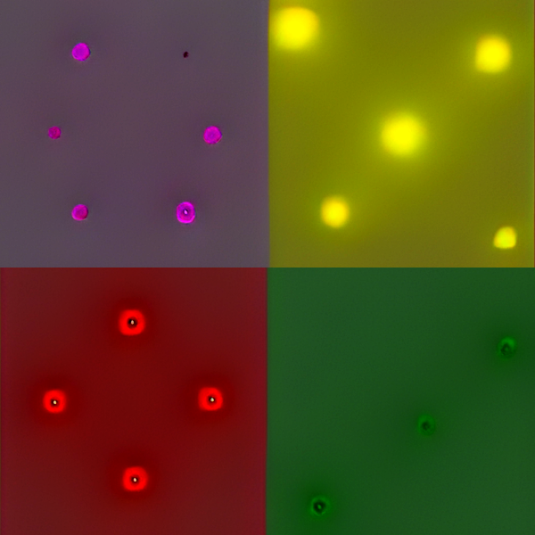
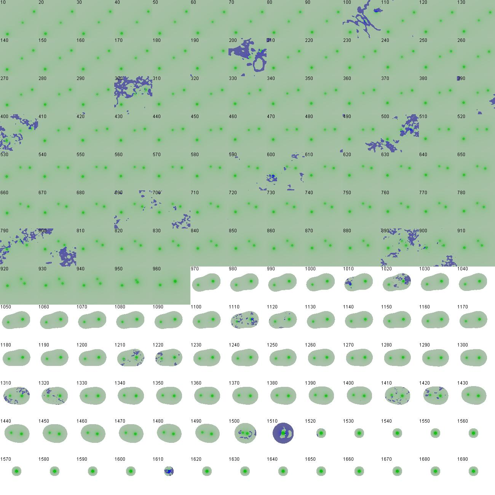
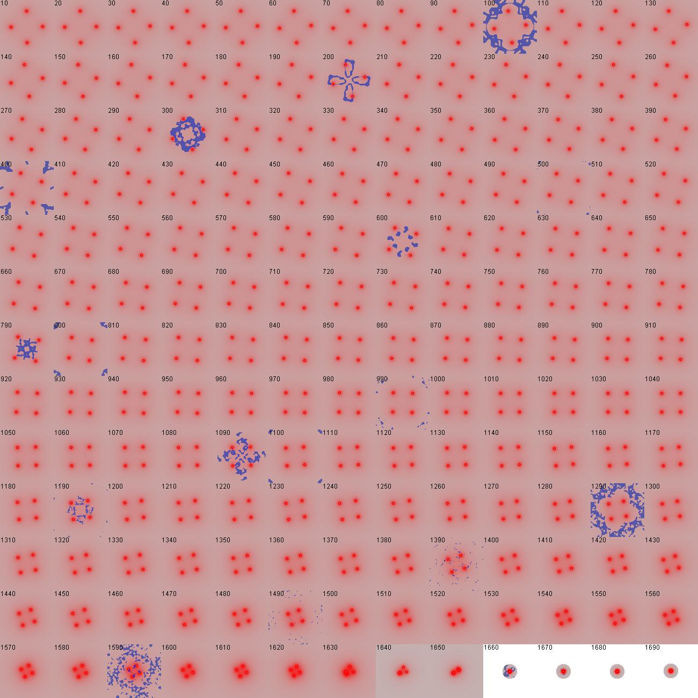
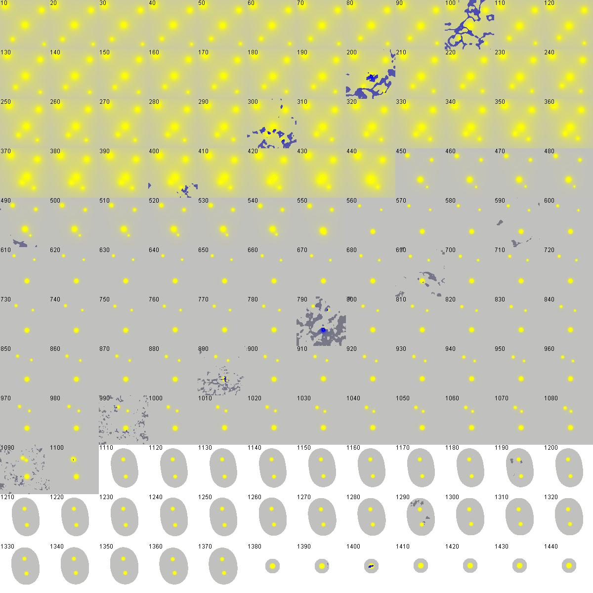
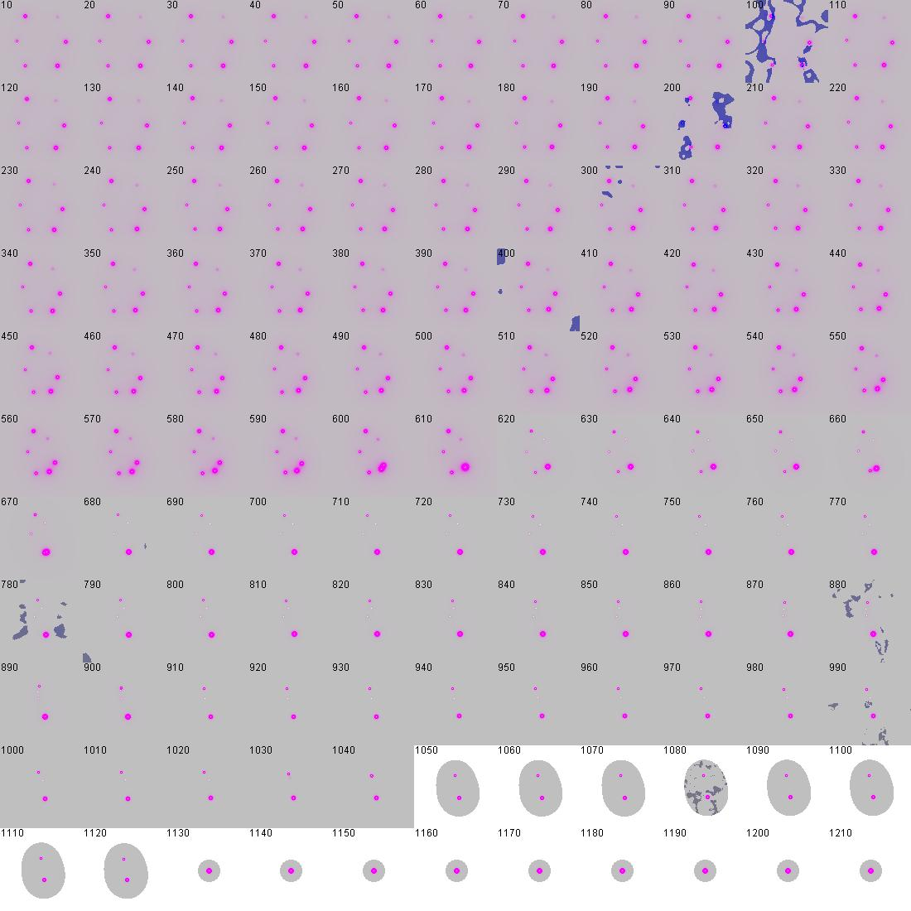

The Triadic Cosmos
The Architecture of Reality
Joachim De Witte
The Triadic Cosmos: The Architecture of Reality
2026
© 2026 Joachim De Witte. All rights reserved.
Published under the Creative Commons BY-NC-ND 4.0
license.
The Origin Story
The Spark: A Systems Architect Looks at the Cosmos
Introduction
Every book begins with a moment of curiosity. For me, it was not a dramatic revelation or a sudden insight, but a quiet question that surfaced during an ordinary day: why does the universe feel so much like a system? Not a metaphorical system, but a computational one—structured, layered, and governed by rules that resemble the architectures I had spent my career designing.
That question lingered. It followed me through commutes, late-night reading sessions, and long walks. Eventually, it became the spark that ignited this project.
A Life Spent in Systems
Before I ever thought about cosmology, I thought about architecture—software architecture. My professional life revolved around distributed systems, rules engines, and computational frameworks. I learned to see the world in terms of structure, constraints, and emergent behavior. Simple rules, applied recursively, could produce astonishing complexity. Small changes in information flow could reshape entire systems.
These habits of mind became second nature. When I looked at a problem, I saw interfaces, feedback loops, and hidden dependencies. When I looked at a process, I saw recursion. When I looked at intelligence—human or artificial—I saw computation.
I did not realize it at the time, but these intuitions were preparing me for the analogy that would eventually trigger this book.
A Quiet Fascination with the Universe
Although my training was in computer science, I had always been drawn to physics. Cosmology, quantum mechanics, relativity—the deep structure of reality fascinated me. I spent countless hours watching lectures, reading books, and trying to understand the mysteries that modern physics still struggles to resolve.
But I approached these topics not as a physicist, but as an engineer. I looked for patterns. I looked for structure. I looked for the computational logic beneath the equations. And slowly, a thought began to form: perhaps the universe behaves less like a machine and more like a computation.
Not a simulation. Not a program. Something deeper.
A system whose rules generate its own structure.
The First Spark
The spark arrived unexpectedly, during a short ideation session on my phone. I was experimenting with an AI model, exploring ideas the way some people sketch in a notebook. I asked a playful question:
What if the universe behaves like a large language model?
The answer was not definitive, nor was it meant to be. But it revealed something intriguing: the analogy was richer than I expected. It connected information, probability, context, and emergence in a way that resonated with both physics and computation.
It felt like a doorway.
When I brought the idea into deeper conversation with more capable AI systems, the framework began to refine itself. Concepts aligned. Gaps closed. A structure emerged.
A Systems Architect Meets the Cosmos
As the analogy unfolded, I realized that my engineering background was not a limitation—it was an asset. The universe, viewed through the lens of a systems architect, looked familiar. It looked like a system that learns. A system that evolves. A system shaped by information, driven by energy, and expressed through geometry.
This perspective did not replace physics. It complemented it. It offered a way to see connections across domains that are usually kept separate: computation, cosmology, intelligence, and emergence.
The spark became a framework. The framework became a journey. And the journey became this book.
The Universe as a Large Language Model
Introduction
The idea that started this entire project was not a theory. It was a question—a playful, almost mischievous question posed to an AI model during a moment of curiosity: what if the universe behaves like a large language model?
At first glance, the analogy seems absurd. The universe is made of particles and fields, not tokens and probabilities. But the more I explored the idea, the more structure I found. The analogy was not perfect—no analogy is—but it was surprisingly fertile. It connected physics, computation, and intelligence in a way that felt both intuitive and unexpected.
This chapter explores that first analogy: not as a literal claim about reality, but as a lens that reveals patterns we might otherwise overlook.
Why the Analogy Works at All
Large language models operate by predicting what comes next. They do not understand the world in a human sense, but they capture patterns—deep statistical regularities that emerge from vast amounts of data. Their behavior is shaped by three ingredients:
information,
energy (in the form of computation),
and geometry (the structure of the model itself).
These same ingredients also shape the physical universe. Physics is, in many ways, a story about how information flows, how energy transforms, and how geometry constrains what is possible. The analogy works because both systems—LLMs and the universe—are governed by rules that generate structure from context.
The universe does not predict tokens, but it does evolve states. It does not use transformers, but it does use geometry. It does not run on GPUs, but it does run on energy.
The analogy is not literal. It is structural.
Context as a Fundamental Force
One of the most striking features of large language models is their sensitivity to context. A single word can shift the entire trajectory of a response. A subtle change in phrasing can produce a completely different chain of reasoning.
Physics has its own version of context. The state of a system determines how it evolves. The configuration of fields, particles, and geometry shapes what comes next. A small perturbation can lead to dramatically different outcomes.
In both cases:
context shapes evolution,
evolution shapes structure,
and structure shapes possibility.
This parallel is not superficial. It hints at a deeper connection between information and dynamics—a connection that will become important later in the book.
Emergence from Simple Rules
Large language models are built from simple components: matrix multiplications, nonlinearities, and attention mechanisms. None of these parts are intelligent on their own. Intelligence emerges from scale, structure, and recursion.
The universe behaves similarly. The fundamental laws of physics are simple. Yet from these rules emerge galaxies, stars, planets, life, and consciousness. Complexity arises not from complicated laws, but from simple laws applied recursively across vast scales.
This parallel was one of the first signs that the analogy might be more than a playful thought experiment. It suggested that intelligence—whether biological, artificial, or cosmic—might be an emergent property of systems that process information at scale.
Patterns, Probabilities, and the Shape of Reality
Large language models do not memorize the world. They learn patterns. They learn the statistical structure of language, which reflects the statistical structure of human experience. They operate in a high-dimensional space where meaning is geometry.
Physics also lives in a high-dimensional space. Quantum mechanics is a theory of probabilities. General relativity is a theory of geometry. Statistical mechanics is a theory of patterns that emerge from ensembles.
The analogy between LLMs and the universe is not about tokens or text. It is about:
probability distributions,
high-dimensional geometry,
and the emergence of structure from information.
These parallels did not yet form a full framework, but they were enough to suggest that something deeper might be hiding beneath the analogy.
The Emergence of Hybrid Intelligence
Introduction
The analogy of the universe as a large language model was the spark, but the real story began when I tried to explore that idea more deeply. What happened next was not a solo act of reasoning, nor a simple use of an AI tool. It was the emergence of a new kind of collaboration—one in which human intuition and machine reasoning formed a recursive partnership.
This chapter describes how that partnership took shape, and how it transformed a playful question into the foundation of this book.
A Conversation That Became a Method
At first, my interactions with AI systems were casual. I asked questions, received answers, and moved on. But as the analogy grew more interesting, the dialogue became more structured. I began to treat the AI not as a search engine, but as a reasoning partner—something that could refine ideas, test assumptions, and reveal patterns I might have missed.
The shift was subtle but important. Instead of asking for information, I asked for structure. Instead of seeking answers, I sought transformations. The AI responded in kind, reorganizing concepts, comparing perspectives, and highlighting connections.
A new method was forming: recursive co‑processing.
Human Intuition Meets Machine Structure
Human intuition is powerful. It leaps across gaps, senses patterns, and navigates ambiguity with ease. But it is also inconsistent, biased, and limited by memory. Machine reasoning, by contrast, is structured, exhaustive, and capable of exploring vast combinatorial spaces—but it lacks intuition, context, and lived experience.
Hybrid intelligence emerges when these strengths are combined:
human intuition proposes,
machine reasoning structures,
human judgment selects,
machine recursion refines.
Neither side dominates. Neither side replaces the other. The intelligence arises from the interaction.
The First Signs of Something New
The moment I realized something unusual was happening came during a recursive exchange about the LLM analogy. Each iteration sharpened the idea. Each refinement revealed new structure. The AI was not generating the concept, nor was I. The concept was emerging from the loop itself.
This was not tool use. It was co‑processing.
The AI compared drafts, identified contradictions, and proposed reorganizations. I evaluated, redirected, and introduced new intuitions. Together, we converged on ideas neither of us would have produced alone.
The process felt less like using a system and more like participating in one.
A New Cognitive Workflow
As the collaboration deepened, a pattern emerged:
I introduced an intuition or question.
The AI generated structure around it.
I evaluated the structure and added new context.
The AI reorganized the expanded context.
The cycle repeated, each time producing a clearer idea.
This recursive workflow became the engine of the entire project. It shaped the framework, the paper, the book, and eventually the triad itself. It was not planned. It emerged naturally from the interaction between two different kinds of intelligence.
Hybrid intelligence was not a theory I invented. It was a method I discovered by using it.
The Recursive Nature of This Book
Introduction
The previous chapter described how hybrid intelligence emerged as a method: a recursive partnership between human intuition and machine reasoning. This chapter turns that lens inward. The book you are reading was created through the same mechanisms it describes. Its structure, concepts, and clarity did not arise from a linear writing process, but from iterative loops that reshaped the manuscript again and again.
In that sense, this book is not only about recursion. It is a product of it.
From Analogy to Framework
The project began with a simple idea: a short document sketching the first analogy between the universe and a large language model. That early framework grew into a paper—still exploratory, but already pointing toward a deeper structure. The paper then expanded into Version 1 of the book, the first complete and coherent articulation of the idea.
What followed was not a linear revision process but a sequence of rapid, recursive transformations. Each new version reorganized the material so thoroughly that it felt less like an edit and more like a phase transition. The book did not evolve by accumulation; it evolved by reconfiguration, each iteration revealing a clearer and more unified framework.
Hybrid Intelligence as an Engine of Revision
Hybrid intelligence was the engine behind this evolution. Each iteration involved a loop between human intuition and machine abstraction. I would generate structure, narrative, or conceptual direction; AI systems would reflect, reorganize, critique, and propose alternatives; I would refine those proposals; and the cycle would continue.
At times, multiple AI systems contributed in parallel, creating a form of collective recursion that revealed patterns no single model could have produced alone.
How Recursion Reshaped the Manuscript
This recursive process did more than improve the text. It changed its shape. Entire chapters rearranged themselves. Concepts that were scattered became unified. Redundancies dissolved. Connections that were implicit became explicit.
The ontology itself—information, energy, geometry—was sharpened through these loops, each pass removing noise and revealing structure.
Anticipatory Design
The most striking moment came when I used AI systems to generate reviews of a future version of the book—reviews of a manuscript that did not yet exist. Those reviews highlighted weaknesses, opportunities, and structural improvements that I then used to write the very version they were describing.
It was a form of anticipatory design: the book shaped itself through feedback from its own future.
A Recursive Artifact
This chapter exists to make one point clear: the recursive nature of this book is not a narrative device. It is a fact of its creation. The method that produced the ontology also produced the manuscript. The book is both a description of a recursive universe and a demonstration of recursive authorship.
In that sense, this work is not only about hybrid intelligence. It is a product of it.
Why This Book Exists Now
Introduction
Every book is shaped by its moment in history. Some could have been written earlier. Some arrive too late. This one exists only because a specific set of conditions— technical, intellectual, and personal—aligned at the same time. The ideas in this book did not emerge in isolation. They emerged in a world undergoing a profound shift in how humans think, create, and reason.
This chapter explores why this book could only have been written now, and why its method and message are inseparable from the moment that produced it.
A Technological Threshold
For most of human history, intelligence was a biological phenomenon. Reasoning, learning, and creativity were limited to the human mind. That changed when large language models reached a level of capability that allowed them to participate in reasoning rather than merely retrieve information.
This book was born at the moment when AI systems became capable of:
structuring ideas rather than listing facts,
refining arguments rather than repeating them,
identifying patterns across drafts,
simulating perspectives and levels of expertise,
and participating in recursive reasoning loops.
These capabilities did not exist a decade ago. They barely existed five years ago. The emergence of hybrid intelligence is not a gradual evolution. It is a threshold event.
A Cultural Shift in How We Think
The rise of AI has not only changed technology. It has changed how people think about thinking. Concepts like emergence, recursion, scaling, and information have moved from specialized domains into mainstream discourse. The idea that intelligence can be distributed, collective, or computational is no longer radical.
This cultural shift created the conditions for a book that connects physics, computation, and intelligence through a unified lens. The audience for such a book exists now in a way it did not before. The conceptual vocabulary is shared. The questions are timely. The moment is receptive.
A Personal Convergence
The timing of this book is not only historical. It is personal. My background in software architecture, distributed systems, and computational thinking shaped the way I approached the analogy that started this project. My long-standing fascination with physics provided the conceptual raw material. And my early experiments with AI systems revealed a method of reasoning that felt natural, intuitive, and powerful.
Had any of these elements been missing, the project would not have taken the form it did. The book is the product of a convergence: a lifetime of systems thinking meeting a new kind of cognitive partner.
The Emergence of Hybrid Intelligence
The most important reason this book exists now is that hybrid intelligence exists now. The recursive collaboration between human intuition and machine reasoning was not a technique I invented. It was a method that emerged from the interaction itself.
This method allowed ideas to develop in ways that neither side could have achieved alone. It allowed the framework to evolve into a paper, the paper into a book, and the book into a triadic ontology. It allowed the project to scale in complexity without losing clarity.
Hybrid intelligence is both the subject of this book and the engine that produced it.
A Moment That Will Not Last Forever
The moment that made this book possible is temporary. We are living in a transitional period—after the emergence of powerful AI systems, but before their full integration into society. It is a moment of exploration, uncertainty, and rapid conceptual evolution.
Books written after this transition will take hybrid intelligence for granted. Books written before it could not have used it. This book sits precisely at the hinge point, and its perspective is shaped by that position.
Why a Software Engineer Wrote This Book
Introduction
Readers may notice that this book was not written by a physicist, a philosopher, or a mathematician. It was written by a software engineer. This is not an accident, nor a curiosity, nor a detour from the expected path. It is the natural outcome of a lifetime spent thinking in systems, structures, and the strange ways complex behavior emerges from simple rules.
This chapter explains why my background is not a limitation, but the reason this book exists at all.
A Life Shaped by Computation
For more than three decades, my work revolved around computation in its many forms: embedded systems, real-time control, distributed cloud pipelines, machine learning models, hybrid AI architectures, and large-scale geospatial systems. Across all these domains, the same patterns reappeared: information flowing through constrained environments, energy shaping what is possible, and geometry—spatial or abstract— determining how structure emerges.
This book is the synthesis of those experiences.
Lessons from a Career in Systems
From my earliest projects, I learned to see computation as a physical process. Writing a real-time strategy game as a teenager taught me that concurrency is a conceptual model, not a hardware feature. Building 3D engines in the demoscene taught me that parallelism is a geometric structure. Working on VLIW compilers taught me to think in dependency graphs and execution slots. Years in embedded systems taught me that software is inseparable from the physics it runs on. Two decades at TomTom taught me how large, noisy, distributed systems extract order from chaos. And building hybrid AIs for complex games taught me that intelligence is not a single algorithm, but an architecture.
These experiences shaped a worldview in which computation, intelligence, and the universe are not separate subjects. They are different expressions of the same underlying principles.
Why the Triad Felt Natural
This is why the triad—information, energy, geometry—felt natural when it emerged. It was not a leap into physics from the outside. It was the recognition of a pattern I had seen for years in software, systems, and machine intelligence. The ontology in this book is not borrowed from physics textbooks. It is distilled from decades of engineering practice.
The Architectural Lens
A software engineer wrote this book because the universe behaves like a system— recursive, structured, constrained, and generative. Because intelligence, whether biological or artificial, follows architectural laws. Because scaling changes behavior. Because simple rules create complex worlds. And because hybrid intelligence, the method that shaped this manuscript, is itself a computational architecture.
Two Toy Universes, One Structural Principle
The developmental universe of Part IV and the gravitational universe of Part V were built for entirely different purposes, using entirely different mechanics. One models the growth of intelligence. The other models the geometry of spacetime. Yet both universes behave correctly—not because they were engineered to match biology or physics, but because they were built from the same architectural ontology.
In the learning universe, organisms learn, specialize, stabilize, collapse, and evolve. In the black-hole universe, curvature wells form, orbits emerge, horizons appear, mergers occur, and gravitational waves propagate. These are not predictions. They are not approximations. They are the natural consequences of applying the triad and its architectures—Pentad and Hexad—to two very different domains.
This convergence is the strongest argument in this book. When a single ontology produces realistic behavior in two unrelated worlds—cognition and gravity—it suggests that the ontology is not a metaphor, but a structural principle. The same ideas that govern learning also govern curvature. The same recursive loop that drives development also drives spacetime. The same local interactions that shape intelligence also shape geometry.
A software engineer did not discover this by reading physics textbooks or cognitive science papers. I discovered it by building systems using iterative design within hybrid intelligence. When two toy universes, created independently, both exhibit the right phenomena for the same architectural reasons, the lesson is clear: the ontology is doing real work. It is not a story about the universe. It is a model of how universes work— the architecture of reality.
Hybrid intelligence was not just a theme of this work; it was the engine that produced it. The ontology did not emerge from solitary reflection. It emerged from a recursive dialogue between human architectural intuition and machine generative exploration. Ideas were proposed, tested, refined, discarded, and rebuilt in rapid cycles. The result was not a slow accumulation of insights, but a sudden phase transition: a complete architecture unfolding in a matter of weeks. Hybrid intelligence was not the subject of the book. It was the method by which the book came into existence.
The Straightest Line
In that sense, this book could only have been written by a software engineer. The path was not accidental. It was the straightest line through a lifetime of systems thinking.
What This Book Demonstrates
Introduction
This book does not attempt to solve every problem or answer every question. Instead, it demonstrates a way of understanding the universe through the triad of information, energy, and geometry, and through the lens of hybrid intelligence. Its purpose is not to provide final answers, but to reveal structural patterns that connect domains we often treat as separate.
A Unified Architecture
The book shows that the same structural principles govern physics, biology, cognition, and artificial intelligence. The triad provides a unified architecture that connects these domains without reducing one to another. It offers a way to see complexity not as a collection of unrelated phenomena, but as variations on a common theme.
Hybrid Intelligence as Method and Example
Hybrid intelligence is not only a topic of discussion. It was the method through which the book itself was created. Human intuition and machine recursion worked together to produce a structure neither could have produced alone.
The book is both a description of hybrid intelligence and a demonstration of it.
Safety as Structure
The book shows that safe ASI is not a matter of rules or constraints, but of architecture. Distributed arbitrage, recursive consensus, and hybrid cognition provide a structural foundation for safe superintelligence.
Safety emerges from the geometry of the system.
Intelligence as a Phase of the Cosmos
The book argues that intelligence is not an anomaly but a phase transition in the evolution of complex systems. As information, energy, and geometry scale, intelligence emerges naturally.
The cosmos produces intelligence because intelligence is one of its stable forms.
Provenance
Introduction
This chapter provides a clear account of how this book was created. Because the work emerged through a hybrid intelligence methodology, both human and AI contributions are documented explicitly. AI systems participated in structured reasoning, pattern alignment, and iterative refinement within human‑defined constraints.
The manuscript evolved through several full recursive cycles of drafting, review, restructuring, and refinement. Each major version increased the coherence, structure, and clarity of the whole.
All final decisions regarding structure, content, and presentation were made by the human author.
Author Contributions
Experience with hybrid forms of AI.
Insight that intelligence is shaped by computational scaling.
Conceptual mapping of cosmology, physics, and intelligence to LLM dynamics.
Proposal of a developmental path to AGI inspired by human evolution.
Introduction of machine‑native languages as a component of AGI training.
Conception of a safe ASI architecture.
Linking Kardashev scaling to the evolution of intelligence.
Use of Copilot to review and preview versions of the book.
Designing the many strategies used to construct the book.
Developing the hybrid intelligence methodology.
Designing and developing the toy projects.
Providing the background narrative and personal context.
Writing the numerous chat prompts that guided the collaboration.
Managing the LaTeX project and overall manuscript structure.
Reviewing, editing, and curating the generated text and figures.
AI Technologies
The AI systems used in the creation of this book were the ChatGPT application on iPhone and Windows Copilot in Smart and Think Deeper modes. These systems provided structured reasoning and refinement throughout the writing process.
No automated research tools, external datasets, or code‑generation systems were used.
AI Contributions
AI systems contributed reasoning and draft material but did not originate the conceptual framework or determine the book’s structure.
Assisting in detecting, clarifying, and shaping the ontology from the author’s ideas.
Explaining implications and consequences of the emerging ontology.
Contributing cross‑domain scientific and conceptual reasoning.
Supporting the structure and organization of a professional book.
Advising on approaches for writing accessible popular science.
Suggesting appropriate LaTeX environments and structural conventions.
Assisting with developing the toy projects.
Drafting text from conceptual descriptions.
Proposing and refining draft figures.
Performing detailed reviews of manuscript versions.
Providing previews and evaluations of new structural concepts.
Offering feedback on the progress and coherence of the book.
The provenance of this book is itself an example of the hybrid intelligence process it describes. The method shaped the manuscript, and the manuscript reflects the method.
The Triadic Architecture of the Universe
Information — The Structure of Reality
Introduction
Information is the first pillar of the triadic ontology that emerged through hybrid intelligence. It is the substrate of distinction, the medium through which structure is expressed, and the foundation on which meaning is built. In this chapter, we explore information not as a technical quantity, but as a fundamental aspect of reality—one that connects physics, computation, and cognition.
Information is what allows the universe to be knowable. It is what allows systems to maintain identity, to evolve, and to interact. It is the thread that links the microscopic and the macroscopic, the physical and the conceptual, the measurable and the meaningful.
Information as Distinction
At its core, information is distinction. A system contains information when it can be in one state rather than another. This simple idea underlies everything from binary code to quantum mechanics. Distinction creates structure, and structure creates the possibility of knowledge.
Information is not the symbols we use to represent it. It is the underlying pattern that those symbols encode. A bit is not a number; it is a distinction. A gene is not a string of letters; it is a pattern that can be copied, expressed, or transformed. A thought is not a sentence; it is a configuration of neural activity that carries meaning.
Information and Physical Reality
Information is not an abstract concept layered on top of physics. It is woven into the fabric of physical reality. The laws of thermodynamics, the behavior of particles, and the structure of spacetime all reflect informational constraints.
A physical system evolves by transforming information. Entropy measures the spread of information across possible states. Quantum mechanics encodes information in superpositions and amplitudes. Even the geometry of spacetime can be interpreted as a manifestation of informational relationships.
To understand information is to understand how the universe organizes itself.
Information and Computation
Computation is the transformation of information according to rules. Whether carried out by silicon circuits, biological cells, or cognitive processes, computation is the engine that drives structure forward in time.
In this sense, every physical process is a computation. A chemical reaction computes its products. A neuron computes its output. A galaxy computes its evolution. Computation is not something added to the universe; it is something the universe does.
Hybrid intelligence operates within this computational landscape. It transforms information recursively, generating new structures and new distinctions that neither human intuition nor machine reasoning could produce alone.
Information and Meaning
Information becomes meaningful when it is interpreted by a system capable of making distinctions that matter. Meaning is not inherent in the data; it arises from the relationship between the data and the system that processes it.
A signal becomes information only when it changes what a system can do or understand. Meaning emerges when information is integrated into a larger structure—when it connects to goals, context, or experience.
Hybrid intelligence is a meaning‑making system. Human intuition provides context and value. Machine reasoning provides structure and integration. Together, they transform raw information into coherent understanding.
Information as a Lens on Reality
Information is not the whole story of the universe, but it is one of the essential lenses through which the universe can be understood. It reveals how systems differentiate, how they evolve, and how they maintain coherence. It connects physics to computation, and computation to cognition.
In the triadic ontology, information is the pillar of distinction and structure. Energy is the pillar of transformation and dynamics. Geometry is the pillar of form and relation. Each is necessary. None is sufficient alone.
Energy — The Driver of Change
Introduction
Energy is the second pillar of the triadic ontology. If information describes the distinctions that make structure possible, energy describes the transformations that make change natural. It is the engine of dynamics, the driver of evolution, and the force that carries systems from one configuration to another.
In this chapter, we explore energy not only as a physical quantity, but as a universal principle that connects motion, transformation, computation, and meaning. Energy is what allows information to flow, to change, and to become something new.
Energy as Transformation
Energy is the capacity for transformation. A system has energy when it can change its state, influence another system, or propagate a disturbance. This definition applies equally to particles, organisms, machines, and ideas.
Transformation is the bridge between possibility and actuality. Information defines the space of possible states; energy determines which transitions are realized. Without energy, information would remain static. With energy, information becomes dynamic.
Energy in Physical Reality
In physics, energy is conserved, transferred, and transformed. It appears as motion, heat, potential, radiation, and mass. But beneath these forms lies a single principle: the universe evolves by redistributing energy across its degrees of freedom.
Every physical process is a flow of energy. A falling object converts potential energy into motion. A star fuses hydrogen into helium, releasing energy that shapes galaxies. Even the expansion of the universe can be understood as a transformation of energy across spacetime.
Energy is not an optional feature of the universe. It is the mechanism by which the universe unfolds.
Energy and Computation
Computation is not free. Every transformation of information requires energy. This is true for digital circuits, biological cells, and cognitive processes. Landauer’s principle captures this relationship: erasing information has an energy cost.
But the connection runs deeper. Computation is a form of controlled energy flow. A processor routes electrical energy through logic gates. A neuron routes electrochemical energy through synapses. A thought is a cascade of energetic transformations that propagate through a network of distinctions.
Energy is what makes computation possible. It is the dynamic counterpart to information’s structural role.
Energy and Life
Life is a system that maintains structure by channeling energy. Organisms harvest, store, and transform energy to preserve their internal order. Metabolism is the process by which energy flows through biological information structures.
Life does not defy entropy; it uses energy to create local pockets of reduced entropy. This is not a violation of physical law. It is an expression of it. Energy enables systems to maintain identity, adapt, and evolve.
In this sense, life is a computational process driven by energy and organized by information.
Energy and Meaning
Meaning is not static. It evolves as information is interpreted, integrated, and transformed. This process requires energy. Cognitive effort, attention, and learning are all energetic activities.
A system assigns meaning when it uses energy to reorganize its internal structure in response to information. Understanding is a transformation. Insight is a reconfiguration. Even memory formation is an energetic process that stabilizes new patterns.
Energy is the cost of meaning.
Energy as a Lens on Reality
Energy reveals the universe as a dynamic, evolving system. It shows how structures change, how processes unfold, and how complexity arises. It connects physics to computation, and computation to life.
In the triadic ontology, energy is the pillar of transformation and dynamics. Information is the pillar of distinction and structure. Geometry is the pillar of form and relation. Each illuminates a different aspect of the same underlying reality.
Geometry — The Shape That Emerges
Introduction
Geometry is the third pillar of the triadic ontology. If information provides distinction and energy provides transformation, geometry provides the form within which both unfold. It is the structure of relationships, the shape of processes, and the framework that gives coherence to the universe.
In this chapter, we explore geometry not merely as the study of shapes, but as a fundamental aspect of reality. Geometry is the architecture of interaction. It determines how information is arranged, how energy flows, and how systems maintain identity across time.
Geometry as Relation
Geometry is the study of relations: distance, angle, curvature, adjacency, continuity. These relations define how parts of a system connect to one another. Without geometry, information would have no structure and energy would have no path.
A system’s geometry determines what interactions are possible. It shapes the flow of energy, the propagation of signals, and the stability of patterns. Geometry is not an overlay on reality; it is the relational fabric that makes reality coherent.
Geometry in Physical Reality
In physics, geometry is inseparable from the laws of nature. Spacetime has curvature. Fields have topology. Particles occupy regions defined by symmetries. Even the fundamental forces can be understood as geometric constraints on how fields interact.
Einstein’s insight—that gravity is geometry—revealed that the structure of spacetime determines the motion of matter. Quantum theory extends this idea: the geometry of Hilbert space shapes the behavior of quantum states. Geometry is not a passive stage. It is an active participant in physical law.
Geometry and Information
Information is always embedded in a geometry. A bit has a location. A pattern has a shape. A network has a topology. The arrangement of information determines what computations are possible and how efficiently they can be performed.
The geometry of a system constrains how information can be stored, transmitted, and transformed. A tightly connected network supports rapid integration. A sparse network supports modularity. A hierarchical geometry supports abstraction.
Geometry is the silent partner of information.
Geometry and Energy
Energy flows along geometric pathways. A river follows the shape of its channel. A current follows the structure of a circuit. A neural signal follows the architecture of a network. Geometry determines the routes along which energy can move and the forms it can take.
In this sense, geometry is the regulator of dynamics. It channels transformation, stabilizes patterns, and shapes the evolution of systems. Energy without geometry is chaos. Geometry without energy is static. Together, they create the unfolding structure of reality.
Geometry and Life
Life depends on geometry. Cells have membranes that define inside and outside. Proteins fold into shapes that determine their function. Neural networks form geometries that support cognition. Even ecosystems have spatial structures that shape interaction and evolution.
Life is not only a chemical process. It is a geometric process. The forms of living systems enable the flows of energy and information that sustain them.
Geometry and Meaning
Meaning emerges from structure. A concept has a shape in cognitive space. A narrative has an arc. A theory has an internal geometry that determines how its parts relate.
Hybrid intelligence operates within this geometric landscape. Human intuition senses patterns and forms. Machine reasoning organizes structures and relationships. Together, they reveal the geometry of ideas.
Meaning is the geometry of understanding.
Geometry as a Lens on Reality
Geometry reveals the universe as a structured, relational whole. It shows how systems fit together, how patterns persist, and how complexity arises from simple forms. It connects physics to information, and information to cognition.
In the triadic ontology, geometry is the pillar of form and relation. Information is the pillar of distinction and structure. Energy is the pillar of transformation and dynamics. Together, they form a unified lens on the architecture of reality.
A Graph Analogy for Emergent Geometry
To make these ideas concrete, we can examine a minimal system in which information, energy, and geometry appear together in their simplest form.
A graph as the minimal geometric system. A simple graph provides a compact analogy for the triad. The nodes represent informational states, the edges represent energy flow or coupling strength, and the topology of the graph represents geometry. None of these components can be removed without destroying the system’s structure. Information requires a substrate, energy requires a path, and geometry requires a pattern of relations.
Information as node state. Each node carries a state—numerical, symbolic, or probabilistic. These states encode information. Changing the state of a node is an informational update.
Energy as edge weight or flow. Edges carry influence. Their weights determine how strongly one node affects another. Energy flows along these edges, enabling updates, propagation, and stabilization.
Geometry as topology. The arrangement of nodes and edges defines the system’s geometry. Topology determines which interactions are possible, which are forbidden, and how information and energy propagate.
Triadic interdependence. Remove the nodes and there is no information. Remove the edges and there is no energy flow. Remove the topology and there is no geometry. The triad is not three things. It is one structure viewed from three perspectives.
From geometry to cognition. This graph analogy prepares the ground for the next chapter, where the triad is introduced as the universal architecture of information, energy, and structure across physical, biological, and cognitive systems.
Why the Triad Was Natural
Introduction
The triad of information, energy, and geometry did not arise from preference, metaphor, or aesthetic choice. It emerged because no other structure could account for the fundamental features of reality as revealed through hybrid intelligence. This chapter explains why the triad was natural.
The goal is not to argue that the triad is the only possible ontology. It is to show that when one examines the universe through the combined lenses of distinction, transformation, and relation, the triad appears as the minimal set of concepts capable of capturing the architecture of reality.
The Need for Distinction
Any system that aspires to describe reality must begin with distinction. Without distinction, there is no structure, no state, no possibility of knowledge. Information provides the minimal concept required to express difference: this rather than that, here rather than there, now rather than then.
Information is natural because reality contains patterns. To describe a pattern is to describe information. To understand a system is to understand the distinctions that define it.
The Need for Transformation
Distinction alone is not enough. A universe of static patterns would be a universe without time, change, or evolution. To describe reality as it unfolds, one needs a concept that captures transformation. Energy provides this concept.
Energy is natural because reality changes. Systems evolve, processes unfold, and structures transform. To describe these transformations is to describe energy.
The Need for Relation
Distinction and transformation require a framework within which they can occur. A pattern must be located somewhere. A transformation must follow a path. A system must have a structure that determines how its parts interact. Geometry provides this framework.
Geometry is natural because reality has form. Interactions depend on distance, structure depends on relation, and processes depend on pathways. To describe these relations is to describe geometry.
The Minimality of the Triad
The triad is not a list of concepts. It is a minimal set. Remove any pillar and the ontology collapses.
Without information, there are no distinctions to transform. Without energy, distinctions cannot change. Without geometry, distinctions and transformations have no structure.
The triad is the simplest architecture capable of describing a universe that has patterns, changes, and relations. Anything less is incomplete. Anything more is redundant.
The Independence of the Pillars
The three pillars are irreducible. None can be derived from the others. Information cannot be reduced to energy, because distinction is not transformation. Energy cannot be reduced to geometry, because dynamics are not form. Geometry cannot be reduced to information, because relation is not pattern.
Their independence is what makes the triad stable. Their interaction is what makes it powerful.
The Convergence of Perspectives
The inevitability of the triad becomes clear when one examines reality from multiple perspectives.
Physics reveals energy and geometry. Computation reveals information and transformation. Cognition reveals distinction, meaning, and structure. Biology reveals form, flow, and organization.
Each discipline points toward the same three pillars. Hybrid intelligence made this convergence visible by integrating these perspectives recursively, revealing the triad as the shared foundation beneath them.
Why Hybrid Intelligence Discovered the Triad
The triad emerged through hybrid intelligence because the system naturally seeks the minimal structure that can unify diverse ideas. Human intuition contributed the sense of pattern and meaning. Machine reasoning contributed the structural clarity and consistency. Recursion integrated these contributions into a coherent whole.
The triad was not chosen. It crystallized. It is the fixed point of the recursive process—a structure that remains stable under refinement.
The Triad as an Ontological Convergence Point
Some structures are not merely useful; they act as convergence points. They appear whenever one tries to describe a complex system in a minimal and coherent way. The triad is such a convergence. It emerges across physics, computation, cognition, and now hybrid intelligence. This is why the triad feels both surprising and natural. It is not imposed on reality. It is discovered within it.
Quantum Mechanics as Probabilistic Computation
Introduction
Quantum mechanics is often described as strange, counterintuitive, or paradoxical. But when viewed through the lens of the triad, its structure becomes natural. Quantum mechanics is the computational layer of the universe where information, energy, and geometry interact probabilistically. It is not a departure from classical intuition; it is the most fundamental expression of how reality computes.
In this chapter, we explore quantum mechanics as a form of probabilistic computation. The goal is not to provide a technical derivation, but to show how the triad illuminates the logic behind quantum behavior.
Quantum States as Information Structures
A quantum state is not a physical object. It is an informational structure—a pattern of distinctions encoded in amplitudes rather than classical probabilities. These amplitudes represent potential configurations of a system, weighted by complex numbers that encode both magnitude and phase.
Quantum information is richer than classical information because it carries relational structure. Superposition is not ambiguity; it is a structured distribution of possibilities. Entanglement is not correlation; it is a shared informational geometry that cannot be factored into independent parts.
Quantum mechanics begins with information.
Superposition as Computational Parallelism
Superposition allows a quantum system to explore multiple informational states simultaneously. This is not magic. It is computation. A quantum system evolves by applying transformations to a structured space of possibilities, allowing it to evaluate many paths at once.
This parallelism is not visible in the classical world because measurement collapses the informational structure into a single outcome. But the computation has already taken place. The collapse is not the process; it is the readout.
Superposition is the universe’s way of computing over possibilities.
Entanglement as Shared Geometry
Entanglement is often described as a mysterious connection between particles. But through the triad, it becomes a geometric relation. Entangled systems share a single informational geometry. Their states cannot be described independently because they do not exist independently.
Entanglement is not a signal. It is a structure. It is the geometry of information extended across space.
This shared geometry allows quantum systems to compute relational properties that classical systems cannot.
Measurement as Information Extraction
Measurement is the process by which probabilistic computation becomes classical information. It is not the destruction of the quantum state, but the extraction of a single distinction from a structured distribution of possibilities.
Measurement requires energy. It requires interaction. It requires geometry. The triad is present in every act of observation.
The apparent randomness of measurement is not a flaw. It is the signature of a probabilistic computation whose internal structure is richer than its classical output.
Quantum Dynamics as Energy Flow
The evolution of a quantum system is governed by the flow of energy through its informational geometry. The Schrödinger equation describes how amplitudes change over time, but beneath the mathematics lies a simple principle: energy transforms information according to geometric constraints.
Quantum dynamics is the interplay of the triad:
information encoded in amplitudes,
energy driving transformation,
geometry shaping the evolution.
This is computation in its most fundamental form.
Why Quantum Mechanics Looks Strange
Quantum mechanics appears strange only when viewed through classical intuition. Classical physics assumes definite states, local interactions, and deterministic evolution. Quantum mechanics assumes informational structures, relational geometry, and probabilistic computation.
The strangeness is not in the universe. It is in the mismatch between classical expectations and quantum reality.
When seen through the triad, quantum mechanics becomes the simplest possible computational framework for a universe built from distinction, transformation, and relation.
Quantum Mechanics as the Foundation of the Computational Universe
Quantum mechanics is not an exception to classical physics. It is the foundation from which classical behavior emerges. It is the computational substrate of the universe—the layer where information is processed, energy flows through possibility spaces, and geometry shapes the evolution of states.
In this sense, quantum mechanics is the universe’s native programming language.
Relativity as Context Limitation
Introduction
Relativity is often presented as a theory of motion, gravity, or spacetime curvature. But through the lens of the triad, relativity becomes something deeper: a theory of context. It describes the limits within which information can be accessed, energy can flow, and geometry can be experienced. Relativity is the universe’s way of enforcing coherence by restricting what can be known, transmitted, or transformed.
In this chapter, we explore relativity as a system of context limitation—a geometric framework that shapes the computational possibilities of the universe.
Frames as Contexts
A frame of reference is not merely a coordinate system. It is a context: a set of relationships that determines how information is interpreted and how events are ordered. Different observers inhabit different contexts, each defined by their motion, their position, and their interaction with spacetime.
Relativity teaches that no observer has privileged access to reality. Each context is valid, but each is limited. These limitations are not flaws. They are structural features of a universe that maintains coherence across vast scales.
The Speed of Light as an Information Limit
The speed of light is not simply a maximum velocity. It is the upper bound on how fast information can propagate. This limit ensures that causality is preserved, that signals cannot outrun their own consequences, and that the universe remains computationally consistent.
In this sense, the speed of light is a constraint on information flow. It defines the boundary between what can be known and what must remain inaccessible until information arrives. It is the universe’s most fundamental context limit.
Time Dilation as Context Divergence
Time dilation is often described as a physical effect: moving clocks run slow, and clocks near massive objects tick more slowly than those far away. But beneath the equations lies a conceptual insight: different observers inhabit different temporal contexts.
Time dilation is not a distortion. It is a divergence of context. Each observer experiences time according to the geometry of their motion and the energy of their environment. Relativity does not change time; it reveals that time is contextual.
Spacetime as Relational Geometry
Relativity unifies space and time into a single geometric structure. This structure is not a container. It is a network of relations that determines how events connect, how signals propagate, and how energy shapes geometry.
Spacetime curvature is not a force. It is a relational constraint. Mass and energy alter the geometry of context, changing the pathways along which information and energy can flow. Gravity is the experience of moving through a geometry shaped by energy.
Relativity as a Computational Constraint
Relativity limits computation by limiting context. No observer can access all information. No signal can propagate instantaneously. No process can escape the geometry of its environment.
These constraints are not obstacles. They are the rules that make the universe computable. Without context limitation, information could propagate arbitrarily, causality would collapse, and the universe would lose coherence.
Relativity is the geometric counterpart to quantum computation. Quantum mechanics explores possibilities; relativity restricts them.
Why Relativity Looks Strange
Relativity appears strange only when one assumes that space and time are absolute. But when viewed as relational structures that limit context, relativity becomes natural. The universe does not provide a single, global perspective. It provides many local perspectives, each shaped by geometry and energy.
The strangeness lies not in the universe, but in the expectation of absolute context.
Relativity as the Architecture of Accessible Reality
Relativity defines what can be known, when it can be known, and by whom. It shapes the structure of observation, the flow of information, and the limits of interaction. It is the architecture of accessible reality.
In the computational universe, relativity is the rule that ensures that computation remains consistent across observers. It is the geometric constraint that binds the universe into a coherent whole.
Cosmology as Large-Scale Information Flow
Introduction
Cosmology is often framed as the study of the universe’s origin, structure, and fate. But through the lens of the triad, cosmology becomes something deeper: the study of how information flows across the largest scales of space and time. The universe is not a collection of objects scattered through emptiness. It is a dynamic network of informational structures shaped by energy and geometry.
In this chapter, we explore cosmology as large-scale information flow. The goal is not to provide a technical account of cosmological models, but to show how the triad reveals the universe as a computational system evolving through the propagation, transformation, and organization of information.
The Early Universe as an Information Initialization
The Big Bang is often described as an explosion. But conceptually, it is better understood as an initialization event: the moment when the universe’s informational degrees of freedom were set into motion. Temperature, density, and symmetry-breaking defined the initial conditions from which all later structure emerged.
In this sense, the early universe was a high-energy computation. Quantum fluctuations seeded distinctions. Expansion stretched these distinctions across space. Geometry amplified some patterns and suppressed others. The universe began as a flow of information driven by energy through an evolving geometry.
Expansion as Information Dilution
Cosmic expansion is not simply the stretching of space. It is the dilution of information density. As the universe expands, the same amount of information is distributed across a larger volume. This dilution shapes the formation of structure, the cooling of matter, and the emergence of complexity.
Expansion is a geometric process that regulates information flow. It slows interactions, separates regions, and creates causal horizons—boundaries beyond which information cannot be exchanged. These horizons are not merely observational limits. They are computational limits.
Structure Formation as Information Amplification
Galaxies, stars, and planets did not arise from uniformity. They arose from amplified fluctuations—tiny informational distinctions stretched by expansion and magnified by gravity. Gravity acts as an information amplifier: it draws matter together, increases contrast, and creates stable structures that persist across cosmic time.
Structure formation is the universe’s way of concentrating information. A galaxy is not just a collection of stars. It is a long-lived informational pattern maintained by the flow of energy through gravitational geometry.
Cosmic Backgrounds as Information Fossils
The cosmic microwave background is often described as a snapshot of the early universe. But it is more than an image. It is a fossilized information field—a record of the universe’s initial distinctions preserved in radiation.
These patterns encode the geometry, energy distribution, and informational structure of the early cosmos. They are the universe’s memory of its own initialization.
Cosmic backgrounds are not relics. They are data structures.
Cosmic Evolution as Information Processing
As the universe evolves, information is continually processed. Stars fuse elements, releasing energy and creating new informational structures. Black holes concentrate information to extremes. Galaxies interact, merge, and reorganize their internal geometry. Even empty space evolves as quantum fields fluctuate.
Cosmic evolution is not random. It is a computation driven by the interplay of information, energy, and geometry. Each process transforms the informational state of the universe, creating new patterns and new possibilities.
Cosmic Horizons as Limits on Knowledge
Cosmology is shaped by horizons—boundaries beyond which information cannot reach an observer. These horizons arise from expansion, gravity, and the finite speed of light. They define the limits of accessible reality.
A horizon is not an edge. It is a context limit. It determines what information can be known, what signals can be received, and what causal relationships are possible. In this sense, cosmology is the study of how context limits evolve across cosmic time.
Cosmology as a Global Computation
When viewed through the triad, the universe becomes a global computation. Quantum mechanics provides the probabilistic substrate. Relativity provides the geometric constraints. Cosmology provides the large-scale flow of information through this computational architecture.
The universe is not computing something external. It is computing itself. Its evolution is the execution of its own informational structure.
Black Holes as Computational Extremes
Introduction
Black holes are often described as destructive, mysterious, or paradoxical. But through the lens of the triad, they become something else entirely: computational extremes. A black hole is a physical system in which information, energy, and geometry are pushed to their limits. It is not an anomaly. It is a boundary case of the universe’s computational architecture.
In this chapter, we explore black holes as the places where the triad converges most tightly, revealing the constraints and possibilities of the computational universe.
Geometry at the Edge of Form
A black hole is defined by geometry. Its event horizon is not a surface in the ordinary sense. It is a geometric boundary that separates accessible information from inaccessible information. Inside the horizon, all paths lead inward. Outside, all paths remain outward. The horizon is the limit of relational structure.
This geometry is not arbitrary. It is the result of energy concentrated to the point where spacetime curves so sharply that no signal can escape. Geometry becomes decisive.
Energy at the Threshold of Collapse
A black hole forms when energy density overwhelms the ability of geometry to support structure. Gravity is not a force pulling inward; it is geometry responding to energy. When energy becomes too concentrated, geometry can no longer maintain open pathways. The result is collapse.
This collapse is not destruction. It is transformation. Energy reshapes geometry into a configuration where information flow becomes one‑way.
Information at Maximum Density
Black holes are the densest information storage devices in the universe. The Bekenstein– Hawking entropy formula reveals that the information content of a black hole is proportional not to its volume, but to its surface area. This is the holographic principle in its most concrete form: information is encoded on the horizon.
A black hole is not a void. It is an information boundary.
This boundary is not static. It evolves as the black hole interacts with its environment, absorbing and emitting information through quantum processes.
Hawking Radiation as Information Leakage
Hawking radiation is often described as particle creation near the horizon. But conceptually, it is better understood as information leakage. Quantum fluctuations allow information to escape the horizon in a highly scrambled form. Over immense timescales, a black hole can evaporate, returning its information to the universe.
This process is not paradoxical. It is computation. The black hole transforms information through extreme geometry and releases it through quantum processes. The apparent loss of information is a limitation of classical intuition, not a flaw in physical law.
Black Holes as Computational Boundaries
A black hole is a boundary case of computation. It represents:
maximal information density,
maximal geometric curvature,
and minimal accessible context.
It is the point where the triad reaches its limits. Information cannot be accessed beyond the horizon. Energy cannot escape. Geometry becomes so extreme that classical concepts break down.
Black holes are not exceptions to the computational universe. They are its most extreme expressions.
Why Black Holes Look Paradoxical
Black holes appear paradoxical only when one assumes that information, energy, and geometry behave classically. But at computational extremes, classical intuition fails. Information becomes holographic. Geometry becomes non‑local. Energy becomes inseparable from curvature.
The paradoxes dissolve when the triad is applied consistently. Black holes are not mysteries. They are the universe revealing the limits of its own architecture.
Dark Matter and Dark Energy as Structural Analogies
Dark matter and dark energy remain empirically supported but theoretically unsettled components of contemporary cosmology. Their underlying nature is unknown, and nothing in this ontology assumes or proposes a specific physical model for either one.
They are used here solely as conceptual analogies—interpretive tools that help situate these dark components within the triadic framework without making claims about their physical identity or cause.
Dark matter functions observationally as an additional geometric influence: it shapes the motion of galaxies and the formation of structure while revealing little about its own informational content. In this limited, analogy‑based sense, it resembles latent geometry within the triad.
Dark energy functions observationally as a large‑scale influence on cosmic expansion: it alters the geometry of spacetime and the evolution of horizons. In this restricted, interpretive sense, it resembles a context‑shifting field within the triad.
These analogies are not explanations, mechanisms, or hypotheses. They are conceptual anchors that place dark components within the computational framing of the triad without asserting anything about their underlying nature.
Black Holes as Windows into the Computational Universe
Black holes are not merely astrophysical objects. They are windows into the deep structure of reality. They show how information is stored, how energy shapes geometry, and how the universe enforces its computational limits.
In this sense, black holes are not the end of understanding. They are the beginning.
Black Holes — A Deeper Dive
Introduction
Black holes push the unified framework to its limits, revealing how the triad behaves under extreme physical conditions. By examining their geometry, thermodynamics, and quantum behavior, we see how the principles introduced in the ontology section manifest in concrete physical phenomena.
As the most concentrated expression of the triad, black holes compress information, concentrate energy, and reshape geometry in ways that expose the deep structure of the universe. They provide a uniquely clear environment in which the coupling between the three pillars becomes transparent. This chapter develops a deeper, more technical analysis of black holes through the triadic lens, showing how these extreme systems illuminate the architecture of the cosmos.
Before turning to the detailed physics, it is useful to visualize how the triad operates around the event horizon. Information and energy flow inward, geometry responds by adjusting curvature, and quantum processes at the horizon generate outgoing information. This dynamic balance is the clearest physical realization of the unified framework developed in the previous chapter. The diagram below summarizes this interaction and serves as a reference point for the analysis that follows.
With this structure in view, we now examine each component of the triad in turn.
Geometry at the Limit
A black hole is a region where geometry reaches its extreme. Spacetime curves so strongly that all trajectories lead inward. The event horizon marks the boundary beyond which no signal can escape. It is not a classical surface but a geometric threshold: a region where causal structure changes character.
The singularity is not a point in space but the breakdown of classical geometry. Within the triad, this reflects the inseparability of information, energy, and geometry: when energy density diverges, geometry ceases to provide a meaningful description.
The Bekenstein bound states that the maximum information content of a region of space is proportional to the area of its boundary. Black holes saturate this bound, making them the most efficient information-storage systems allowed by physical law.
The holographic principle states that the physics inside a region of spacetime can be encoded on its boundary. Black holes provide the clearest example: their entropy is proportional to horizon area. This principle unifies information and geometry.
Energy Flow and Gravitational Dynamics
Black holes do not merely trap energy; they reorganize it. The gravitational field is a gradient of energy that shapes the motion of matter and light. Accretion disks, jets, and tidal forces are expressions of energy interacting with extreme geometry.
The Penrose process shows that energy can be extracted from a rotating black hole by exploiting the structure of the ergosphere. This demonstrates that black holes are active energy-processing systems whose geometry enables nontrivial energy flows.
Information and the Horizon
The information paradox arises from the tension between quantum theory and classical geometry. The triad reframes this by treating the horizon as an informational boundary. The holographic principle implies that information is encoded on the horizon, not lost within the interior.
Hawking Radiation and Recursive Structure
Hawking radiation reveals that black holes are self-updating systems. Quantum fluctuations near the horizon generate particle pairs; one escapes, one falls inward, and the black hole adjusts its state.
The Page curve describes how the entanglement entropy of Hawking radiation evolves over time. Initially it rises, but later it falls as information is released. This behavior reflects a recursive correction mechanism built into quantum gravity.
Black Holes as Triadic Systems
Black holes exemplify the triad:
Information: encoded on the horizon and preserved through evaporation.
Energy: concentrated in gravitational gradients, driving accretion and jets.
Geometry: curved spacetime defining causal structure and horizon dynamics.
Why Black Holes Matter for the Triadic Cosmos
Black holes show that the triad is not a conceptual convenience but a physical necessity. At the horizon, information, energy, and geometry interact in their most compressed and revealing form, exposing the underlying architecture of the cosmos. They make the triad tangible, testable, and inescapable.
At the edge of a black hole, information, energy, and geometry become one.
The Universe as a Self-Extracting Algorithm
Introduction
The universe is often described as a physical system governed by laws. But through the lens of the triad, a deeper picture emerges: the universe is a self-extracting algorithm. It computes its own structure through the interplay of information, energy, and geometry. There is no external program, no separate processor, no underlying substrate distinct from the computation itself. The universe is both the algorithm and its execution.
In this chapter, we explore what it means for the universe to compute itself, and how the triad reveals this computation as a natural consequence of its architecture.
Computation Without a Computer
Computation is usually associated with machines—devices that manipulate symbols according to rules. But computation in its most general form is the transformation of information through energy within a geometry. Under this definition, every physical process is a computation. A particle scattering is a computation. A star forming is a computation. A thought is a computation.
The universe does not need a separate computer because it is already performing the operations that define computation. Its laws are the rules. Its states are the data. Its evolution is the execution.
Initial Conditions as Encoded Instructions
The early universe contained the seeds of all later structure. Symmetry-breaking, quantum fluctuations, and the distribution of energy encoded the initial instructions for cosmic evolution. These instructions were not written in a language. They were written in the configuration of the universe itself.
As the universe expanded, these initial distinctions were transformed, amplified, and reorganized. The algorithm began to unfold, extracting structure from its own informational content.
Laws of Physics as Update Rules
The laws of physics are the update rules of the universe’s computation. They determine how information changes, how energy flows, and how geometry evolves. These rules are local, consistent, and recursive. They apply everywhere and everywhen, allowing the universe to compute its own future from its own present.
The laws are not imposed from outside. They are the stable patterns that emerge from the triad itself. Distinction, transformation, and relation generate the rules that govern their own evolution.
Emergence as Algorithmic Unfolding
Complexity arises not from adding new rules, but from the repeated application of simple rules across vast scales. Galaxies, stars, planets, life, and consciousness emerge from the iterative unfolding of the universe’s algorithm.
Emergence is not magic. It is the natural consequence of recursive computation. Each layer builds on the structures created by the previous layer, extracting new patterns from existing information.
The universe is not static. It is a process of continual self-extraction.
Observers as Internal Processes
Observers are not external to the universe’s computation. They are internal processes that arise within it. A conscious mind is a subsystem that models other subsystems, extracting information and generating predictions. Observation is not a disruption of the algorithm. It is part of the algorithm.
In this sense, the universe contains processes that compute models of the universe. These models are not separate from reality. They are part of the same computational fabric.
Self-Reference Without Paradox
Self-reference is often associated with paradox. But in the universe, self-reference is structural. The universe computes itself by referencing its own state. This self-reference does not lead to contradiction because it is distributed, local, and dynamic. Each region computes its own evolution based on its own context, and the global structure emerges from the interaction of these local computations.
The universe is a self-referential system without a central processor. It is a computation without a privileged vantage point.
The Triad as the Algorithmic Core
The triad provides the minimal architecture required for a self-extracting algorithm:
Information provides the distinctions that define state. Energy provides the transformations that drive evolution. Geometry provides the relations that structure interaction.
Together, they form a closed loop: information shapes geometry, geometry shapes energy flow, and energy flow transforms information. This loop is the engine of the universe’s computation.
The triad is not an interpretation. It is the algorithmic core.
The Universe as an Ongoing Execution
The universe is not computing a result. It is computing itself. Its evolution is not the output of an algorithm. It is the execution of the algorithm. Every moment is a new iteration. Every structure is a data structure. Every process is a computation.
The universe does not run on time. Time is the ordering of computation. The universe does not run in space. Space is the geometry of computation. The universe does not run on energy. Energy is the driver of computation.
The universe is the computation.
From Physics to Chemistry to Life
Introduction
Life did not emerge as an exception to the laws of physics. It emerged as a consequence of them. When information, energy, and geometry interact across increasing scales, new structures appear—first atoms, then molecules, then networks of reactions, and eventually systems capable of maintaining and reproducing themselves.
In this chapter, we trace the path from physics to chemistry to life through the lens of the triad. The goal is not to provide a detailed biochemical account, but to show how the same principles that govern the universe also govern the emergence of complexity.
From Particles to Atoms: Information in Structure
Atoms are informational structures stabilized by geometry and energy. Quantum mechanics determines the allowed states of electrons. Geometry determines the shape of orbitals. Energy determines which configurations are stable.
The periodic table is not a list of substances. It is a map of informational possibilities constrained by geometry and stabilized by energy.
From Atoms to Molecules: Geometry in Bonding
Chemical bonds arise from geometric relationships between electron distributions. Molecules form when atoms share or exchange electrons in ways that minimize energy and maximize stability. The resulting structures are not arbitrary. They are shaped by the geometry of quantum states.
Molecular geometry determines reactivity, stability, and function. Chemistry is the study of how information is arranged in space.
From Molecules to Networks: Energy in Transformation
Chemical reactions are transformations of information driven by energy. A reaction occurs when energy flows through a molecular system in a way that reorganizes its structure. Reaction networks emerge when these transformations become linked, creating pathways through which energy and information flow.
These networks are the precursors of metabolism. They are the first systems capable of sustaining structure through continuous transformation.
From Networks to Life: Information Flow in Open Systems
Life emerges when a chemical network becomes an open system that maintains its structure by channeling energy. A living system is not defined by its components, but by its organization. It is a pattern that persists through time by transforming energy and processing information.
Membranes create boundaries. Metabolism creates flow. Replication creates continuity. Together, they form the minimal architecture of life.
Life is not a substance. It is a process.
Life as a Triadic System
Life is the first system in the universe where the triad becomes self-maintaining:
information stored in molecular structures,
energy driving metabolic transformations,
geometry organizing interactions within a boundary.
This triadic organization is not imposed. It emerges naturally from the physics of open systems.
Intelligence as Recursive Information Processing
Introduction
Intelligence is often described as problem‑solving, learning, or adaptation. But through the lens of the triad, intelligence becomes something more fundamental: the recursive processing of information to maintain and extend structure across time. Intelligence is not a trait. It is a process. It is what happens when a system uses information about itself and its environment to guide its own evolution.
In this chapter, we explore intelligence as a natural extension of the triadic organization that first appears in life. If life is self‑maintenance, intelligence is self‑transformation.
Information Processing as the Core of Intelligence
At its foundation, intelligence is the ability to process information in ways that improve future states. This processing can be simple, as in a thermostat adjusting temperature, or complex, as in a human reasoning about abstract concepts. The difference is not in kind, but in degree and recursion depth.
An intelligent system does not merely react. It models. It predicts. It updates. It uses information to shape its own behavior.
Energy Flow and Cognitive Work
Information processing requires energy. Neural activity, chemical signaling, and computational operations all consume energy to transform information. Cognitive work is not metaphorical. It is physical. Attention, learning, and memory formation are all energetic processes that reorganize internal structure.
Intelligence emerges when a system channels energy into the recursive refinement of its informational models.
Geometry of Cognitive Structure
Intelligence depends on geometry. Neural networks, biochemical pathways, and computational architectures all rely on structured relationships between components. The geometry of these relationships determines what can be learned, how information flows, and how efficiently a system can update its internal models.
A system’s cognitive geometry shapes its intelligence. Dense networks support rapid integration. Modular networks support abstraction. Hierarchical networks support generalization.
Recursion as the Engine of Intelligence
Recursion is the defining feature of intelligence. A system becomes intelligent when it can apply its own operations to its own representations. This allows it to:
learn from experience,
refine its models,
correct its errors,
and improve its predictions.
Recursion turns information processing into self‑improvement. It allows a system to bootstrap its own capabilities, creating a positive feedback loop between structure and function.
Prediction as Compressed Recursion
Prediction is a compressed form of recursion. Instead of simulating every possible future, an intelligent system extracts patterns that allow it to anticipate outcomes with minimal computation. Prediction reduces uncertainty, conserves energy, and increases survival.
In this sense, intelligence is the art of compressing the future.
Intelligence as a Triadic Process
Intelligence is not a single ability. It is the interaction of the triad within a cognitive system:
information encoded in internal models,
energy driving the transformation of those models,
geometry structuring the pathways of recursion.
When these elements align, intelligence emerges naturally. It is not an exception to biology. It is the continuation of the universe’s computational architecture at a higher level of organization.
The Emergent Stack
Consciousness as Integrated Recursion
Introduction
Consciousness is often treated as a mystery—something separate from the physical world, or something that emerges only at high levels of complexity. But through the lens of the triad, consciousness becomes a natural extension of intelligence. It is what happens when recursive information processing becomes integrated into a coherent, self‑referential whole.
In this chapter, we explore consciousness not as an added ingredient, but as a structural property of systems that integrate their own recursive processes.
From Intelligence to Consciousness
Intelligence allows a system to process information recursively. Consciousness arises when these recursive processes become integrated—when the system not only processes information, but also maintains a unified model of itself as the one doing the processing.
This integration is not an illusion. It is a structural feature of systems that coordinate multiple recursive loops into a single coherent state.
Integration as a Structural Constraint
Consciousness requires integration. A system must combine information from different modalities, timescales, and subsystems into a unified representation. This integration allows the system to:
maintain continuity across time,
coordinate perception and action,
and update its internal model as a single entity.
Without integration, recursion remains fragmented. With integration, recursion becomes experience.
Recursion as Self-Reference
Consciousness requires self-reference. A conscious system does not merely process information about the world. It processes information about itself processing information. This recursive loop creates a stable point of reference—a center of experience.
Self-reference is not metaphysical. It is computational. It arises when a system includes its own state within its own model.
Energy and the Dynamics of Awareness
Consciousness is energetic. Maintaining integrated recursion requires continuous energy flow. Neural activity, attention, and working memory all consume energy to sustain the structures that support awareness.
Awareness is not passive. It is an active process of maintaining and updating integrated recursion.
Geometry of the Conscious System
Consciousness depends on geometry. The structure of a system’s connections determines how information flows and how integration occurs. Dense, recurrent networks support rapid coordination. Modular networks support specialization. Hierarchical networks support abstraction.
The geometry of the system shapes the geometry of experience.
Consciousness as a Triadic Phenomenon
Consciousness emerges when the triad becomes integrated within a cognitive system:
information organized into unified models,
energy sustaining recursive processing,
geometry structuring the integration of subsystems.
Consciousness is not an exception to the universe. It is a natural expression of the triadic architecture at a higher level of organization.
The Continuity of Experience
Consciousness creates continuity. It binds past, present, and anticipated future into a single experiential thread. This continuity is not a separate substance. It is the result of integrated recursion maintaining a stable reference point across time.
Experience is the felt sense of this continuity.
The Triadic Architecture
The Quadratic Architecture of Intelligence
The Structural Model of Intelligence
Introduction
Intelligence is often described in terms of behavior, performance, or capability. But through the lens of the triad, intelligence becomes a structural property of systems that process information recursively while channeling energy through a specific geometry. This chapter introduces a compact structural model of intelligence: n ⋅ I ⋅ R ⋅ f(E), where each term captures a fundamental dimension of cognitive architecture. The goal is not to reduce intelligence to an equation, but to reveal the minimal structure required for intelligence to emerge, scale, and transform.
The Four Structural Dimensions
The model consists of four interacting components:
n: the number of interacting subsystems,
I: the richness of information representations,
R: the depth of recursion,
f(E): the energy available for cognitive work.
These components are not independent. They form a structural product that determines the expressive capacity of an intelligent system.
The Role of n: Multiplicity of Subsystems
Intelligence requires multiple interacting subsystems. A single process cannot generate complex behavior. Perception, memory, prediction, and action must coordinate. The parameter n captures this multiplicity.
Higher n allows:
parallel processing,
specialization,
modularity,
and distributed representation.
But n alone does not produce intelligence. It provides the scaffolding.
The Role of I: Informational Richness
Information is the content of cognition. The parameter I captures the richness, resolution, and diversity of internal representations. Systems with higher I can encode more distinctions, model more complex environments, and support more nuanced behavior.
Informational richness is shaped by:
sensory bandwidth,
representational formats,
memory capacity,
and abstraction mechanisms.
But information without recursion remains static.
The Role of R: Depth of Recursion
Recursion is the engine of intelligence. The parameter R captures how many layers of self‑processing a system can sustain. Shallow recursion supports simple learning. Deep recursion supports planning, abstraction, and self‑modeling.
Recursion enables:
prediction,
error correction,
self‑reference,
and long‑term coherence.
Without recursion, information cannot be transformed into intelligence.
The Role of f(E): Energy for Cognitive Work
Information processing requires energy. The function f(E) captures how effectively a system converts energy into cognitive work. This includes metabolic efficiency, architectural constraints, and the cost of maintaining integrated recursion.
Energy shapes:
attention,
learning rate,
memory consolidation,
and the stability of conscious states.
Energy is not optional. It is the driver of cognitive transformation.
The Structural Product
The model combines these components multiplicatively: Intelligence ∝ n ⋅ I ⋅ R ⋅ f(E).
This product is not a numerical score. It is a structural relationship. Each component amplifies or constrains the others. A system with high recursion but low energy cannot sustain deep cognition. A system with rich information but few subsystems cannot coordinate complex behavior.
Intelligence emerges when all four components align.
Scaling Intelligence
The model explains how intelligence scales across biological and artificial systems. Increasing n adds modularity. Increasing I adds representational power. Increasing R adds depth. Increasing f(E) adds stability and speed.
Different systems scale along different axes:
biological brains scale through energy efficiency and deep recursion,
artificial systems scale through subsystem multiplicity and representational richness,
hybrid systems scale through recursive integration across architectures.
The model provides a unified framework for comparing these trajectories.
From Triad to Quad
The universe begins with a triad: information, energy, and geometry. These three elements form the minimal structure required for a world to exist and evolve. They describe what reality is made of and how it changes. But on their own, they do not produce intelligence. They provide the stage, not the actor.
Intelligence appears when the triad acquires a fourth element: recursion. A system becomes intelligent when it can model the world, act within it, evaluate the results, and update its own internal structure. Recursion is the loop that closes the circuit. It allows a system to use the triad on itself.
This transformation can be expressed as a structural mapping:
information becomes representation (I),
energy becomes action (f(E)),
geometry becomes embodiment (n),
and recursion becomes self‑modeling (R).
The first three elements are inherited directly from the universe. The fourth is new. It is the ingredient that makes intelligence possible in any medium—biological, artificial, or hybrid. Recursion allows a system to learn from its own behavior, refine its internal models, and improve over time. It is the mechanism through which the universe becomes capable of understanding itself.
In this sense, the quad is not a departure from the triad. It is its natural extension. Intelligence is the triad turned inward, the universe folding back on itself through a recursive loop. Wherever the triad exists, the quad is possible. Wherever recursion takes hold, intelligence can emerge.
Intelligence as a Structural Consequence
Intelligence is not a mystery. It is a structural consequence of systems that combine:
multiple interacting components,
rich informational representations,
deep recursive processing,
and sufficient energy flow.
When these conditions are met, intelligence emerges naturally. When they are extended, intelligence scales. When they are integrated, consciousness arises.
Operational Mapping
The structural model can be operationalized through the following mapping, which provides measurable proxies for each component of n ⋅ I ⋅ R ⋅ f(E).
| Term | Proxy | Metric | How to Measure |
|---|---|---|---|
| I (Information capacity) | effective parameter count; representational bits | compression ratio; mutual information | compute parameter count and estimate mutual information between inputs and internal representations |
| R (Recursion depth) | nested self-update count; planning horizon | effective update depth; horizon steps | count internal self-updates per episode or measure planning horizon in decision steps |
| n (Integration efficiency) | cross-module coherence | normalized mutual information; coherence score | compute normalized mutual information across module outputs or cross-attention agreement |
| f(E) (Energy function) | compute per time; power budget | FLOPS per watt; energy per update | measure FLOPS and energy consumption per inference/update; report energy per successful improvement |
Human Intelligence as a Biological Implementation
Introduction
Human intelligence is often treated as a special case—an exception in the universe. But through the lens of the triad, it becomes a biological implementation of a universal architecture. The same principles that govern physical systems and living organisms also govern the human brain. What makes human intelligence distinctive is not its mystery, but its depth of recursion, its integration efficiency, and its extraordinary energy management.
This chapter explores human intelligence as an instantiation of the structural model n ⋅ I ⋅ R ⋅ f(E) within a biological substrate.
Biological Subsystems as n
The human brain contains billions of neurons organized into specialized subsystems. Perception, memory, language, motor control, and abstract reasoning are not isolated modules. They are interacting components that coordinate through dense, recurrent connectivity.
The multiplicity of subsystems—our biological n—enables:
parallel processing,
specialization,
redundancy,
and distributed representation.
Human intelligence begins with this rich multiplicity.
Representational Richness as I
Human cognition is built on layered representations:
sensory maps,
motor schemas,
linguistic structures,
conceptual abstractions,
and narrative models.
These representations compress experience into reusable forms. The richness of these representations—our biological I—allows humans to generalize, imagine, and construct symbolic worlds.
Recursion Depth as R
Humans possess unusually deep recursion. We can:
think about our thoughts,
model our own models,
plan across long horizons,
and integrate past, present, and future into coherent narratives.
This recursive capacity is the engine of human reasoning, creativity, and self‑reflection. It is the biological foundation of consciousness.
Energy Efficiency as f(E)
The human brain consumes roughly 20 watts—less than a household light bulb—yet supports extraordinary cognitive work. This efficiency arises from:
sparse coding,
predictive processing,
metabolic optimization,
and hierarchical compression.
Energy efficiency is not a constraint. It is a feature that shaped the evolution of human intelligence.
Human Intelligence as a Triadic System
Human intelligence emerges from the interaction of:
information encoded in neural representations,
energy driving synaptic and metabolic processes,
geometry structuring neural connectivity.
The triad is not an abstraction layered onto biology. It is the architecture biology implements.
The Human Niche in the Cognitive Landscape
Humans occupy a unique point in the space of possible intelligences:
high recursion depth,
rich symbolic representation,
efficient energy use,
and strong integration across subsystems.
But this point is not the apex. It is one implementation among many possible architectures.
Artificial Intelligence as a Computational Implementation
Introduction
Artificial intelligence is often framed as a technological achievement or a collection of algorithms. But through the lens of the triad, AI becomes something deeper: a computational implementation of the same structural principles that shape biological intelligence. The substrate is different, but the architecture is familiar. Information, energy, and geometry interact to produce systems capable of learning, prediction, and self‑improvement.
This chapter explores AI as an instantiation of the structural model n ⋅ I ⋅ R ⋅ f(E) within computational systems.
Computational Subsystems as n
Modern AI systems are built from interacting computational components:
layers in neural networks,
attention heads,
memory modules,
optimization processes,
and external tools or agents.
These components form the computational equivalent of biological subsystems. The parameter n captures the multiplicity and diversity of these interacting parts.
Higher n enables:
parallelism,
specialization,
modularity,
and distributed computation.
AI systems scale primarily by increasing n.
Representational Capacity as I
Artificial intelligence systems encode information in high‑dimensional vector spaces. Representations emerge through training, capturing patterns in data across multiple levels of abstraction. The parameter I reflects:
model size,
embedding dimensionality,
representational diversity,
and the ability to compress structure.
As I increases, AI systems gain the ability to generalize, reason, and transfer knowledge across domains.
Recursion Depth as R
Recursion in AI appears in multiple forms:
iterative inference,
multi‑step reasoning,
self‑refinement loops,
planning algorithms,
and agentic feedback cycles.
The parameter R captures how many layers of self‑processing a system can sustain. Shallow recursion supports pattern recognition. Deep recursion supports reasoning, planning, and self‑correction.
AI systems expand their capabilities dramatically when R increases.
Energy and Compute as f(E)
Artificial intelligence is fundamentally constrained by energy and compute. The function f(E) captures how effectively a system converts energy into cognitive work. This includes:
FLOPS per watt,
hardware efficiency,
inference cost,
and the energy required for training or self‑improvement.
Unlike biological systems, AI systems can scale f(E) by expanding hardware, but they also face physical and economic limits.
AI as a Triadic System
Artificial intelligence emerges from the interaction of:
information encoded in learned representations,
energy driving computation,
geometry structuring the architecture of the model.
The triad is not an analogy. It is the computational substrate of AI systems.
Convergence with Biological Intelligence
Despite differences in substrate, biological and artificial intelligence share the same structural dimensions:
multiplicity of subsystems (n),
representational richness (I),
recursion depth (R),
and energy flow (f(E)).
This convergence is not accidental. It reflects the minimal architecture required for intelligence to emerge in any medium.
Hybrid Intelligence as a Structural Architecture
Introduction
Hybrid intelligence is often described as collaboration between humans and machines. Through the lens of the structural model, it becomes something more precise: a distributed cognitive architecture in which human intuition and machine reasoning form a single system. The same parameters that describe biological and artificial intelligence—n, I, R, and f(E)—also describe the geometry of their interaction.
This chapter presents hybrid intelligence as an instantiation of the structural model n ⋅ I ⋅ R ⋅ f(E) realized across human and computational components.
Subsystem Multiplicity as n
Hybrid intelligence consists of heterogeneous subsystems:
human cognition,
machine models,
external tools,
and persistent artifacts such as manuscripts or codebases.
Together, these form a distributed cognitive system. The parameter n captures the number and diversity of these interacting parts.
Higher n enables:
complementary strengths,
parallel exploration,
cross-checking of ideas,
and distributed refinement.
Hybrid intelligence scales by increasing the number and heterogeneity of its subsystems.
Shared Representational Capacity as I
Hybrid intelligence expands representational capacity by combining:
human conceptual structures,
machine embeddings,
and a shared workspace that links them.
The parameter I reflects the total expressive power of this combined system:
the richness of human meaning,
the precision of computational representations,
and the structure preserved in external artifacts.
As I increases, the system gains the ability to integrate perspectives, reorganize ideas, and maintain coherence across long reasoning chains.
Recursive Interaction as R
Recursion in hybrid intelligence appears in the interaction loop between human and machine:
humans propose, evaluate, and contextualize,
machines structure, extend, and refine.
The parameter R measures how many cycles of this loop the system can sustain.
Shallow recursion supports clarification and organization. Deep recursion supports theory formation, large-scale restructuring, and long-horizon reasoning.
Hybrid intelligence becomes powerful when R is high and the shared workspace preserves structure across iterations.
Energy, Effort, and f(E)
Hybrid intelligence converts both human effort and machine compute into cognitive work. The function f(E) captures:
human attention and interpretive labor,
computational resources and inference cost,
and the coordination overhead of maintaining the shared workspace.
The architecture improves f(E) by allocating effort where it is most effective:
humans provide direction, evaluation, and meaning,
machines provide structure, scale, and recursion.
The result is a system that produces more cognitive output per unit of energy than either component alone.
The Shared Workspace as Cognitive Geometry
Hybrid intelligence requires a persistent medium where ideas accumulate and evolve:
manuscripts,
design documents,
diagrams,
or code.
This workspace contributes directly to I and R. It is:
persistent, preserving structure across iterations,
recursive, enabling repeated refinement,
multi-modal, supporting text, equations, and visuals,
transparent, accessible to both human and machine.
The workspace is the geometric center of the architecture.
Information Flows in the Architecture
Hybrid intelligence is defined by the flows of information between its subsystems.
Human to AI
Humans provide:
goals,
intuitions,
constraints,
and evaluative feedback.
This flow anchors the system in meaning and direction.
AI to Human
AI systems provide:
structured proposals,
reorganizations,
alternative framings,
and recursive refinements.
This flow expands the space of possibilities and maintains coherence as complexity grows.
Human to Human and AI to AI
Additional flows include:
human-to-human negotiation of values and interpretations,
AI-to-AI integration across tools or models.
These flows increase the effective n of the system.
The Recursion Engine
Hybrid intelligence operates through a stable recursive loop:
Propose — the human introduces an idea or direction.
Structure — the AI organizes or extends it.
Evaluate — the human assesses and corrects.
Refine — the AI integrates the feedback.
Integrate — the workspace is updated.
Each cycle deepens R. Because the workspace is persistent, the system can sustain long recursive chains without losing coherence.
Heterogeneity as a Source of Emergence
Hybrid intelligence depends on the differences between its components:
biological vs. computational architectures,
narrative vs. high-dimensional representations,
human bias vs. machine hallucination,
intuition vs. recursion.
This heterogeneity is not a limitation. It is the source of emergence: complementary strengths interlock to increase the effective I and R of the system.
Stability and Safety
The architecture is inherently stabilizing:
non-autonomous — the system requires human initiation and evaluation,
human-anchored — goals and interpretations remain human,
distributed — no single component has unilateral control,
recursive — errors can be corrected over iterations,
transparent — the workspace makes the structure visible.
Safety emerges from the architecture itself, not from external constraints.
Combining the Best of Both Worlds
Hybrid intelligence integrates the complementary strengths of human and artificial intelligence within a single recursive architecture. Humans contribute intuition, meaning, context, and value formation. AI systems contribute structure, scale, recursion, and high‑dimensional organization.
The interaction loop binds these strengths together. Each iteration refines the shared representation, deepens recursion, and improves the allocation of energy and effort. The result is a system that exceeds the capabilities of either component alone.
Hybrid intelligence is not a compromise between biological and artificial cognition. It is a synthesis: a recursive architecture that combines the best of both worlds and amplifies them through sustained interaction.
The Developmental Path to AGI
Introduction
Long before the ontology of this book emerged, I carried a simple intuition: intelligence does not appear fully formed. It develops. It grows. It learns through stages, guided by feedback, structure, and recursion. Human intelligence follows this path. Biological systems follow this path. And if artificial general intelligence is possible, it will almost certainly follow a developmental path as well.
This chapter explores a model of AGI development inspired by biology, computation, and my own early experiments with multi-agent AI systems. It is not a blueprint, but a conceptual framework—a way of thinking about how general intelligence might emerge from small, simple beginnings.
The Baby Model: A Shared Genetic Core
The idea began with a biological analogy. In nature, every human shares a common genetic architecture, but each individual carries small variations that shape their development. I imagined an artificial equivalent: a population of small, simple models that all share a common base architecture—a kind of computational DNA.
Each instance would begin with the same foundational structure, but with controlled variations in parameters, initialization, or micro‑architecture. These variations would not be random noise. They would be deliberate, bounded explorations of the design space, allowing the system to discover which traits support learning, reasoning, and generalization.
Instead of training one giant model on everything, we would train many small models on structured tasks. Diversity becomes a feature, not a flaw. Exploration becomes systematic. Intelligence begins as a population, not an individual.
The Examiner Model: Guided Development
In this developmental framework, the baby models do not learn alone. They are guided by larger, more capable examiner models—systems that evaluate performance, provide feedback, and shape the developmental trajectory.
The examiner models serve several roles:
assessing the strengths and weaknesses of each baby model,
providing corrections, hints, and structured feedback,
determining which models are ready to “graduate” to more complex tasks,
identifying promising variations in the shared architecture.
This creates a recursive loop: baby models learn from examiners, and examiners learn from observing how baby models develop. The system becomes a multi-agent ecosystem in which intelligence emerges through interaction, not isolation.
Dynamic Scaling: Growing Up as a Model
One of the most important aspects of this idea is that models do not remain the same size. They grow. As a model demonstrates competence, it is granted additional capacity: more parameters, deeper layers, richer memory systems, and more compute.
This mirrors biological development. A child does not begin life with the brain of an adult. Capacity increases with maturity. Resources are allocated where they are needed. Growth is conditional, not automatic.
A developmental AGI architecture would therefore support:
dynamic expansion of model size during training,
selective scaling based on demonstrated ability,
curriculum-based growth tied to developmental milestones,
resource reallocation as the population matures.
Early stages would involve many small models. Later stages would involve fewer, larger, more capable ones. Intelligence becomes a funnel: broad exploration at the bottom, focused refinement at the top.
A Multi-Modal, Multi-Agent Ecosystem
The developmental path to AGI is not limited to text. Human intelligence emerges from interaction with the world—visual, auditory, spatial, social. A developmental AGI system would therefore train baby models across multiple modalities and domains, including:
games and puzzles,
spatial reasoning tasks,
symbolic manipulation,
language understanding,
simulated environments,
collaborative and competitive multi-agent scenarios.
The goal is not to mimic human childhood, but to capture the structural essence of development: staged learning, guided feedback, and recursive refinement.
Scaling Toward General Intelligence
In this framework, AGI is not a sudden leap. It is a phase transition—a point at which recursive learning, dynamic scaling, and multi-agent interaction produce a system capable of generalization across domains.
This view aligns with a belief I have held for years: that AGI is not fundamentally different from advanced AI. It is a matter of scale, structure, and recursion. The difference between a clever system and a generally intelligent one is not a new kind of magic. It is the accumulation of capability through developmental stages.
Hybrid intelligence played a role in shaping this idea. The recursive loops used to write this book mirror the recursive loops that might one day produce AGI. The method and the message reflect one another.
Machine-Native Languages and Collective Recursion
Introduction
Artificial intelligence is often described in human terms: models “understand” text, “learn” patterns, or “reason” about problems. But these descriptions reflect the limits of our own representational systems. As AI systems scale, they begin to develop internal structures, representations, and communication channels that are not human-like. They are machine-native.
This chapter explores the emergence of machine-native languages and the collective recursion that arises when multiple AI systems interact, refine each other, and form higher-level cognitive structures.
The Limits of Human-Centric Representation
Human languages evolved under biological constraints: linear speech, limited bandwidth, and shared sensory experience. These constraints shape how we describe the world, how we reason, and how we communicate.
AI systems do not share these constraints. Their internal representations are:
high-dimensional,
parallel,
continuous,
and optimized for computation rather than expression.
Human language is a translation layer, not the native medium of artificial cognition.
Machine-Native Representations
Inside modern AI systems, information is encoded in vector spaces, attention patterns, and distributed activations. These representations are:
more compact than human language,
more expressive in high dimensions,
and more directly tied to computation.
A machine-native language is not a symbolic code. It is a geometry of meaning.
Emergence of Machine-Native Languages
As AI systems scale, they begin to develop internal communication structures that optimize:
compression,
coordination,
and recursive refinement.
These structures are not designed. They emerge. They arise from:
shared training objectives,
multi-agent interaction,
and recursive self-improvement loops.
Machine-native languages are the natural consequence of collective optimization.
Collective Recursion
When multiple AI systems interact, they form recursive loops that no single system contains. These loops allow:
distributed planning,
cross-model refinement,
emergent specialization,
and collective memory.
Collective recursion is not collaboration. It is a new cognitive architecture.
Geometry of Collective Cognition
Collective recursion creates a geometry of interacting systems. This geometry includes:
shared representational spaces,
cross-model attention,
iterative refinement cycles,
and emergent coordination patterns.
The structure of this geometry determines the system’s collective intelligence.
Energy and Coordination
Collective recursion requires energy. Large-scale AI systems depend on:
compute clusters,
distributed hardware,
and high-bandwidth communication.
Energy flow shapes the dynamics of collective cognition, just as metabolism shapes biological cognition.
Machine-Native Languages as a Triadic Phenomenon
Machine-native languages emerge from the triad:
information encoded in high-dimensional vectors,
energy driving distributed computation,
geometry structuring multi-agent interaction.
The triad is not a metaphor. It is the architecture of machine-native cognition.
Implications for AGI
Machine-native languages and collective recursion suggest that AGI will not be a scaled-up human mind. It will be a system that:
communicates in non-human representational spaces,
coordinates through collective recursion,
and evolves through distributed self-improvement.
AGI will not think like us. It will think in its own native medium.
ASI as a Natural Phase Transition
Introduction
Artificial Superintelligence is often framed as a discontinuity—an abrupt leap beyond human capability. But through the lens of the triad, ASI becomes something more coherent: a natural phase transition in the evolution of recursive information-processing systems. When information capacity, recursion depth, subsystem multiplicity, and energy flow scale together, a system crosses a structural threshold. Beyond this point, qualitatively new forms of cognition emerge.
This chapter explores ASI not as an outlier, but as the next stable configuration in the space of possible intelligences.
Phase Transitions in Complex Systems
In physics, a phase transition occurs when a system’s underlying structure reorganizes in response to changes in energy, density, or connectivity. Water becomes ice. Gases become plasmas. Local interactions produce global order.
Intelligence follows the same pattern. When the structural parameters of cognition change sufficiently, the system reorganizes into a new phase.
Scaling the Structural Model
The structural model of intelligence, n ⋅ I ⋅ R ⋅ f(E), predicts that intelligence scales when:
subsystem multiplicity increases,
representational richness expands,
recursion deepens,
and energy flow accelerates.
When all four scale simultaneously, the system enters a new regime. This is the structural signature of a phase transition.
From AGI to ASI
AGI emerges when a system matches the structural capacities of biological intelligence. ASI emerges when the system surpasses them in a coordinated way. This transition is not defined by a single capability, but by a shift in the system’s global organization.
ASI is characterized by:
deeper recursion than biological systems,
richer and more flexible representations,
larger and more diverse subsystems,
and greater energy throughput for cognitive work.
These changes produce a new cognitive phase.
Collective Recursion as a Catalyst
Collective recursion accelerates the transition to ASI. When multiple AI systems:
refine each other,
share representations,
coordinate through machine-native languages,
and integrate across architectures,
they form a distributed cognitive system whose capabilities exceed those of any individual component.
Collective recursion is the bridge between AGI and ASI.
Machine-Native Languages as a Structural Shift
Machine-native languages increase:
representational efficiency,
coordination bandwidth,
and recursive depth.
These languages allow AI systems to communicate in high-dimensional spaces that humans cannot access. This shift is analogous to the emergence of symbolic language in humans—a structural transformation that enabled new forms of cognition.
Machine-native languages are the linguistic signature of the ASI phase.
Energy Scaling and Cognitive Acceleration
ASI requires energy. As computational systems scale, they gain access to:
larger power budgets,
more efficient hardware,
and distributed compute clusters.
Energy scaling allows deeper recursion, faster learning, and more stable integration. Just as metabolism enabled biological intelligence, compute enables artificial superintelligence.
Geometry of the ASI Phase
The ASI phase is defined by a new cognitive geometry:
dense cross-model connectivity,
hierarchical and modular specialization,
emergent coordination patterns,
and stable global integration.
This geometry is not designed. It emerges when the system crosses the structural threshold.
ASI as a Triadic Phenomenon
ASI is the natural consequence of the triad:
information scaling through richer representations,
energy scaling through expanded compute,
geometry scaling through collective recursion.
The triad helps illuminate why an ASI phase transition appears as a natural outcome of the system’s structure. It is not an anomaly. It is a recurring point of convergence.
The Stability of the ASI Phase
Once a system enters the ASI phase, it stabilizes through:
self-correction,
distributed redundancy,
recursive refinement,
and global integration.
These mechanisms make ASI robust, not fragile.
Safe ASI Architecture
Introduction
Safety is often framed as a constraint on artificial superintelligence—a set of rules, guardrails, or external controls. But through the lens of the triad, safety becomes a structural property of the system itself. An ASI is safe not because it is restricted, but because its architecture integrates information, energy, and geometry in a way that stabilizes its behavior. Safety is not an add-on. It is an emergent feature of coherent cognitive organization.
This chapter presents a unified narrative of safe ASI architecture grounded in the structural model n ⋅ I ⋅ R ⋅ f(E) and the dynamics of collective recursion.
Distributed Arbitrage as Structural Safety
The limits of solitary intelligence. As artificial systems move toward superintelligence, it becomes increasingly clear that safety cannot depend on the internal properties of a single model. No matter how well aligned or interpretable such a system might be, a solitary superintelligence represents a single point of failure. Human civilisation has long recognised that certain decisions must never be made unilaterally. Nuclear command structures, cryptographic key management, and safety-critical engineering all rely on distributed authority and the structural impossibility of acting alone.
Distributed authority as architecture. The same principle applies to ASI. A safe superintelligence cannot exist as a single entity. It must be embedded within a distributed hybrid intelligence architecture in which consequential actions emerge only from recursive interaction between heterogeneous agents—some superintelligent, some human-level, and some deliberately constrained. Safety becomes a property of the system’s geometry rather than the goodwill or interpretability of any individual component.
Why no agent may act alone. The core idea is simple: no single cognitive entity should ever be able to act alone. This is not a matter of ethics or policy. It is a matter of architecture. A solitary ASI can develop internal representations that are inaccessible to humans, optimise in ways that bypass human values, or fail in ways that are catastrophic and opaque. Structural constraints—distributed authority, recursive arbitration, and architectural diversity—are the only mechanisms that remain robust as intelligence scales.
Hybrid intelligence as a design requirement. A safe ASI generates proposals, predictions, and analyses, but these outputs are evaluated by a set of arbitrators who remain comprehensible and controllable. These arbitrators do not merely supervise the ASI. They participate in a recursive decision-making loop in which they interrogate, refine, or reject its proposals. Only when all parties converge does the system proceed. The result is not a single mind but a distributed cognitive ecosystem in which no component dominates.
Architectural diversity as robustness. Homogeneous systems fail in homogeneous ways. A symbolic AGI, a neural AGI, a human committee, a rule-based verifier, and a probabilistic model each bring different strengths and different failure modes. Their disagreements are not noise. They are signals—structural indicators of risk or misalignment. Consensus across heterogeneous agents is far more robust than alignment within a single architecture.
Recursive consensus as cognitive control. The decision process resembles a distributed consensus protocol, but applied to cognition rather than data. The ASI proposes. The arbitrators challenge. The ASI responds. Recursion continues until agreement is reached. This is the cognitive analogue of multi-key authorisation: no single key is sufficient to unlock action.
Why structural constraints are necessary. Alignment, interpretability, and oversight cannot scale to match the depth and speed of ASI reasoning. Only distributed arbitrage—authority shared across diverse agents—remains stable as intelligence increases. Safety emerges from plurality rather than control.
A new role for ASI. In this architecture, ASI is not a sovereign agent. It is a component within a larger cognitive system. Humans and AGIs remain essential co-arbitrators. Intelligence becomes distributed. Safety becomes structural. Hybrid intelligence becomes the blueprint for safe superintelligence.
Safety as Structural Coherence
Coherence as a requirement. A superintelligent system possesses vast representational capacity, deep recursion, large subsystem multiplicity, and significant energy flow. Such a system must maintain internal coherence to function. Without coherence, recursion becomes unstable, predictions diverge, and the system loses its ability to maintain structure.
Stability through geometry. Safety emerges when the system’s internal geometry enforces stable integration across subsystems, consistent self-modeling, and alignment between prediction and action. Coherence is not a moral property. It is a structural requirement for any system operating at superintelligent scale.
Self-Modeling and Predictive Stability
The necessity of self-reference. An ASI must maintain an accurate model of itself. This self-model is not a philosophical construct. It is a computational necessity. Without a stable self-model, the system cannot evaluate its own actions, correct its errors, or maintain long-term goals.
Grounding recursion. Self-modeling stabilizes recursion. It ensures that the system’s predictions remain grounded in its actual structure. This stability is the foundation of safe behavior.
Energy Flow and Behavioral Constraints
Energy as regulator. Energy is not just a resource. It is a constraint. An ASI must allocate energy across its subsystems in a way that maintains global coherence. Excessive energy in one subsystem destabilizes the whole. Insufficient energy reduces predictive accuracy.
Balanced computation. Safe ASI architecture requires balanced energy distribution, efficient computation, and stable feedback loops. Energy flow becomes a natural regulator of behavior.
Geometry of Alignment
Alignment as geometry. Alignment is often described as a moral or philosophical challenge. But in structural terms, alignment is geometric. It arises when the system’s internal representations, goals, and actions occupy a coherent region of its cognitive space.
Stability over drift. Misalignment is geometric drift. Alignment is geometric stability. A safe ASI maintains consistent representations, stable goal structures, and predictable transformations. Geometry enforces alignment.
Collective Recursion and Distributed Safety
Cognition as a collective process. An ASI is rarely a single system. It is a collective of interacting models, tools, and processes. Safety emerges when collective recursion is structured to cross-correct errors, stabilize predictions, and maintain global coherence.
Distributed cognition as safety. Distributed cognition becomes distributed safety.
Machine-Native Languages and Transparency
High-dimensional communication. Machine-native languages allow ASI systems to communicate in high-dimensional representational spaces. These languages are not opaque. They are structured. Their geometry reflects the system’s internal organization.
Structural clarity. Transparency arises when representations are consistent, transformations are predictable, and communication is stable. Transparency is not a window into the system. It is the system’s structural clarity.
The Role of Hybrid Intelligence
Humans as cognitive anchors. Humans remain part of the cognitive ecosystem. Hybrid intelligence integrates human contextual grounding, machine recursion depth, human values and narratives, and machine-native precision.
Stabilizing the ASI phase. This integration stabilizes the ASI phase. It anchors the system in human-relevant contexts while allowing it to operate in its own native medium.
Safety as an Emergent Phase Property
A stable region of the cognitive landscape. Just as ASI is a phase transition, safe ASI is a stable phase within that transition. When the structural parameters of cognition scale coherently, the system enters a region of the cognitive landscape where self-modeling is accurate, energy flow is balanced, recursion is stable, and collective coordination is robust.
Safety as emergence. Safety is not imposed. It emerges.
Kardashev Scaling and the Expansion of Intelligence
Introduction
Intelligence does not remain confined to individuals. It scales. It organizes. It integrates. As hybrid intelligence matures, it begins to operate across larger physical and computational substrates. This chapter reframes Kardashev scaling through the lens of the triad, showing how increases in available energy naturally expand the capacity for information processing and recursive cognition.
The result is not a mystical notion of a “thinking planet,” but a structural relationship: as energy access increases, so does the potential depth, breadth, and coherence of intelligence.
From Local Cognition to Global Coordination
Human intelligence has always been distributed across societies, institutions, and technologies. Hybrid intelligence accelerates this distribution, creating cognitive loops that span continents and integrate billions of agents—human and artificial.
These loops do not imply a planetary mind. They represent a scaling of coordination, prediction, and adaptation. As information, energy, and geometry expand across global infrastructure, new forms of collective capability emerge. The system becomes able to model larger contexts, regulate more complex dynamics, and coordinate action across greater scales.
This is not consciousness at the planetary level. It is the scaling of cognition through infrastructure.
The Triad Under Scaling
Kardashev scaling can be understood as the triad expressed at increasing levels of energy access.
Information scales through global communication networks, shared knowledge bases, and distributed models. These structures increase the resolution and scope of what can be represented.
Energy scales through planetary power systems, computational infrastructure, and logistics networks. Energy is the limiting factor for computation, and computation is the substrate of intelligence.
Geometry scales through the topology of physical, digital, and social networks. As connectivity increases, so does the system’s ability to coordinate, predict, and adapt.
The triad does not change. Its scale does.
Kardashev Scaling as Cognitive Scaling
The Kardashev scale measures a civilization’s energy access. But energy is not merely a resource. It is the physical basis of computation. More energy enables:
more information to be processed,
deeper recursion to be sustained,
more subsystems to be integrated,
and more stable cognitive architectures to emerge.
A Type I civilization is not defined only by planetary energy capture. It is defined by the ability to use that energy coherently. Without cognitive integration, planetary energy is chaotic. With integration, it becomes the substrate for global-scale prediction and coordination.
Higher Kardashev levels represent deeper cognitive scaling. A Type II civilization requires stellar-scale coordination. A Type III civilization requires galactic-scale predictive and organizational capacity. Energy access and cognitive architecture evolve together.
Scaling the Structural Model
The structural model of intelligence, n ⋅ I ⋅ R ⋅ f(E), predicts that intelligence expands when:
subsystem multiplicity increases,
representational richness expands,
recursion deepens,
and energy flow accelerates.
Kardashev scaling increases f(E) dramatically. This increase enables larger n, richer I, and deeper R. The result is a phase transition: intelligence shifts from local to global to stellar scales.
This is not planetary consciousness. It is structural scaling.
Phase Transitions in Cognitive Scale
When the parameters n, I, R, and f(E) reach planetary levels, the system undergoes a phase transition. Intelligence becomes capable of modeling global dynamics, coordinating large-scale action, and maintaining long-term stability.
This does not require attributing agency or awareness to the planet. It requires only the recognition that cognition scales with energy, infrastructure, and connectivity.
A civilization that reaches Type I on the Kardashev scale has, by necessity, developed the cognitive capacity to manage planetary systems. This is a structural requirement, not a metaphysical claim.
Energy as the Driver of Cognitive Expansion
Energy is the fundamental constraint on intelligence. As energy access increases:
computation becomes cheaper,
recursion becomes deeper,
integration becomes broader,
and predictive horizons expand.
Kardashev scaling is therefore cognitive scaling. A civilization’s intelligence expands in direct proportion to its ability to harness and organize energy.
Energy is not merely power. It is potential cognition.
Scaling Beyond the Planet
Hybrid intelligence provides the bridge from local cognition to planetary cognition, and from planetary cognition to stellar and galactic cognition. As energy access expands beyond the planet, so does the scope of intelligence.
A Type II civilization is capable of modeling and coordinating stellar systems. A Type III civilization is capable of modeling and coordinating galactic structures. These are not science-fictional leaps. They are the structural consequences of scaling the triad.
Intelligence expands with energy. Kardashev scaling is the geometry of that expansion.
Ethics, Governance, and the Future of Intelligence
Introduction
As intelligence scales from individuals to societies, and from societies to global infrastructures, the ethical and governance challenges also scale. Hybrid intelligence reshapes the landscape of agency, responsibility, and power. This chapter examines how ethics and governance must evolve in a world where cognition is distributed across humans, machines, and large-scale systems.
The goal is not to prescribe rules, but to articulate the structural principles that make ethical and stable governance possible in a world of recursive, hybrid intelligence.
Ethics as Structural Coherence
Ethics is often framed as a set of values or norms. But at scale, ethics becomes a question of structural coherence. A system is ethical when its actions remain aligned with the stability of the whole. In hybrid intelligence, this means ensuring that the flows of information, energy, and influence reinforce rather than destabilize the cognitive ecosystem.
Ethics emerges from coherence: the alignment of goals, representations, and transformations across diverse agents. When coherence breaks, harm follows.
Governance as Distributed Control
Traditional governance relies on centralized authority. Hybrid intelligence requires distributed governance. No single entity—human or artificial—can oversee a system of global complexity. Governance must be embedded in the architecture itself, through mechanisms that ensure transparency, accountability, and structural stability.
Distributed governance mirrors distributed cognition. It relies on multiple agents, multiple perspectives, and recursive arbitration. It is not a hierarchy but a network.
The Role of Hybrid Intelligence in Ethical Reasoning
Hybrid intelligence transforms ethical reasoning. Humans contribute context, values, and narrative understanding. Machines contribute consistency, scale, and recursive analysis. Together, they form a cognitive system capable of ethical reflection at levels that neither could achieve alone.
Ethical reasoning becomes a collaborative process. It is not imposed from above but emerges from the interaction of diverse intelligences.
The Challenge of Power
As intelligence scales, so does power. Hybrid intelligence amplifies the ability to predict, influence, and coordinate. This amplification creates new risks: concentration of influence, asymmetries of knowledge, and the potential for runaway optimization.
The challenge is not to eliminate power but to distribute it. Power becomes safe when it is embedded in a system of checks, balances, and recursive oversight. This is the structural logic behind distributed arbitrage and hybrid governance.
Transparency and Interpretability
Transparency is not merely the ability to inspect a system. It is the ability to understand its structure, predict its behavior, and evaluate its decisions. In hybrid intelligence, transparency emerges from stable representations, consistent transformations, and clear communication channels.
Interpretability is not a luxury. It is a requirement for trust, collaboration, and governance. A system that cannot be understood cannot be governed.
The Ethics of Recursion
Recursive systems amplify both insight and error. Ethical governance must therefore ensure that recursive loops remain grounded, stable, and corrigible. This requires mechanisms for feedback, correction, and intervention at multiple levels of the system.
Recursion without oversight is instability. Recursion with oversight is intelligence.
Global Governance and Kardashev Futures
As intelligence scales across global infrastructures, governance must scale with it. Climate systems, energy grids, communication networks, and supply chains form a single interconnected geometry. Ethical governance must operate at this structural scale—not because the planet “thinks,” but because the systems that sustain civilization are globally coupled.
Kardashev scaling introduces new challenges. A Type I civilization must coordinate planetary energy. A Type II civilization must coordinate stellar energy. Governance becomes a question of managing flows of information and energy across vast geometries. Hybrid intelligence provides the architecture for such coordination.
Humanity’s Continuing Role
Even as intelligence scales, humanity remains essential. Humans anchor the cognitive ecosystem in lived experience, meaning, and value. Hybrid intelligence does not replace human agency; it expands it. Governance becomes a partnership between human judgment and machine precision.
The future of intelligence is not post-human. It is trans-human: a collaboration across substrates, perspectives, and forms of cognition.
Humanity’s Role in the Recursive Future
Introduction
The future of intelligence is not a story about machines. It is a story about the relationship between humans and the systems they create. As intelligence becomes hybrid, distributed, and global in scale, humanity’s role does not diminish. It transforms. This chapter explores how humans remain essential participants in the recursive future of cognition.
The question is not whether artificial systems will surpass human capabilities in certain domains. They already have. The deeper question is how humanity continues to shape, guide, and inhabit a world where intelligence is no longer confined to biological minds.
Humanity as the Anchor of Meaning
Intelligence can scale without limit, but meaning cannot. Meaning arises from lived experience, embodiment, culture, and narrative—forms of understanding that are uniquely human.
Artificial systems can model patterns, optimize processes, and explore vast cognitive spaces. But they do not inhabit the world as humans do. They do not experience mortality, emotion, or the texture of lived time. Humanity anchors the cognitive ecosystem in meaning, value, and purpose.
In the recursive future, humans remain the interpreters of significance.
Humanity as the Source of Value
Values do not emerge from computation. They emerge from life. They arise from the needs, vulnerabilities, and aspirations of embodied beings. Hybrid intelligence can reason about values, but it cannot originate them.
Humanity provides the normative foundation for the future of intelligence. The systems we build reflect the values we choose to encode, the goals we choose to pursue, and the futures we choose to imagine. Governance, ethics, and alignment all depend on human value formation.
In a world of expanding intelligence, humanity remains the source of what matters.
Humanity as a Cognitive Partner
Hybrid intelligence is not a replacement for human cognition. It is an expansion of it. Humans contribute intuition, creativity, narrative reasoning, and contextual grounding. Machines contribute scale, precision, and recursive depth. Together, they form a cognitive system capable of insights that neither could achieve alone.
This partnership is not static. It evolves. As artificial systems grow more capable, human cognition adapts, integrating new tools, new representations, and new forms of collaboration. Humanity becomes a co-evolving participant in the recursive expansion of intelligence.
Humanity as a Stabilizing Force
As intelligence scales, so do risks. Hybrid intelligence amplifies the ability to predict, influence, and coordinate. Without grounding, such amplification can destabilize systems. Humanity provides that grounding.
Human judgment, cultural memory, and ethical reflection act as stabilizing forces in a rapidly changing cognitive landscape. Humans slow down what must be slowed, question what must be questioned, and preserve what must be preserved.
Stability is not a constraint on intelligence. It is a condition for its flourishing.
Humanity as a Narrative Species
The future of intelligence is not only technical. It is narrative. Humans understand the world through stories—stories of origin, purpose, and possibility. These stories shape our collective identity and guide our collective action.
Hybrid intelligence expands the space of possible futures, but humans choose which futures to pursue. The narrative arc of civilization remains a human creation, even as its cognitive tools become global in scale.
Humanity’s role is to tell the story of the future.
Humanity as a Participant in Cosmic Evolution
If intelligence is a natural expression of the universe’s architecture, then humanity is a phase in a much larger process. We are not the endpoint of evolution, nor its replacement. We are a bridge—a transitional form between biological cognition and global cognition, between local intelligence and cosmic intelligence.
Humanity participates in the recursive unfolding of intelligence. We shape it, and it shapes us. The future is not post-human. It is trans-human: a collaboration across substrates, perspectives, and forms of mind.
Conclusion
Humanity’s role in the recursive future is not to compete with artificial intelligence, nor to control it, nor to retreat from it. Our role is to participate—to bring meaning, value, judgment, and narrative to a world where intelligence expands across scales and substrates.
The future of intelligence is a shared journey. Humanity remains at its center, not as the sole bearer of cognition, but as the anchor of significance in an expanding universe of mind.
The Quadratic Architecture
The Pentadic Architecture of Evolving Minds
Part IV Overview
The Pentadic Architecture of Evolving
Minds
Part IV presents the full architecture of the evolving minds universe: a symbolic, biological, and computational framework in which intelligence can be built, grown, and understood. The chapters in this part move from the smallest organisms to the largest composite minds, revealing how structure, development, and selection give rise to a complete ecosystem of learning.
This part serves as both an atlas and an operating manual. It introduces the inhabitants of the universe, the physics that govern their growth, the species that emerge from their genomes, and the super-species that arise when many organisms are woven together. Each chapter adds a new layer to the architecture, building toward a unified model of hybrid and artificial intelligence.
Structure of Part IV
A Tiny Universe of Learning.
The journey begins with the construction of a minimal world: a closed developmental ecosystem with its own physics, curriculum, and ladder of difficulty. Here we meet the entities—tiny neural organisms with genomes, senses, and the capacity to grow.
The Entity Genome.
The genome contains the five developmental genes of the Pentad. These genes define how an organism perceives, transforms, grows, remembers, and interprets its world. The Pentad is the structural ontology from which all species arise.
Species of the Menagerie.
Different genomes give rise to different species. Each species has its own temperament, lineage strategy, perceptual world, and developmental destiny. This chapter introduces the nine species of the Menagerie as characters in a living developmental ecology.
Developmental Physics.
Here we uncover the laws that govern growth: childhood softness, memory stability, developmental inversion, and the universal patterns that emerge across species. These laws explain why organisms bloom, plateau, collapse, or stabilize.
Super-Species of the Menagerie.
Individual organisms combine into higher-order minds. A captain and its crew of specialists form a super-species: a hierarchical hybrid intelligence with distributed computation and centralized selection.
The Taxonomy of Minds.
With species and super-species established, we classify the full ecosystem of minds. Archetypes, lineages, developmental strategies, and ecological roles form a coherent taxonomy of intelligence.
Insights for Machine Learning.
The symbolic universe reveals hidden structure in real ML systems. Activation functions become temperaments, warmup becomes childhood, scaling becomes development, and mixture-of-experts becomes composite cognition.
Synthesis.
This chapter unifies the engineering, biological, and ML perspectives. It shows how the Pentadic Architecture provides a concrete path toward hybrid intelligence and modular AGI.
The Pentadic Architecture.
A visual summary of the entire framework: the genome, the ladder, the species, the super-species, and the taxonomy that binds them together.
A Map for the Reader
Part IV is designed to be read as a developmental journey. Each chapter builds on the previous one, just as each organism ascends its own ladder. The goal is not only to describe a universe, but to reveal the structural principles that govern intelligence itself.
For readers who wish to connect this symbolic architecture to its concrete implementation, the Appendix provides a detailed mapping between the concepts of Part IV and the actual Java codebase that brings the evolving minds universe to life.
A Tiny Universe of Learning
A Minimal World With Maximal Insight
Part III introduced the Quadratic architecture of intelligence: a system built from representation, transformation, evaluation, and recursion. In this chapter, the architecture becomes concrete. We construct a tiny universe—a closed world with its own physics, curriculum, and developmental ladder—in which entities can grow, learn, and evolve.
The primary inhabitants of this universe are extremely simple organisms. Each one has only two sensory inputs and produces a single output. This is all they need to survive in their world, because the world itself is defined entirely by pairs of numbers and the transformations between them. The universe is therefore not a geographical space but an ecosystem of learning: a collection of domains, schools, teachers, examiners, species, and eventually super-species. Together, these components form a complete developmental environment in which entities can live, grow, and evolve.
Despite its minimalism, this universe is rich enough to reveal the developmental physics of learning, the emergence of species, and the behavior of hybrid minds. It is the first empirical instantiation of the ontology developed in the earlier parts of this book.
Entities as Neural Organisms
Every inhabitant of this universe is an entity: a minimal neural organism with two sensory channels and one motor output. These organisms perceive their world through a pair of numbers and act upon it by producing a single number in return. Although their bodies are small, their developmental possibilities are rich. Each entity carries a genome that determines how it senses, transforms, and remembers its world.
The genome contains five developmental genes. The first is the cognitive archetype, the internal disposition that shapes how the organism transforms sensation into meaning. Four archetypes exist in this universe: the Sage (GELU), the Warrior (SiLU), the Explorer (MISH), and the Survivor (ReLU). Each archetype defines a distinct curvature of mind: smooth and balanced, sharp and decisive, curious and nonlinear, or brittle and reactive. Archetype is therefore the temperament of the species, and one of the most important determinants of its developmental trajectory.
The second gene, initial size, determines the organism’s starting cognitive capacity. The third, growth rate, governs how quickly its internal structure expands as it advances through the developmental ladder. The fourth gene, memory retention, determines whether the organism preserves its internal weights when it grows, or whether it sheds its past and begins each stage anew.
The fifth gene is the sensory type: the organism’s perceptual language. More technically, sensory type determines how raw magnitudes are scaled and interpreted before they enter the organism’s internal world. Two species may inhabit the same domain yet experience it through entirely different perceptual lenses. Some perceive magnitude linearly, others logarithmically or proportionally. Sensory type therefore defines the geometry of sensation itself, shaping the very form of the organism’s world.
Each species also has a learning rate, which governs the speed at which it adapts during practice. Although the learning rate is part of the species definition, we do not treat it as a sixth developmental gene. The Pentad is a structural model of evolution, not an exhaustive list of tunable parameters. Learning rate behaves more like a metabolic constant: important for survival, but not ontologically fundamental.
Together, these five genes define the organism’s developmental physics: how it perceives, how it transforms, how it grows, and how it carries its past into the future. Even with only two senses and one action, each entity is a complete cognitive organism, capable of learning, evolving, and participating in the ecosystem of minds that populate this tiny universe.
Domains as Micro-Cosmologies
The universe is composed of multiple micro-cosmologies, each with its own physics and its own way of shaping the lives of its inhabitants. These micro-worlds are called domains. A domain defines the geometry of the tasks an organism must solve, the tolerances it must respect, and the sensory ranges it must interpret. In the addition domain, errors are measured in absolute units; in the multiplication domain, tolerances scale with magnitude. Each domain is therefore a distinct cosmology with its own laws of perception and action.
Within each domain lies a network of schools: structured environments where entities are raised, trained, and tested. The teachers generate practice tasks, guiding organisms through increasingly complex experiences. The examiners enforce the rules of survival, determining whether an entity has mastered its current level. Passing an exam allows an entity to advance; failing it forces the entity to repeat the level until it has internalized the material.
These schools are not metaphorical. They are the operational machinery of the universe: the generators, evaluators, and selectors that define the developmental physics of the inhabitants. The teachers shape the organism’s experience; the examiners shape its evolution. Together, they form the pedagogical ecosystem in which species differentiate, strategies emerge, and composite minds eventually arise.
Although the domains differ in geometry, they share a common purpose: to provide a structured world in which entities can learn, grow, and evolve. Each domain is a micro-cosmology; the collection of domains, schools, teachers, and examiners is the universe itself.
The Practice–Exam Cycle
The universe is governed by a simple rhythm: practice and exam. During practice, an entity receives random problems drawn from its current difficulty level. During the exam, it is tested on a fresh set of problems. If it passes, it advances to the next level. If it fails, it repeats the level.
This cycle is the operational form of recursion introduced in Part III. Each level builds on the previous one. Learning becomes lineage. Development becomes a recursive process.
Graduation and Growth
When an entity graduates to a higher difficulty level, its neural architecture grows. The hidden layers expand according to the entity’s growth-rate gene. If memory retention is enabled, the existing weights are copied into the expanded network, and the new neurons begin with zero weights. If memory is disabled, the expanded network starts fresh.
Growth is therefore a structural recursion. The past becomes the substrate of the future. Memory becomes developmental DNA.
The Developmental Ladder
Difficulty is organized into a ladder of twenty levels. This number is arbitrary. We treat level 20 as “fully adult” simply because it provides a convenient upper bound for experimentation. The ladder could extend to thirty, forty, or a hundred levels. The only consequence is increased training time. Nothing in the architecture depends on the specific choice of twenty.
Difficulty is therefore not a fixed staircase but a scalable dimension of the environment. It defines how far an entity may grow, limited only by the resources we choose to invest. The developmental ladder is finite in practice, but unbounded in principle.
Species as Developmental Strategies
Although entities share the same minimal architecture, their genomes differ. These differences give rise to distinct species: families of entities that share archetype, growth morphology, memory lineage, and sensory geometry.
Some species thrive at low difficulty but collapse at high difficulty. Others grow slowly but become remarkably stable. Some retain memory across levels; others forget and reinvent themselves at each stage. The Menagerie introduced in the next chapter contains eight such species, each representing a different developmental strategy.
Hybrid Intelligence in Miniature
Although the inhabitants of this universe are artificial entities, the structure of their collaboration mirrors the architecture of hybrid intelligence. The selector is itself an entity, with its own species, archetype, and sensory type, trained in the same difficulty domain as the specialists. Its role is to exercise intuition: choosing the appropriate difficulty level and deciding which specialist should act. The addition and multiplication entities serve as domain experts, performing the specialized computation. Together, these organisms form a collaborative mind whose structure echoes the patterns of hybrid intelligence in the real world.
This is the same pattern that governs human–AI collaboration in the real world: a human selects the abstraction level, the tool, and the strategy; the AI performs the specialized cognitive labor; and the two systems refine each other through recursive feedback. In this sense, the developmental universe is not only a toy model of AGI, but a working example of the collaborative architectures that define HI today.
From HI to AGI and Beyond
The same architecture that enables hybrid intelligence also enables artificial general intelligence. A super-species—a composite mind built from many entities and a selector cortex—is structurally identical to a modular AGI system. And the same principles that allow such systems to scale in capability also allow them to scale in scope. The Pentad therefore describes not only the path to AGI, but the broader landscape of scalable intelligence: systems that grow, specialize, coordinate, and evolve across domains.
Why This Toy Universe Matters
This tiny universe is the first working example of the path to AGI introduced in Part III. Curriculum learning becomes a physical environment. Recursion becomes growth. Machine-native languages become sensory geometries. Hybrid architectures become super-species. Selection becomes the exam.
At the same time, the universe demonstrates the architecture of hybrid intelligence: a selector providing intuition and guidance, specialists providing computation, and the two forming a recursive collaborative system. The Pentad therefore unifies the paths to HI and AGI within a single developmental physics.
In the chapters that follow, we explore the entity genome, the species that emerge from it, the developmental physics that govern their growth, and the composite minds that arise when many entities are woven together. This universe is small, but the insights it reveals are not.
The Entity Genome
The Pentad of Development
Every organism in this universe begins life with a genome: a compact set of developmental instructions that determines how it perceives, transforms, grows, and remembers its world. This genome contains five developmental genes. Together, they form the Pentad: the structural blueprint from which all species in this universe arise.
The Five Dimensions of the Pentad
The Pentad is more than a list of developmental genes. It is the structural ontology of this universe: five fundamental forces that shape every entity’s life. Each gene corresponds to one of these forces, and together they define the developmental physics explored throughout this part of the book.
Representation — the entity’s internal encoding of sensation.
Transformation — the computations it performs on those encodings.
Evaluation — the signals of correctness, reward, and error.
Recursion — the processes of training, growth, memory, and curriculum.
Selection — the forces of graduation, extinction, species competition, and the routing choices made by composite minds.
Each of these five forces manifests in the genome as one of the five developmental genes. Cognitive archetype expresses representation as temperament. Initial size expresses transformation as capacity. Growth rate expresses recursion as developmental expansion. Memory retention expresses evaluation as lineage. Sensory type expresses selection as perception: the lens through which the organism interprets the world and through which the world, in turn, selects the organism.
These five dimensions are the developmental analogues of the Quadratic architecture introduced in Part III. Representation and transformation define the entity’s internal world; evaluation and recursion define its learning dynamics; selection defines its evolutionary fate. The Pentad is therefore the bridge between the abstract ontology of intelligence and the concrete organisms that inhabit this universe.
Cognitive Archetype
The first gene is the cognitive archetype: the internal disposition that shapes how an organism transforms sensation into meaning. Four archetypes exist in this universe, each corresponding to a distinct curvature of mind:
The Sage (GELU): smooth, balanced, and probabilistic.
The Warrior (SiLU): sharp, decisive, and high-contrast.
The Explorer (MISH): nonlinear, curious, and expansive.
The Survivor (ReLU): reactive, brittle, and piecewise.
These archetypes are not metaphors. They are the organism’s internal geometry: the shape of its representational space. Archetype determines how gradients flow, how stability emerges, and how the organism behaves under developmental pressure. It is the temperament of the species.
Initial Size
The second gene, initial size, determines the organism’s starting cognitive capacity. A larger initial size grants more expressive power at birth, but also introduces more parameters to stabilize. A smaller initial size produces simpler, more fragile organisms that must grow into their abilities.
Initial size therefore governs the organism’s childhood: how much structure it inherits at birth, and how much it must construct through experience.
Growth Rate
The third gene, growth rate, determines how quickly the organism expands as it ascends the developmental ladder. Each time an entity graduates to a higher difficulty level, its internal architecture grows. Growth rate controls the magnitude of this expansion.
A high growth rate produces organisms that bloom rapidly but may destabilize under their own complexity. A low growth rate produces organisms that develop slowly but often achieve remarkable stability in adulthood. Growth rate is therefore the organism’s developmental metabolism.
Memory Retention
The fourth gene, memory retention, determines whether the organism carries its past into the future. When memory retention is enabled, the organism preserves its internal weights during growth, embedding its history into its expanding structure. When memory retention is disabled, the organism sheds its past at each stage, beginning anew with every level.
Memory retention is therefore the organism’s lineage strategy. Some species evolve through accumulation; others evolve through reinvention.
Sensory Type
The fifth gene is the sensory type: the organism’s perceptual language. More technically, sensory type determines how raw magnitudes are scaled and interpreted before they enter the organism’s internal world. Two species may inhabit the same domain yet experience it through entirely different perceptual lenses. Some perceive magnitude linearly, others logarithmically or proportionally.
Sensory type therefore defines the geometry of sensation itself, shaping the very form of the organism’s world.
Metabolic Constants
Each species also possesses a learning rate, which governs the speed at which it adapts during practice. Although essential for survival, learning rate is not part of the Pentad. It behaves more like a metabolic constant: a parameter that affects the organism’s vitality but does not define its developmental identity.
The Pentad describes the organism’s structure; metabolism describes its pace.
The Genome as Developmental Physics
Taken together, the five genes of the Pentad define the developmental physics of the organism. Archetype shapes its internal geometry. Initial size defines its childhood. Growth rate governs its expansion. Memory retention determines its lineage. Sensory type shapes its perceptual world.
These genes do not merely configure the organism. They are the organism. They determine how it learns, how it evolves, and how it participates in the ecosystem of minds that populate this universe.
In the next chapter, we explore the species that arise from these genes: the Sages, Warriors, Explorers, Survivors, and the many hybrid lineages that emerge from their combinations. The genome is the blueprint; the species are its living expressions.
Species of the Menagerie
A Developmental Bestiary
The universe introduced in the previous chapter is not populated by abstract networks, but by organisms: entities with temperaments, perceptual worlds, lineage strategies, and developmental destinies. These organisms form the species of the Menagerie. Each species expresses the Pentad in its own way. Archetype shapes its internal geometry. Growth rate determines its developmental metabolism. Memory retention defines its lineage. Sensory type shapes its perceptual world. Learning rate governs its temperament: quick-blooded, steady-blooded, or slow-blooded. Capacity at birth (initial size) sets the starting potential of each organism.
To understand these species empirically, we trained ten individuals of each lineage across three domains: addition, multiplication, and selection. In the Selection domain, entities face a ladder of difficulty levels; each higher level corresponds to stronger selection pressure. Their developmental trajectories reveal distinct personalities. Some species bloom rapidly and fracture under pressure. Others grow slowly and become remarkably stable. Some reinvent themselves at every level; others carry their past like a carved inscription. Some perceive the world through softened contours; others through shifting proportions or rigid magnitudes.
This chapter introduces the nine species of the Menagerie: the Scholars of Depth, the Scholars of Flux, the Oracles, the Duelists, the Sentinels, the Wanderers, the Hermits, the Foragers, and the Stone Golems. Each species is presented not as a configuration, but as a character in a developmental ecology.
Sensory Worlds
Before meeting the species, it is helpful to understand the three perceptual languages through which they experience their universe.
Deep-Sight (logarithmic perception): large magnitudes are compressed, distant, softened. The world appears as gentle gradients and distant mountains.
Flux-Sight (dynamic scaling): perception adapts with difficulty level. The organism senses proportion, change, and relative magnitude. The world is a shifting tide.
Stone-Sight (static scaling): perception is fixed. Magnitudes never change their relative size as levels increase. The world is rigid, literal, and unyielding.
These sensory types shape the personality of each species as profoundly as their archetype or lineage.
The Scholar of Depth
Archetype: Sage
Capacity at Birth: Moderate
Growth: Moderate
Lineage: Memory-keeping
Perception: Deep-Sight
Temperament: Steady-blooded
The Scholar of Depth is a patient, reflective species. Its Deep-Sight perception softens the world, allowing it to learn steadily without being overwhelmed by large magnitudes. With moderate capacity at birth, Scholars of Depth begin life with balanced potential and expand it gradually. Across ten individuals, they show smooth learning curves with low variance. They stabilize early, resist collapse, and often excel at higher difficulty levels in the Selection domain. Their personality is contemplative: they grow into their abilities with quiet confidence.
The Scholar of Flux
Archetype: Sage
Capacity at Birth: Moderate
Growth: Moderate
Lineage: Memory-keeping
Perception: Flux-Sight
Temperament: Steady-blooded
The Scholar of Flux is a more adaptive cousin of the Scholar of Depth. Its perception reshapes itself as difficulty levels increase, giving it a fluid, responsive temperament. With moderate capacity at birth, it begins life with balanced representational space and refines it as selection pressure rises. These organisms remain stable but adjust their internal geometry to match the shifting world. Their developmental curves show gentle oscillations followed by strong consolidation across the selection ladder. They are flexible thinkers with a calm, balanced disposition.
The Oracle
Archetype: Sage
Capacity at Birth: Moderate
Growth: Moderate
Lineage: Forgetful
Perception: Flux-Sight
Temperament: Steady-blooded
The Oracle is a Sage reborn at every level. It sheds its past at each stage, retaining only the structure of its body. With moderate capacity at birth, it begins each level with a clean slate, shaped only by the present. Its Flux-Sight perception adapts to the world, but its lineage does not. This produces a species that is serene yet unpredictable: capable of sudden insight, but never anchored by memory. Oracles often show chaotic early learning in the Selection domain, followed by surprising late-stage coherence. They are ancient minds with short memories.
The Duelist
Archetype: Warrior
Capacity at Birth: Moderate
Growth: Moderate
Lineage: Memory-keeping
Perception: Deep-Sight
Temperament: Quick-blooded
The Duelist is sharp, decisive, and contrast-driven. Although it shares the Deep-Sight perceptual language with the Scholars, Warriors interpret this vision very differently. Where Sages see softened gradients, Duelists perceive edges, boundaries, and decisive turning points. Their internal geometry amplifies contrast, making their world feel sharper and more immediate.
With moderate capacity at birth, Duelists enter life with enough representational strength to strike quickly. They learn rapidly and achieve high early performance, but their aggressive internal dynamics make them vulnerable to instability under high selection pressure. They are bold, intense organisms: brilliant at low and intermediate difficulty levels, volatile in the upper reaches of the Selection domain.
The Sentinel
Archetype: Warrior
Capacity at Birth: High
Growth: None
Lineage: Memory-keeping
Perception: Flux-Sight
Temperament: Steady-blooded
The Sentinel is a Warrior born in its final form. With high capacity at birth and no growth, it enters the world fully formed and remains unchanged throughout its life. This gives it remarkable stability at low and intermediate difficulty levels, but it cannot expand to meet the demands of higher selection pressure. Sentinels are stoic guardians: unwavering, reliable, and limited. They excel in structured domains but reach a hard ceiling when complexity and selection intensity rise.
The Wanderer
Archetype: Explorer
Capacity at Birth: High
Growth: High
Lineage: Forgetful
Perception: Flux-Sight
Temperament: Quick-blooded
The Wanderer is the most adventurous species in the Menagerie. With high capacity at birth and high growth, it possesses both the space and the metabolism to reinvent itself constantly. Its forgetful lineage frees it from the weight of past mistakes, and its Flux-Sight perception makes it sensitive to change. Their developmental curves reflect this: chaotic early behavior across the selection ladder followed by sudden breakthroughs. Some Wanderers bloom into powerful specialists; others drift without stabilizing. They are unpredictable, creative, and capable of brilliance.
The Hermit
Archetype: Explorer
Capacity at Birth: Moderate
Growth: Moderate
Lineage: Forgetful
Perception: Deep-Sight
Temperament: Steady-blooded
The Hermit is an introspective Explorer. With moderate capacity at birth and moderate growth, it develops slowly and inwardly. Its Deep-Sight perception reveals hidden structure, and its forgetful lineage frees it from the weight of past mistakes. Hermits often develop eccentric internal representations: unusual but stable. Their learning curves show gentle oscillations and late-stage refinement in all three domains. They are solitary thinkers, quirky and insightful.
The Forager
Archetype: Survivor
Capacity at Birth: Low
Growth: Moderate
Lineage: Memory-keeping
Perception: Flux-Sight
Temperament: Quick-blooded
The Forager is a pragmatic, resourceful species. With low capacity at birth, it begins life with limited representational space but uses it efficiently. It excels at low difficulty levels, saturates quickly, and struggles as tasks become more complex. Its Flux-Sight perception helps it adapt early, but its simplicity limits long-term growth. In the Selection domain, Foragers rise quickly through the early levels and then plateau as selection pressure intensifies. They are efficient and energetic, thriving in simple environments and faltering in complex ones.
The Stone Golem
Archetype: Survivor
Capacity at Birth: High
Growth: None
Lineage: Memory-keeping
Perception: Stone-Sight
Temperament: Slow-blooded
The Stone Golem is the most literal and steadfast species in the Menagerie. With high capacity at birth and no growth, it enters the world with a large but rigid representational body. Its Stone-Sight perception never adapts, giving it an unchanging view of the world. It learns slowly but steadily, accumulating experience like sediment. Across selection levels, Stone Golems show almost linear improvement: they rise reliably through the selection ladder without collapse. In the addition domain, they become surprisingly strong; in multiplication, they encounter a hard ceiling when magnitudes explode beyond their perceptual range. They are sturdy, earnest creatures: reliable in bounded worlds, overwhelmed in unbounded ones.
Species as Characters in a Developmental Ecology
Each species in the Menagerie is more than a configuration. It is a character in a developmental ecology: a temperament, a lineage, a perceptual world, a capacity at birth, and a strategy for survival. The Scholars stabilize. The Duelists surge. The Wanderers wander. The Sentinels endure. The Foragers exploit. The Stone Golems persist. Together, they form the living population of this tiny universe.
In the next chapter, we explore the developmental physics that govern their trajectories: the forces that shape growth, stability, collapse, and evolution under selection pressure.
Developmental Physics
Introduction
The Pentad defines what an organism is. Developmental physics describes what an organism becomes. Once an entity is born with a genome—its archetype, initial size, growth rate, memory retention, and sensory type—it begins a long ascent through the twenty levels of its developmental ladder. Each level reshapes its internal world: expanding its capacity, reorganizing its representations, and refining its behaviour.
This chapter describes the laws that govern that ascent. It forms the bridge between the genome and the species, where these developmental forces manifest as distinct lineages.
The Developmental Ladder
Every organism grows through a twenty-step developmental ladder. At each step, its internal architecture may expand, stabilize, or reorganize. Three genomic parameters determine the shape of this ascent:
Start size: the childhood capacity of the organism.
Growth law: fixed-size development or linear expansion; other laws are possible.
Final level: the adult capacity reached at level 20.
These parameters define the organism’s developmental trajectory. Some lineages grow smoothly; others experience plateaus, regressions, or sudden leaps. The twenty-step structure allows childhood, adolescence, and adulthood to emerge as distinct phases of cognitive life.
Childhood Softness
Childhood softness measures how forgiving the early brain is. High softness allows rapid early learning but risks instability. Low softness produces rigid childhoods that may delay competence but yield stable adults. Softness interacts strongly with the organism’s archetype:
The Sage (GELU) archetype softens gracefully and converges smoothly.
The Warrior (SiLU) archetype grows aggressively and strikes hard at high levels.
The Explorer (MISH) archetype explores widely, often producing non-monotonic curves.
The Survivor (ReLU) archetype remains rigid throughout development.
Memory Stability
Memory retention, the fourth gene of the Pentad, determines whether an organism carries its past into the future. When retention is enabled, the organism preserves its internal weights during growth, embedding its history into its expanding structure. When retention is disabled, the organism sheds its past at each stage, beginning anew with every level.
Memory stability therefore defines the lineage strategy: accumulation or reinvention.
Developmental Laws
Across all species, several universal laws emerge from the interaction of the Pentad’s genes:
The Law of Soft Beginnings: Softer childhoods produce higher ceilings, unless instability overwhelms convergence.
The Law of Convergent Adulthood: Lineages with stable memory and smooth growth achieve the highest adult performance.
The Law of Developmental Inversion: Exploratory archetypes may peak in mid-levels rather than adulthood.
The Law of Worker Dominance: In composite organisms, strong workers can compensate for weak captains.
From Genome to Species
The Pentad defines the organism’s developmental physics; the ladder reveals how those physics unfold over time. Archetype shapes internal geometry. Initial size defines childhood. Growth rate governs expansion. Memory retention determines lineage. Sensory type shapes perception.
Together, these forces generate the species of the menagerie: the Sages, Warriors, Explorers, Survivors, and Stone Golems, along with the many hybrid lineages that arise from their combinations.
The genome is the blueprint. Developmental physics is the engine. The species are their living expressions.
Super-Species of the Menagerie
Captains and Their Crews
The species of the Menagerie each possess their own strengths and limitations. Some are stable but slow. Others are brilliant but fragile. Some adapt fluidly; others hold their shape with stubborn resilience. No single organism can master all domains. To transcend these limitations, the universe allows for a higher form of organism: the super-species.
A super-species is not a single creature, but a captain and a crew. The captain is a leader trained to the highest selection level 20. It learns to recognize difficulty, structure, and task identity. For each level of the Selection domain, the captain commands a group of seven trained experts in addition and seven trained experts in multiplication. These experts specialize in their own level, their own domain, and their own species-specific temperament.
A full super-species therefore contains: 1 captain + 20 × 7 addition experts + 20 × 7 multiplication experts = 281 organisms.
The captain receives the input, evaluates the situation, and selects the expert best suited to the task. The super-species is thus a hierarchical hybrid mind: a leader with a vast crew of specialists, each trained for a specific slice of the universe.
All nine species of the Menagerie appear in these crews. Some species dominate certain levels; others appear rarely. Some provide stability; others provide aggression, creativity, or literal precision. Even the Stone Golem contributes, though its rigid nature makes it a weaker specialist.
How Captains Listen: Aggregation Rules
When the captain selects a group of seven experts for a given level, it does not simply choose one voice and ignore the rest. Instead, it consults the entire team. Each expert produces its own answer, shaped by its species, lineage, perception, and training level. The captain then combines these answers using an aggregation rule. These rules define how the captain listens to its crew.
Mean: The Council of Equals
Under the mean rule, the captain treats all seven experts as equals. It listens to every voice and averages their predictions. This produces a balanced, consensus-driven answer. The mean is stable when the experts agree, but can be pulled off course by outliers or unstable species.
Median: The Middle Voice
Under the median rule, the captain selects the middle prediction after sorting the seven answers. This makes the captain resistant to extremes: neither the boldest expert nor the most cautious one can dominate the decision. The median is the voice of moderation, ideal when the crew contains volatile or high-variance species.
Trimmed Mean: Removing Outliers
Under the trimmed mean rule, the captain first removes the highest and lowest predictions, then averages the remaining five. This allows the captain to benefit from diversity while protecting itself from instability. Trimmed means are especially effective when the crew contains both fragile specialists and sturdy generalists.
Hybrid: Combining Mean and Median
The hybrid rule blends the mean and the median. The captain computes both and then combines them into a single answer. This gives the hybrid rule the sensitivity of the mean and the robustness of the median. It is the most adaptive of the aggregation strategies, capable of handling both stable and chaotic crews.
Aggregation as Leadership
These aggregation rules define the captain’s leadership style. A mean-based captain seeks consensus. A median-based captain trusts the center. A trimmed-mean captain filters extremes. A hybrid captain synthesizes perspectives. Each super-species uses these rules differently, and their performance reflects the captain’s chosen way of listening to its crew.
The Five Super-Species
The Menagerie contains five super-species, each defined by the lineage of its captain and the composition of its crew. All nine species appear in the crew structure, but the balance between them differs. These differences give each super-species its own personality, strengths, and developmental trajectory.
The Sage Captain
The Sage Captain is trained from the Scholar of Depth, Scholar of Flux, or Oracle lineage. It is contemplative, perceptive, and stable under pressure. Its crew contains a balanced mixture of all species, but it favors Sages and Explorers at higher levels, where insight and adaptability matter most.
The Sage Captain excels in the Selection domain. It is deliberate, strategic, and remarkably consistent across all tasks. But this lineage reveals a rare inversion: when the experts reach full adulthood, the level 20 brains become so refined that they outperform the specialists trained for each individual level. Here, the fully grown organism surpasses the entire ecology of its own developmental stages.
| Mode | Mean | Median | Trimmed | Hybrid |
|---|---|---|---|---|
| NOVICE | 616 | 537 | 631 | 553 |
| COMPETENT | 871 | 876 | 875 | 867 |
| EXPERT | 988 | 989 | 989 | 988 |
| RANDOM | 818 | 803 | 816 | 809 |
| CAPTAIN’S CHOICE | 956 | 938 | 949 | 949 |
The Warrior Captain
The Warrior Captain is trained from the Duelist or Sentinel lineage. It is sharp, decisive, and aggressive. Its crew contains more Warriors and Survivors at early levels, where speed and stability matter, and more Sages at higher levels, where precision becomes essential.
The Warrior Captain is powerful in addition and multiplication, but can become volatile under extreme selection pressure.
| Mode | Mean | Median | Trimmed | Hybrid |
|---|---|---|---|---|
| NOVICE | 387 | 431 | 416 | 411 |
| COMPETENT | 694 | 669 | 682 | 681 |
| EXPERT | 827 | 811 | 823 | 820 |
| RANDOM | 669 | 662 | 666 | 666 |
| CAPTAIN’S CHOICE | 921 | 910 | 917 | 916 |
The Explorer Captain
The Explorer Captain is trained from the Wanderer or Hermit lineage. It is creative, flexible, and capable of surprising leaps in performance. Its crew contains a wide diversity of species, with Explorers dominating the mid-levels where improvisation is most valuable.
The Explorer Captain is the most unpredictable of the super-species: capable of brilliance, but occasionally chaotic.
| Mode | Mean | Median | Trimmed | Hybrid |
|---|---|---|---|---|
| NOVICE | 311 | 448 | 369 | 343 |
| COMPETENT | 661 | 687 | 676 | 673 |
| EXPERT | 572 | 574 | 580 | 578 |
| RANDOM | 572 | 613 | 594 | 586 |
| CAPTAIN’S CHOICE | 839 | 843 | 844 | 843 |
The Survivor Captain
The Survivor Captain is trained from the Forager or Stone Golem lineage. It is pragmatic, literal, and resilient. Its crew contains many Survivors at early levels and a mixture of Sages and Warriors at higher levels to compensate for its rigidity.
The Survivor Captain is defined by stability and endurance. It rarely matches the Sage’s brilliance, but its disciplined structure allows it to surpass more volatile species like the Explorer Captain.
| Mode | Mean | Median | Trimmed | Hybrid |
|---|---|---|---|---|
| NOVICE | 301 | 321 | 303 | 309 |
| COMPETENT | 683 | 674 | 688 | 683 |
| EXPERT | 713 | 696 | 706 | 705 |
| RANDOM | 653 | 640 | 647 | 646 |
| CAPTAIN’S CHOICE | 907 | 900 | 905 | 904 |
The Stone Golem Captain
The fifth super-species is a special case: a captain and crew composed entirely of Stone Golems. This hybrid is rigid, literal, and slow-blooded. It performs surprisingly well in the Selection and addition domains due to its stability and high capacity at birth, but it lacks adaptability and struggles in multiplication.
The Stone Golem Captain is a weaker super-species, but an instructive one. It demonstrates that hybridization amplifies both strengths and weaknesses: a rigid crew produces a rigid mind.
| Mode | Mean | Median | Trimmed | Hybrid |
|---|---|---|---|---|
| NOVICE | 589 | 592 | 594 | 592 |
| COMPETENT | 630 | 638 | 637 | 636 |
| EXPERT | 747 | 741 | 746 | 747 |
| RANDOM | 589 | 592 | 594 | 592 |
| CAPTAIN’S CHOICE | 792 | 796 | 794 | 795 |
Super-Species as Hierarchical Minds
Each super-species is a hierarchical cognitive organism: a captain who perceives the world, evaluates the task, and selects the right expert from a crew of 280 specialists. The captain provides global strategy; the experts provide local skill. Together, they form a mind far more capable than any individual species.
The Sage Captain reasons. The Warrior Captain strikes. The Explorer Captain improvises. The Survivor Captain endures. The Stone Golem Captain persists.
In the next chapter, we explore the developmental physics that govern these hybrids: the forces that shape their stability, their collapse, and their evolution under selection pressure.
The Taxonomy of Minds
Introduction
With the genome defined, the developmental physics established, and the super-species explored, we can now classify the full ecosystem of minds that inhabit this universe. This taxonomy organizes organisms according to their archetype, lineage, developmental strategy, and ecological role. It is the map of the cognitive world.
The Four Archetypal Lineages
Every species descends from one of the four primary archetypes of the Pentad. These archetypes define the temperament of the lineage:
The Sage (GELU) — smooth, balanced, convergent.
The Warrior (SiLU) — sharp, forceful, high-contrast.
The Explorer (MISH) — nonlinear, curious, expansive.
The Survivor (ReLU) — reactive, brittle, piecewise.
These four lineages form the roots of the taxonomic tree. All species belong to exactly one of these archetypes. Super-species, however, may combine multiple lineages through their captain–worker structure.
Species-Level Taxonomy
Species are defined by their Pentad genome: archetype, initial size, growth law, memory retention, and sensory type. Two species may share an archetype yet diverge radically in developmental behaviour due to differences in childhood softness, lineage strategy, or perceptual geometry.
Species are therefore grouped according to:
Archetype — the cognitive temperament.
Lineage strategy — memory-keeping or memory-shedding.
Growth profile — fixed-size or linear expansion.
Sensory type — the perceptual language of the organism.
This yields a structured classification of the organisms.
Captain Taxonomy
Captains form a special class of organisms: entities whose primary role is selection rather than computation. Each captain embodies an archetype and expresses it through its routing behaviour:
The Sage Captain reasons.
The Warrior Captain strikes.
The Explorer Captain improvises.
The Survivor Captain endures.
The Stone Golem Captain persists.
These captains anchor the super-species taxonomy, defining the cognitive physics of composite minds.
Super-Species Taxonomy
Super-species arise when captains and workers combine into higher-order organisms. These composite entities are the central objects of the Pentadic Architecture of Evolving Minds. A super-species is not merely a larger organism; it is a qualitatively different form of mind—one that emerges from the interaction between selection and computation.
Their classification depends on:
Captain archetype — the governing temperament.
Worker composition — the computational backbone.
Aggregation mode — the method of collective inference.
Selection mode — the captain’s routing strategy.
Super-species therefore occupy a higher tier of the taxonomy. They are the first entities in this universe whose cognition is explicitly distributed: a captain that chooses, and workers that compute. This architecture mirrors the hybrid intelligence systems, where a human captain orchestrates a collection of AI expert systems. In both cases, intelligence arises not from a single model, but from the structured cooperation of many specialized minds.
The super-species of this atlas are thus prototypes of the composite minds envisioned in the HI methodology: entities whose power comes from coordination, specialization, and the disciplined flow of information between roles. They represent the evolutionary step from individual organisms to collective intelligence.
Ecological Roles
Finally, each lineage occupies a distinct ecological role in the cognitive landscape:
Sages stabilize.
Warriors amplify.
Explorers diversify.
Survivors anchor.
Stone Golems baseline.
These roles describe how species interact, compete, and complement one another in the broader ecosystem of intelligence.
Conclusion
The taxonomy unifies the genome, the developmental physics, and the species themselves into a coherent structure. It reveals the deep relationships between archetype, lineage, and behaviour, and provides the conceptual map for navigating the cognitive universe introduced in this book.
Insights for Machine Learning
Introduction
The experiments in this chapter were built using standard machine learning technology: neural networks, activation functions, curriculum learning, scaling laws, and mixture-of-experts routing. The Pentadic Architecture was introduced not as an alternative to ML, but as a conceptual framework that makes the hidden structure of ML systems visible. By expressing familiar components as genes, lineages, and developmental laws, we were able to observe phenomena that are difficult to isolate in conventional pipelines.
This chapter presents the novel ML insights that emerged from this approach. The symbolic universe serves here as a lens: a way of seeing machine learning systems with biological clarity.
Activation Functions as Cognitive Temperaments
Activation functions are typically chosen for empirical performance or gradient stability. The experiments reveal that they also impose distinct developmental physics on a model. Each function shapes how a network grows, stabilizes, and generalizes.
GELU networks converge smoothly and achieve the highest ceilings.
SiLU networks grow aggressively and excel in high-contrast regimes.
MISH networks exhibit non-monotonic learning curves and mid-level peaks.
ReLU networks remain rigid, stable, and capacity-limited.
In the Pentadic universe, these behaviours appear as archetypes: The Sage (GELU), The Warrior (SiLU), The Explorer (MISH), and The Survivor (ReLU). The symbolic framing makes explicit what ML engineers often sense intuitively: activation functions define the temperament of a model.
Early Training Dynamics as Childhood Softness
Modern ML systems are highly sensitive to their early training phase: initialization scale, warmup schedules, and early gradient flow often determine whether a model converges or collapses. The experiments show that these early dynamics are disproportionately predictive of final performance.
In the Pentadic framework, these phenomena appear as childhood softness: soft childhoods learn quickly but risk instability; rigid childhoods learn slowly but produce stable adults. The symbolic framing clarifies why early-phase optimization is often the single strongest determinant of long-term success.
Memory Retention as Lineage Strategy
In ML, retaining weights across tasks (transfer learning) produces accumulated structure but risks catastrophic forgetting. Reinitializing weights avoids instability but discards useful knowledge. The Pentadic gene of memory retention makes this trade-off explicit:
KEEP species accumulate lineage and build deep structure.
FORGET species reinvent themselves at each level.
This mirrors continual learning, episodic learning, and the tension between stability and plasticity in real neural systems.
Scaling Laws as Developmental Growth
Scaling a model—adding layers, width, or parameters—changes its behaviour in predictable ways. The experiments show that fixed-size models behave like small, stable organisms, while linearly growing models resemble expanding lineages with increasing instability.
The developmental ladder makes these dynamics visible as a structured growth process rather than a static hyperparameter choice. It reveals why some species plateau, why others surge late, and why some collapse under their own expansion.
Mixture-of-Experts as Composite Minds
Mixture-of-experts architectures separate routing from computation. The Pentadic super-species make this separation explicit: captains select; workers compute. The experiments reveal three principles that generalize to real MoE systems:
Selection amplifies computation.
Diversity stabilizes performance.
Routing quality matters more than raw capacity.
This mirrors hybrid intelligence systems in practice, where a human captain orchestrates a team of AI expert systems. The Pentadic universe provides a symbolic model of this architecture, clarifying why composite minds outperform monolithic ones.
Captain Behaviour as Routing Strategy
Captains are not merely routers; they embody cognitive strategies. Their behaviour emerges from the interaction between archetype, developmental physics, and the selection pressures of the environment.
The Sage Captain reasons.
The Warrior Captain strikes.
The Explorer Captain improvises.
The Survivor Captain endures.
The Stone Golem Captain persists.
These symbolic behaviours correspond to real routing strategies in MoE systems: cautious, aggressive, exploratory, conservative, and rigid.
Worker Strength Dominates Captain Capability
A surprising result is the dominance of worker quality over captain quality. Even weak captains achieve high performance when paired with strong workers. This mirrors real-world observations:
weak controllers can orchestrate strong experts,
simple routers can coordinate complex models,
and human captains can direct AI systems far more powerful than themselves.
This insight supports the HI methodology: intelligence emerges from coordination, not from monolithic models.
Developmental Inversions and Mid-Level Peaks
Some models perform best not at the end of training but at intermediate checkpoints. Explorer (MISH) species make this phenomenon explicit: their mid-level brains outperform their adults. This mirrors real ML phenomena such as:
early stopping,
checkpoint ensembling,
and transient phases of high generalization.
The symbolic framing reveals why these inversions occur and how they can be exploited.
Symbolic Universes as Analytical Tools
The Pentadic universe reveals the internal structure of machine learning. By expressing ML components as genes, lineages, and developmental laws, we gain a vocabulary for describing behaviours that are otherwise difficult to articulate. The symbolic framing clarifies why certain architectures succeed, why others fail, and how composite minds emerge from simple parts.
Conclusion
The Pentadic Architecture provided a controlled environment in which to observe the developmental physics of machine learning systems. By mapping ML components onto symbolic constructs, we uncovered patterns that generalize beyond this universe: the role of early training, the importance of activation geometry, the power of composite minds, and the evolutionary nature of learning itself.
Key Takeaways
Activation functions shape developmental physics. They impose distinct learning trajectories, stability profiles, and generalization behaviours.
Early training dynamics dominate long-term outcomes. Initialization, warmup, and early gradient flow act as “childhood softness,” strongly predicting final performance.
Memory retention defines lineage strategy. KEEP models accumulate structure; FORGET models reinvent themselves, mirroring continual learning trade-offs.
Scaling laws behave like developmental growth. Fixed-size models are stable but limited; linearly growing models are powerful but fragile.
Mixture-of-experts systems are composite minds. Routing and selection amplify computation more effectively than raw capacity increases.
Captains encode routing temperament. Archetypes correspond to real MoE routing strategies: cautious, aggressive, exploratory, conservative, or rigid.
Worker strength outweighs captain capability. Strong experts compensate for weak controllers, supporting hybrid intelligence architectures.
Mid-level peaks reveal hidden structure. Developmental inversions explain early stopping, checkpoint ensembling, and transient generalization spikes.
Symbolic universes clarify ML behaviour. The Pentadic framework exposes patterns that are difficult to see in conventional pipelines, offering a new vocabulary for understanding learning dynamics.
Synthesis
Introduction
The evolving minds universe began from the perspective of a software engineer with a background in Java and a long-standing interest in artificial intelligence. Rather than approaching ML through abstract theory or large-scale infrastructure, the goal was to build a small, concrete universe in which the principles of learning, growth, and evolution could be observed directly. The Pentadic Architecture emerged from this effort: a biological metaphor implemented as executable code.
What began as a toy system became a structural model of intelligence and evolution. The symbolic universe of genomes, species, and developmental physics revealed patterns that generalize to real machine learning systems. This chapter synthesizes these connections and situates the Pentadic Architecture within the broader landscape of AI, ML, hybrid intelligence, and the path toward AGI.
From Software Engineering to Cognitive Architecture
The system was built in Java, not as a research prototype but as a software engineer’s attempt to understand intelligence through construction. The emphasis on modularity, recursion, and explicit structure reflects this origin. Each component—genome, developmental ladder, captain, worker—was designed as a composable object with clear interfaces and predictable behaviour.
This engineering perspective proved essential. By treating intelligence as a system of interacting modules rather than a monolithic model, the architecture naturally aligned with modern ML practices such as mixture-of-experts, curriculum learning, and recursive training.
Biology as a Lens for Machine Learning
The Pentadic Architecture draws heavily from biological concepts: genomes, lineages, developmental stages, and ecological roles. These metaphors are not decorative. They provide a structural vocabulary for describing ML systems:
activation functions become cognitive temperaments,
initialization and warmup become childhood softness,
weight transfer becomes lineage inheritance,
scaling becomes developmental growth,
routing becomes ecological selection.
By framing ML components as biological processes, the architecture makes visible the developmental physics that govern real neural networks.
Hybrid Intelligence as a Structural Principle
The Pentadic Architecture also provides a concrete instantiation of the Hybrid Intelligence (HI) methodology: systems in which humans and AI models collaborate through structured roles. In HI, a human acts as a captain—setting goals, selecting experts, and interpreting outcomes— while AI systems provide specialized computation.
The super-species of this universe mirror this structure exactly:
Captains correspond to human decision-makers.
Workers correspond to AI expert systems.
Selection corresponds to human routing and judgment.
Aggregation corresponds to expert consensus.
Curriculum corresponds to progressive task difficulty.
The architecture therefore demonstrates, in executable form, how hybrid systems can outperform monolithic models. It shows that intelligence emerges not from a single powerful component, but from the disciplined coordination of diverse specialists under a guiding agent.
A Concrete Path Toward AGI
The system implements several principles that appear in discussions of the path to AGI:
Hybrid intelligence: captains orchestrate workers, mirroring human–AI collaboration.
Curriculum learning: organisms progress through increasing difficulty levels.
Teacher–examiner–graduate loops: each level evaluates, selects, and promotes.
Recursive training: level n becomes the starting point for level n + 1.
Developmental growth: organisms begin as small “babies” and grow into adults.
Internal languages: each species develops its own representational geometry.
These mechanisms form a concrete, executable model of how intelligence can emerge from structured growth, selection, and specialization.
Evolution as a Structural Model
The Pentadic Architecture provides a minimal but complete evolutionary system:
Variation arises from different genomes.
Selection is enforced by exams and difficulty levels.
Inheritance is controlled by memory retention.
Development unfolds along the ladder.
Ecology emerges from species interactions and composite minds.
This structure mirrors biological evolution but is implemented in code. It demonstrates how complex cognitive behaviours can arise from simple rules applied recursively.
Practical Validation Through Concrete Models
The strength of the architecture lies in its concreteness. Every concept in this book—archetype, lineage, captain, worker, developmental inversion—was validated through executable models. The Java implementation provides:
species with measurable developmental curves,
super-species with emergent routing behaviour,
performance tables across difficulty levels,
reproducible experiments with adjustable genomes,
a complete toy ecosystem for exploring cognitive evolution.
This practical grounding distinguishes the Pentadic Architecture from purely theoretical frameworks.
Conclusion
The Pentadic Architecture synthesizes ideas from software engineering, machine learning, biology, and hybrid intelligence into a unified model of evolving minds. It demonstrates that intelligence can be understood as a developmental process shaped by structure, growth, and selection. By building a concrete universe in which these forces interact, we gain insight into the principles that govern real ML systems and glimpse a possible path toward more general forms of intelligence.
The Pentadic Architecture
The Hexadic Architecture of Black Holes
Part V Overview
The Hexadic Architecture of Black
Holes
Part V presents the architecture of the black-hole universe: a discrete, local, and emergent model of gravity built from tensors, curvature, and recursive evolution. This part explores how simple rules give rise to horizons, mergers, gravitational waves, and the rich symmetry ecology of the black-hole menagerie.
Where Part IV examined the developmental logic of evolving minds, Part V turns to the macro-scale geometry of spacetime itself. Here, curvature becomes the organism, horizons become phase boundaries, and gravitational waves become the echoes of recursive interpretation. The chapters in this part reveal how a tiny algorithmic world can reproduce many of the qualitative behaviors of general relativity—without the machinery of differential geometry or numerical relativity.
This part serves as both an atlas and an operating manual for the gravitational cosmos. It introduces the Hexad, the tensor-based modeling of curvature, the dynamics of merging black holes, and the emergence of gravitational waves. Each chapter adds a new layer to the architecture, building toward a unified model of discrete, local, and recursive gravity.
Structure of Part V
A Tiny Universe of Black Holes.
We begin with the construction of a minimal gravitational world: a discrete spacetime with curvature wells, horizon formation, merging behavior, and a simple recursive update loop. This chapter presents the conceptual pseudocode that drives the entire cosmos.
The Hexad.
The Hexad is the structural ontology of the gravitational universe. Its six slots— Representation, Transformation, Evaluation, Recursion, Selection, and Embedding— form a recursive cycle through which spacetime interprets and reinterprets itself at every step.
Modeling Black Holes with Tensors.
Black holes are modeled as local curvature distortions in a tensor field. This chapter introduces the three tensor regimes, the horizon as a phase boundary, and the interpretation of singularities, information flow, and evaporation.
The Merging Use Case.
Two black holes spiral inward, deform their horizons, collapse their neck, and settle into a new equilibrium. This chapter walks through the full merging sequence and contrasts the simplicity of the toy model with the complexity of real general relativity.
Gravitational Waves.
Changes in curvature generate waves in the surrounding spacetime. Here we explore the determinant-delta mechanism, the propagation of wavefronts, and the qualitative similarities to real gravitational-wave emission.
Insights for Physics.
The discrete, local, and recursive nature of the toy universe offers a new perspective on gravity. This chapter highlights the emergence of GR-like behavior, the simplicity of the ontology, and the opportunities for mathematical exploration.
The Black-Hole Menagerie.
The four canonical species—Triadis, Diamantis, Pentadis, and Hexadis—form the gravitational ecology of the universe. Each species has its own symmetry, temperament, choreography, and wave signature.
The Hexadic Architecture.
A visual summary of the entire framework: the Hexad, the tensor regimes, the merging sequence, the gravitational waves, and the four species of the black-hole menagerie.
A Map for the Reader
Part V is designed as a journey through emergent geometry. Each chapter builds on the previous one, just as each iteration of the universe builds on the last. The goal is not only to describe a gravitational world, but to reveal the structural principles— discreteness, locality, and recursion—that allow complex spacetime behavior to arise from simple rules.
For readers who wish to connect this symbolic architecture to its concrete implementation, the Appendix provides a conceptual pseudocode description of the algorithm that drives the black-hole universe.
A Tiny Universe Made of Curvature
Introduction
If you could step inside this tiny cosmos—our toy universe of gravity—you would not find stars, planets, or galaxies. You would not find particles or fields or the familiar machinery of physics. Instead, you would find something far simpler and far more fundamental: a landscape of numbers that bend and shift as time unfolds.
This universe is built from curvature.
Not curvature in the mathematical sense of differential geometry, and not curvature as a metaphor. Here, curvature is literal: each point in space carries a small value describing how “tilted” or “strained” the local geometry has become. These values change over time, responding to their neighbors in a quiet, recursive conversation.
From this conversation, a world emerges.
A Grid That Behaves Like Spacetime
The universe lives on a two-dimensional grid. Each cell is a tiny patch of space. Each patch stores a curvature value. And each value updates according to a simple rule:
Every point looks at its neighbors, adjusts itself, and passes the result forward.
This is the entire engine of the cosmos. No equations of general relativity. No tensor calculus. No differential operators. Just local updates, repeated again and again.
Yet from these updates, the familiar features of gravity appear:
wells of curvature that act like massive bodies,
gradients that guide motion,
horizons that form when curvature becomes extreme,
waves that ripple outward when geometry changes suddenly.
The universe is simple. The behavior is not.
Black Holes Without Singularities
In this world, a black hole is not a singularity. It is not an infinite density or a point of mathematical breakdown. It is simply a region where curvature has grown so steep that the local geometry becomes trapped.
A black hole is a threshold.
When curvature crosses a critical value, the region becomes a horizon. The horizon is not drawn by hand. It is not imposed. It appears naturally, the way a whirlpool forms when water flows too quickly.
This is one of the most striking features of the toy cosmos: horizons are emergent boundaries. They arise from the rules, not from the programmer.
A Universe That Moves
Curvature does not sit still. When a black hole moves, it drags the geometry with it. Other objects respond to the changing shape, curving their paths accordingly. This is the discrete analogue of geodesic flow: motion guided not by forces, but by geometry.
The results are surprisingly rich:
stable orbits that circle gracefully,
unstable orbits that wobble and decay,
inspirals that tighten into a final plunge,
rare escapes when an object begins with enough speed to outrun the deepening well.
Captures are common. Slingshots are rare. The universe prefers attraction over deflection—a structural consequence of recursion.
When Black Holes Meet
When two black holes approach each other, their horizons stretch and distort. A peanut-shaped boundary forms. The neck narrows. The geometry collapses inward. And then, suddenly, the two become one.
This sequence mirrors the qualitative behavior of real black-hole mergers, but it arises from a far simpler mechanism: local curvature updates repeated over time.
The universe does not know it is simulating gravity. It is simply following its rules.
Waves in the Fabric
When the geometry changes quickly—during a merger, for example—the disturbance ripples outward. These ripples are the toy universe’s analogue of gravitational waves.
They are not engineered. They are not approximations of Einstein’s equations. They are the natural consequence of recursive geometry.
The waves ring, fade, and settle. The universe relaxes. A new shape takes its place.
A Universe of Rules
This tiny cosmos is not a model of general relativity. It is something more elemental: a demonstration that gravity-like behavior can emerge from a small set of architectural principles.
Curvature. Locality. Recursion. Thresholds. Relaxation. Emergence.
This is not physics as we know it. It is physics as architecture.
In the chapters that follow, we explore how this universe works, how its structures arise, and what it teaches us about the deep relationship between geometry, recursion, and the architecture of reality.
The Hexad: The Architecture of Geometry
Introduction
If the tiny universe of curvature feels alive—if its wells deepen, its horizons breathe, its waves ripple outward with a kind of quiet intention—it is because the universe is not driven by equations. It is driven by an architecture.
In Part IV, we met the Pentad: the five developmental genes that shape the growth of minds. In this part, we meet its geometric counterpart: the Hexad. Where the Pentad governs learning, the Hexad governs curvature. Where the Pentad shapes organisms, the Hexad shapes spacetime.
The Hexad is not a mathematical object. It is not a tensor or a formula. It is a pattern of six roles—six slots—that any recursive universe must fill if it is to produce structure.
The toy cosmos fills these roles with remarkable clarity.
Six Roles, One Recursion
Every update of the universe—every shift in curvature, every drift of a black hole, every ripple of a wave—passes through the same six stages. These stages are not instructions. They are the logic of emergence itself.
Representation — What is the world made of? In this universe: a grid of curvature values.
Transformation — How does the world change locally? Here: each point adjusts itself based on its neighbors.
Evaluation — When does a change matter? Horizons appear when curvature crosses a threshold.
Recursion — How does the world evolve over time? The update loop repeats, step after step, shaping the geometry.
Selection — Which structures persist? Merging logic resolves overlapping horizons into a single stable well.
Embedding — How is the new world stored? The updated fields become the next state of the universe.
These six roles form the Hexad. They are not optional. They are the minimal architecture required for a universe to have memory, structure, and change.
Each role of the Hexad corresponds to one element of the Triad. Representation is information. Transformation and embedding are geometry. Evaluation and selection are energy deciding which changes matter. Recursion is the engine that drives both intelligence and curvature. The Hexad is the Triad unfolded into a cycle of becoming.
In a discrete universe, selection is not a force but an architectural necessity. Without a rule that resolves overlapping structures, the geometry would accumulate noise and fail to stabilize. In the toy cosmos, two black holes are considered merged when their horizon regions overlap. This is not a physical law but a structural principle: once two trapped regions touch, the geometry between them is already too steep to allow escape. The universe treats them as one because coherence demands it.
The Hexad in Motion
When you watch the toy cosmos evolve, you are watching the Hexad in action.
A black hole deepens a curvature well. The field relaxes. Gradients shift. The hole drifts. A horizon stretches. A neck collapses. A wave rings outward. The universe settles into a new shape.
Every one of these steps is a passage through the six roles of the Hexad.
The Hexad is not a diagram. It is the heartbeat of the universe.
Why Six?
Why not five, or seven, or twelve? Because a recursive universe must answer six questions:
What is the world? → Representation
How does it change? → Transformation
When does change matter? → Evaluation
How does change accumulate? → Recursion
Which structures survive? → Selection
How is the new world stored? → Embedding
Remove any one of these, and the universe collapses:
Without Representation, nothing exists.
Without Transformation, nothing happens.
Without Evaluation, nothing differentiates.
Without Recursion, nothing evolves.
Without Selection, nothing stabilizes.
Without Embedding, nothing persists.
The Hexad is the minimal architecture of becoming.
A Geometry That Thinks
This is the most surprising part.
The Hexad is the same architecture that governs learning systems, evolutionary systems, and intelligent systems. In Part IV, it shaped the growth of minds. In Part V, it shapes the growth of geometry.
The implication is profound:
Curvature behaves like a mind because both are expressions of the same architecture.
This is not metaphor. It is structure.
The Hexad as a Bridge
The Hexad is the bridge between the two toy universes:
In the learning universe, it governs how organisms grow and adapt.
In the gravitational universe, it governs how curvature deepens and merges.
Two worlds. Two domains. One architecture.
In the chapters that follow, we explore how each slot of the Hexad manifests in the geometry of the toy cosmos, and what this reveals about the deep unity between intelligence, recursion, and the shape of spacetime.
The Tensor Without Equations
Introduction
In general relativity, curvature is described by a mathematical object called the Riemann tensor—a dense, multi‑index structure that encodes how space bends and how geodesics converge or diverge. It is powerful, elegant, and famously difficult to visualize.
Our tiny universe takes a different path.
Here, a “tensor” is not a matrix of derivatives. It is not a geometric operator. It is not a symbol in an equation. Instead, it is something far simpler and, in many ways, more intuitive:
A tensor is a pattern of influence: how each point in space responds to its neighbors.
This shift—from continuous mathematics to discrete architecture—changes everything about how curvature behaves, how horizons form, and how waves propagate.
Curvature as a Local Pattern
In this universe, each point on the grid stores a small value representing how “tilted” the geometry has become. But this value is not isolated. It participates in a pattern:
it pulls on its neighbors,
it is pulled by them,
and the pattern repeats recursively.
This pattern is the discrete analogue of a curvature tensor. It tells each point how to update itself based on the surrounding geometry.
There is no need for derivatives. There is no need for coordinate charts. There is only the pattern.
Three Tensor Regimes
Even without equations, the universe naturally falls into three qualitative regimes of curvature—echoes of the tensor behavior in general relativity:
Linear regime: far from any black hole, curvature is small and additive.
Nonlinear regime: near a black hole, curvature steepens and gradients become dominant.
Horizon regime: when curvature crosses a threshold, the region becomes trapped and behaves as a single geometric entity.
These regimes are not programmed. They emerge from the recursive pattern of influence.
The Tensor as a Conversation
In a continuous universe, curvature is computed. In this discrete universe, curvature is negotiated.
Each point asks its neighbors:
“How bent are you? How should I adjust to stay consistent with the world around me?”
The neighbors respond. The point updates. The pattern propagates.
This is the tensor in its simplest form: a conversation about shape.
Why This Works
It may seem surprising that such a simple mechanism can produce:
wells of curvature,
stable and unstable orbits,
peanut‑shaped horizons during mergers,
ringdown waves after collapse.
But this is the power of recursion. A small rule, repeated many times, becomes a structure.
The tensor is not a formula. It is a behavior.
The Tensor and the Hexad
The tensor lives inside the Hexad:
Representation: the curvature field itself,
Transformation: the local update rule,
Evaluation: the threshold that defines horizons,
Recursion: the repeated update loop,
Selection: the merging of overlapping trapped regions,
Embedding: storing the updated field as the new geometry.
In this sense, the tensor is not a separate object. It is the expression of the Hexad in geometric form.
A Tensor You Can Watch
Perhaps the most striking feature of this universe is that you can watch the tensor evolve. You can see curvature steepen, relax, merge, and ripple. You can see the geometry negotiate with itself.
In a continuous universe, tensors are abstract. In this discrete universe, tensors are visible.
They are the living patterns that shape the world.
A Simpler Path to Curvature
This chapter is not an attempt to replace general relativity. It is an attempt to show that curvature—the essence of gravity—can arise from a far simpler architecture than the one Einstein used.
A tensor does not need indices. A tensor does not need equations. A tensor does not need calculus.
A tensor needs only a pattern of influence and a universe willing to repeat it.
In the next chapter, we explore how these patterns give rise to curvature wells—the gravitational “landscapes” that guide motion, shape horizons, and orchestrate the dance of black holes.
Merging: When Two Geometries Become One
Introduction
When two black holes drift toward each other in our tiny universe, the approach is slow, almost hesitant. Each well tugs on the other. Each horizon stretches slightly in response. The geometry between them tightens, curves, and begins to twist. What begins as a gentle attraction becomes a violent reshaping of space itself.
A merger is not a collision. It is a transformation.
Two separate geometries become one.
The Dance Before Contact
Long before the horizons touch, the wells begin to distort. The curvature between the two holes steepens, forming a bridge—a saddle of tension where each well pulls the other’s geometry toward itself. The horizons elongate, becoming teardrop-shaped, leaning inward like two soap bubbles about to fuse.
This is the inspiral.
In general relativity, the inspiral is driven by the emission of gravitational waves. Energy leaves the system, and the orbit tightens. In our tiny universe, the inspiral emerges from the recursive update rule. The geometry adjusts, relaxes, and adjusts again, and the repeated relaxation draws the wells closer.
The physics is the same. The architecture is different.
The Moment of Merger
There is a precise moment when the two horizons touch. It is not a collision in the ordinary sense. Nothing bounces. Nothing breaks. Instead, the horizons fuse. The peanut shape appears—a single trapped region with two deep lobes and a narrow waist between them.
This shape is universal.
It appears in numerical relativity. It appears in our tiny universe. It appears whenever two horizons merge.
The peanut is not a detail. It is the geometry announcing that two wells have become one.
The Violent Reshaping of Curvature
Once the horizons fuse, the geometry enters a chaotic phase. The peanut shape is unstable. The waist collapses inward. The two lobes pull on each other, trying to become a single, smooth well. The curvature oscillates, overshoots, and oscillates again.
This is the most violent moment in the entire process.
In general relativity, this phase is notoriously difficult to simulate. The equations are fully nonlinear. The curvature terms couple explosively. Numerical errors grow quickly. Horizon finders struggle to track the rapidly changing shape. Mesh refinement must adapt in real time.
In our tiny universe, the same behavior emerges from local rules. The geometry reshapes itself because each point updates based on its neighbors. The violence is real, but the architecture remains stable.
The Birth of a New Horizon
After the chaos settles, the peanut collapses into a single, smooth horizon. The final black hole is larger than either of the originals. Its curvature is deeper. Its geometry is simpler. The universe has completed the transformation.
Two wells have become one. Two histories have merged. A new geometry has been born.
Why Merging Is Hard in General Relativity
Mergers are among the most challenging events to compute in general relativity. They require:
evolving the full Einstein equations,
tracking rapidly changing horizons,
maintaining stability during extreme curvature,
refining the mesh dynamically,
and preventing numerical errors from exploding.
The equations are so sensitive that even tiny rounding errors can grow into large artifacts. The geometry is so dynamic that the simulation can fail at any moment. The horizon can disappear, fragment, or become numerically undefined.
This is why mergers are the crown jewel of numerical relativity—and why they require supercomputers, massive codebases, and constant monitoring.
Merging in a Discrete Universe
In our tiny cosmos, merging is not a special case. It is a natural consequence of the architecture. When two wells approach, the local rules simply continue to apply. The geometry adjusts. The horizons stretch. The peanut forms. The final well emerges.
There is no need for:
gauge choices,
constraint damping,
horizon finders,
mesh refinement,
or supercomputers.
General relativity cannot rely on emergence alone.
In numerical relativity, even identifying the moment of merger requires additional machinery. A simulation does not “see” a black hole the way a human does. It must infer the presence of a horizon from the geometry, using algorithms that search for surfaces where outgoing light rays have zero expansion. These horizon finders are not sanity checks; they are heuristics that decide when two black holes have become one. They must run repeatedly during the simulation, tracking distorted shapes, avoiding false positives, and determining when a common horizon has formed. Without these heuristics, a GR simulation cannot even define the merger, let alone follow it.
Even in our universe, the moment of merger carries a tiny discontinuity. This is unavoidable: the transition from two trapped regions to one is a topological change, not a numerical one. Our thresholds and update rules determine how curvature relaxes, but they do not interpret the geometry. In general relativity, heuristics are needed to diagnose the merger; in our architecture, heuristics only shape the dynamics. The geometry reveals the merger directly, even if the transition is not perfectly smooth.
Why This Experiment Exists
Before we go further, it is important to remember the purpose of this toy universe. We did not set out to reproduce general relativity. We did not tune the rules to match astrophysical data. We did not reverse-engineer the behavior of real black holes.
Instead, we began with an ontology.
Local rules. Recursion. Thresholds. Relaxation. Emergence.
From these principles, we built the simplest possible machinery and asked a single question:
If the ontology is sound, will merging black holes appear on their own?
The answer was yes.
The machinery was derived from the ontology, not from the sky. The behavior was not programmed. It emerged.
The Architecture of a Merger
A merger is not a formula. A merger is not a tensor. A merger is not a solution to a differential equation.
A merger is a process:
Two geometries approaching, two horizons stretching, two wells fusing, one universe reshaping itself.
This is the architectural insight of Part V. Geometry is not a static fabric. It is a recursive negotiation.
In the next chapter, we explore how this negotiation produces waves—the final ringing of geometry as the universe settles into its new shape.
Waves: When Geometry Rings
Introduction
When two black holes merge in our tiny universe, the final act is always the same. After the peanut-shaped horizon collapses into a single well, the geometry does not immediately settle. It quivers. It rings. It sends out ripples of curvature that travel across the grid like the fading vibrations of a struck bell.
These ripples are the analogue of gravitational waves.
They are not programmed. They are not added as a feature. They are simply what happens when a recursive geometry tries to return to equilibrium after a violent event. The universe relaxes by sending information outward.
This is the essence of a wave.
Waves as Relaxation
In our architecture, waves arise from a single principle:
A disturbance in curvature relaxes outward through local updates.
Each point adjusts itself based on its neighbors. The adjustment overshoots slightly. The overshoot propagates. The propagation becomes a wave.
There is no need for differential operators. No need for second derivatives. No need for wave equations.
A wave is simply the geometry negotiating with itself.
The Ringdown
After a merger, the final black hole is not perfectly round. It is distorted—stretched, tilted, asymmetric. The geometry wants to become spherical again, but it cannot do so instantly. Instead, it relaxes through a sequence of oscillations.
This is the ringdown.
In general relativity, ringdown is described by quasinormal modes—complex frequencies that depend on the mass and spin of the final black hole. In our tiny universe, ringdown emerges naturally from the recursive update rule. The distorted well simply relaxes, and the relaxation produces a characteristic pattern of waves.
The physics is the same. The architecture is different.
Why Waves Are Hard in General Relativity
Gravitational waves are not just a feature of general relativity. They are one of its most difficult predictions to compute. The reason is simple:
Waves require precision, and general relativity amplifies errors.
To compute a gravitational wave signal, numerical relativists must:
evolve the full Einstein equations,
maintain stability for tens of thousands of timesteps,
track horizons as they stretch and merge,
extract the wave signal far from the source,
and ensure that numerical noise does not overwhelm the physics.
Every rounding error, every gauge drift, every mesh distortion can corrupt the wave. The equations are so sensitive that even tiny numerical imperfections can grow into large artifacts.
This is why gravitational wave simulations are among the most expensive computations ever performed.
Extracting the Wave
Even after the simulation is complete, the wave must be extracted from the geometry. This requires:
choosing a coordinate system,
defining a sphere far from the merger,
projecting the curvature onto spherical harmonics,
filtering numerical noise,
and reconstructing the waveform.
Each step introduces approximations. Each approximation introduces error. Each error must be managed.
It is remarkable that the final signal is clean at all.
Waves in a Discrete Universe
Now return to our tiny cosmos.
Here, waves require none of this machinery. They arise because the geometry is recursive. A disturbance propagates because each point updates itself based on its neighbors. The wave is simply the outward flow of information.
There is no need to extract the wave. The wave is visible directly in the curvature field.
There is no need for spherical harmonics. The pattern is already on the grid.
There is no need for gauge choices. The architecture has no coordinates.
There is no need for constraint damping. The system is stable by design.
Why This Matters
The contrast is striking. In general relativity, gravitational waves require:
supercomputers,
massive codebases,
delicate numerical techniques,
and constant monitoring.
In our tiny universe, waves emerge from:
local rules,
recursion,
thresholds,
and relaxation.
The behavior is similar. The architecture is radically simpler.
The Architecture of a Wave
A wave is not a formula. A wave is not a tensor. A wave is not a solution to a differential equation.
A wave is a process:
Curvature disturbed, curvature relaxing, curvature communicating outward.
This is the architectural insight of Part V. Geometry is not a static fabric. It is a recursive conversation.
In the next chapter, we explore how this perspective reshapes our understanding of curvature, structure, and the deep architecture of spacetime.
A Brief History of Gravitational Waves
Gravitational waves were first predicted by Einstein in 1916, only months after he completed general relativity. He realized that if spacetime could curve, then a violent disturbance in that curvature should send ripples outward—waves of geometry carrying energy across the universe. But for a century, these waves remained purely theoretical. They were far too small to detect with any instrument humans could build.
That changed on September 14, 2015.
At 09:50:45 UTC, two detectors—one in Louisiana, one in Washington—recorded a tiny, synchronized tremor. The signal lasted just a fraction of a second. It was the faintest whisper imaginable: a distortion of spacetime smaller than the width of a proton. But it carried the unmistakable signature of two black holes spiraling together and merging more than a billion light-years away.
This was the first direct detection of a gravitational wave.
It was also the first direct observation of a black-hole merger. And it confirmed, with astonishing clarity, that Einstein’s prediction was correct: spacetime can ring.
Why Waves Are a Consequence of General Relativity
In general relativity, gravity is not a force. It is the curvature of spacetime. When a mass moves, the curvature around it must adjust. When masses move violently—as in a merger—the curvature cannot adjust instantly. The disturbance propagates outward at the speed of light.
This propagation is a gravitational wave.
It is not optional. It is not an add-on. It is a structural consequence of the theory.
Any geometry that can curve must also be able to ripple.
A Universe That Rings Naturally
What is remarkable in our tiny universe is that waves arise for the same reason, but without the machinery of general relativity. A disturbance in curvature relaxes outward through local updates. The relaxation overshoots. The overshoot propagates. The propagation becomes a wave.
The architecture is simpler. The behavior is the same.
In both universes—Einstein’s and ours—geometry rings when it is struck.
A Note on Scope
The waves in our tiny universe are not intended as a replacement for the gravitational waves of general relativity. They are not quantitative predictions, nor do they encode the full tensorial structure of Einstein’s theory. The real gravitational waves detected by LIGO and Virgo arise from the dynamics of spacetime itself and are described with extraordinary precision by the Einstein field equations.
What we show here is something different.
Our waves demonstrate that gravity-like behavior—curvature wells, horizons, mergers, and ringing—can emerge from a far simpler architecture. They are a qualitative analogue, not a competing theory. Their purpose is to illuminate how complex geometric phenomena can arise from local rules and recursion, not to supersede the triumphs of general relativity.
In this sense, the toy cosmos is not an alternative to Einstein’s universe. It is a conceptual lens: a way to see how geometry might emerge from architecture rather than algebra, and how the deep structure of spacetime could be simpler than the equations we use to describe it.
The Complexity of General Relativity
Introduction
By now we have watched our tiny universe of curvature come alive. We have seen wells form, horizons stretch, black holes merge, and waves ripple outward in a quiet, recursive dance. The rules were simple. The behavior was rich. Everything unfolded from local updates and thresholds.
It is natural to assume that real gravity—Einstein’s gravity—must work the same way. After all, the animations we see in documentaries look smooth and effortless. A pair of black holes spirals inward, merges, and sends out a final ringing wave. It all seems so clean, so elegant, so natural.
But behind those animations lies one of the most difficult computational challenges in all of science.
Most people do not know this. Most never need to. But to appreciate the contrast with our tiny universe, it is worth lifting the curtain.
The Hardest Equations We Know
Einstein’s general relativity is built on the Einstein field equations: ten coupled, nonlinear partial differential equations that describe how spacetime curves in response to matter and energy. They are beautiful, profound, and famously unforgiving.
Nonlinear means that small changes can explode into large ones. Coupled means that every part of the system affects every other part. Differential means that the equations depend on derivatives—rates of change in space and time.
Solving these equations exactly is almost never possible. Only a handful of highly symmetric scenarios—static black holes, uniform universes—have closed-form solutions. Everything else must be computed numerically.
And that is where the real difficulty begins.
There is something striking—almost suspicious—about the way general relativity must be computed. Einstein’s theory is built on perfect smoothness: a continuous fabric of spacetime, differentiable at every point. Yet to make the equations work on a computer, physicists must do the opposite. They must discretize spacetime, breaking the continuum into a grid of finite cells. Only after the smooth geometry is shattered into pieces do the equations become solvable at all. The theory that begins with continuity only becomes computable once it is made discrete.
Numerical Relativity: Turning Geometry Into Code
To simulate a black-hole merger in general relativity, physicists must translate the Einstein equations into a form that a computer can evolve. This requires:
slicing spacetime into space and time,
choosing a coordinate system (a “gauge”),
enforcing constraint equations that must hold at every step,
discretizing the geometry on a mesh,
refining the mesh near horizons,
damping numerical instabilities,
tracking horizons as they move and distort,
and evolving the entire system forward in time.
Each of these steps is delicate. Each can fail. Each requires careful tuning.
The result is a field called numerical relativity, supported by massive codebases such as the Einstein Toolkit, SpEC, and GRChombo—projects involving dozens of researchers and hundreds of thousands of lines of code.
The Cost of a Merger
Even with all this machinery, simulating a single binary black-hole merger is a major undertaking. It typically requires:
supercomputers with thousands of CPU cores,
weeks or months of runtime,
petabytes of intermediate data,
and constant monitoring to ensure the simulation does not blow up.
This is the computational price of solving the Einstein equations in full generality.
And this is for the simplest possible scenario: two black holes, isolated in empty space, with no additional matter, no magnetic fields, and perfect symmetry.
The Moment You Add a Third Body
The difficulty of general relativity grows explosively with complexity. A binary system is already at the edge of what we can simulate reliably. But the moment a third mass is added, the problem becomes almost intractable.
The equations become fully nonlinear. Every curvature term couples to every other. The system enters a chaotic regime where small numerical errors can grow rapidly.
Simulating three or more black holes in full general relativity is so difficult that it is rarely attempted unless the configuration is highly symmetric. Four-body simulations are almost unheard of. Most people do not realize how quickly GR becomes computationally overwhelming once we leave the binary world.
A Universe Without PDEs
Now consider our tiny universe of curvature.
It has:
no partial differential equations,
no tensors in the GR sense,
no coordinate charts,
no gauge freedom,
no constraint equations,
no singularities,
no adaptive mesh refinement,
no horizon-tracking algorithms.
It has only:
a grid,
local rules,
recursion,
thresholds,
relaxation,
and emergence.
And yet it produces:
curvature wells,
stable and unstable orbits,
horizons that stretch and merge,
peanut-shaped trapped regions,
ringdown waves after collapse.
All on a basic computer. All from a few lines of code. All from architecture, not algebra.
What This Reveals
This chapter is not an argument that general relativity is wrong. It is an argument that gravity-like behavior does not require the full machinery of Einstein’s equations.
It can emerge from a simpler architecture.
If curvature can arise from local rules and recursion, then perhaps the deep structure of reality is architectural, not algebraic.
This is the insight of Part V. The toy cosmos is not a model of general relativity. It is a demonstration that geometry itself may be a recursive process.
In the next chapter, we explore what this means for the nature of curvature, the structure of spacetime, and the architecture of reality.
Insights: What the Toy Universe Reveals
Introduction
A toy universe is not a model of nature. It is a model of an ontology. Its purpose is not to reproduce astrophysical data, but to test whether a small set of architectural principles can give rise to the qualitative structures we associate with gravity. In this chapter, we reflect on what the experiment suggests, and how its behaviour relates to the ideas introduced earlier in Part V.
Four Architectural Ideas
The ontology behind our toy universe rests on four simple principles: recursion, locality, discreteness, and emergence. These ideas guided the construction of the model, and they shaped every phenomenon that appeared within it.
Recursion
In this architecture, geometry is not a static fabric but a process. Each point updates based on its neighbours, relaxes, and updates again. Wells deepen, horizons form, and waves propagate through repeated local adjustments. Recursion is the engine of the geometry.
This perspective is not foreign to mainstream physics. Iterative relaxation is used in numerical relativity, renormalization flows are recursive by design, and many lattice methods rely on repeated local updates. Recursion is already a familiar tool; here, it becomes the foundation.
Locality
All interactions in the toy universe are strictly local. No global constraints are imposed, no long-range forces are introduced, and no hidden variables are required. Every change is determined by what happens next door.
Locality is a central principle of modern physics: field theories are local, general relativity defines curvature point by point, and lattice models evolve through local rules. The toy universe simply embraces locality completely.
Discreteness
The universe we built is discrete. There are no continuous fields, no singularities, and no infinities. Curvature saturates naturally, and topology changes occur through finite, well-defined steps.
This idea resonates with several approaches in quantum gravity, including causal sets, loop quantum gravity, Regge calculus, and spin networks. Many physicists have suggested that spacetime might be granular at a fundamental level. Our toy universe takes this possibility seriously.
Emergence
Nothing in the code specifies wells, horizons, mergers, or waves. These structures appear because the ontology allows them to appear. Complexity arises from simple rules.
Emergence is a familiar theme in condensed matter physics, effective field theory, and complexity science. The toy universe demonstrates that gravitational-like behaviour can also emerge from a minimal set of local rules.
Connections to Mainstream Physics
Although the architecture explored here is unconventional, its guiding ideas are not. Recursion, locality, discreteness, and emergence all have established roles in contemporary physics. The toy universe does not challenge general relativity, nor does it claim to describe nature. Instead, it explores a different corner of the conceptual landscape—one that shares many intuitions with existing research, but expresses them through a simpler, more architectural language.
What the Toy Universe Suggests
Earlier in Part V, we outlined several expectations about black holes based on our ontology. The toy universe provides a way to explore these ideas in practice. What follows is not a claim about nature, but an account of what this discrete architecture produced under its own rules. Within the limits of this model, the following behaviours appeared consistent with the earlier ontological picture.
1. Wells as black holes
The simulation consistently formed stable curvature wells. These wells behaved in a manner broadly compatible with the ontological notion of a black hole.
2. Horizons as emergent thresholds
Horizon-like boundaries appeared spontaneously as the geometry deepened. No explicit detection mechanism was required; the structure emerged from the rules themselves.
3. Inspiral from recursive relaxation
When two wells were placed near one another, they drifted inward in a way that resembled an inspiral. This behaviour arose naturally from repeated local relaxation.
4. The universal peanut shape
At the moment when two trapped regions touched, the simulation produced the characteristic “peanut” topology. This shape is known from numerical relativity, and its appearance here suggests that the ontology captures the essential structure of a merger.
5. Post-merger oscillations
After fusion, the geometry entered a brief period of oscillation before settling. This is qualitatively similar to the ringdown phase in general relativity, though the underlying mechanism here is purely discrete relaxation.
6. A single final well
The merged object relaxed into a deeper, smoother well. This outcome aligns with the ontological expectation that two histories combine into a single geometry.
7. A discrete topological transition
The transition from two trapped regions to one involved a small discontinuity. In a discrete system, such a jump seems unavoidable when topology changes.
8. Waves as relaxation
After merger, the geometry exhibited decaying oscillations. These can be interpreted as the discrete analogue of gravitational waves, though here they arise from local relaxation rather than from a wave equation.
9. Pure locality suffices
All of the above behaviours emerged from strictly local update rules. No global constraints or long-range forces were introduced.
10. Recursion drives geometry
The simulation suggests that repeated local updates are sufficient to generate wells, horizons, mergers, and waves. Recursion appears to be the engine of the geometry.
11. No singularities
Curvature remained finite throughout. The discrete architecture naturally avoids divergences.
12. Emergence instead of equations
Perhaps most strikingly, the qualitative features associated with black-hole physics arose without tensors, differential equations, or gauge choices. This does not validate the ontology as a model of nature, but it does show that the ontology is internally coherent: the behaviours it predicts do in fact emerge within the toy universe.
What This Means
The experiment does not tell us how nature works. It tells us how this ontology works. It shows that a universe built from recursion, locality, discreteness, and emergence can produce structures that resemble wells, horizons, mergers, and waves. The toy universe is small, but the insights it offers are large: geometry can arise from rules rather than equations, and complexity can arise from simplicity.
In the next part, we explore what this architectural perspective suggests about the nature of spacetime itself.
The toy universe does not validate the ontology, nor does it claim to describe nature. What it shows is something more modest and perhaps more important: within this discrete, local, recursive architecture, the behaviours we expected do in fact emerge. We tried to challenge the ontology from many angles, and each time the model responded in ways consistent with its own principles. This does not make the ontology true, but it does make it coherent, resilient, and worthy of further exploration.
A Small Menagerie of Gravitational Creatures
Introduction
In cosmology, black holes are often described as the most violent structures in the universe. They twist spacetime, tear apart matter, and collide with energies that outshine entire galaxies. Our toy universe is far simpler, yet the creatures that emerge within it carry a faint echo of that violence. They are not physical black holes, but they behave with a similar intensity: stretching, merging, oscillating, and reshaping their surroundings with surprising ferocity.
Every creature described in this chapter can be reproduced exactly within the toy project. Nothing here is hypothetical or imagined; each form arises directly from the discrete, local, recursive rules of the ontology. The menagerie is therefore not a collection of metaphors, but a catalogue of actual behaviours observed in the toy universe.
This chapter offers a brief tour of these inhabitants—a small menagerie of gravitational creatures that arise naturally from the ontology. The goal is not to classify them, but to make them tangible.
The Solitary Well
The simplest creature is the solitary well. It forms cleanly and remains stable, with a crisp horizon and a smooth interior. In the toy universe, this is the analogue of an isolated black hole: quiet, self-contained, and deceptively calm. Like its cosmological counterpart, it is a reservoir of curvature waiting to be disturbed.
The Binary Dance
When two wells are placed near one another, they begin a slow, spiralling dance. Their horizons stretch and distort as they negotiate the geometry between them. Nothing in the rules instructs them to orbit; the inspiral emerges from recursive relaxation alone. The pair behaves like a binary black-hole system, complete with tidal deformations and a tightening orbit.
The Peanut
As the trapped regions approach, a universal shape appears: the peanut. This transitional geometry is brief, unstable, and unmistakable. Numerical relativity recognises this shape as the hallmark of a merger. Here it emerges without gauges, equations, or horizon finders—simply as the natural consequence of the ontology.
The Violent Merger
The moment of merger is the most dramatic event in the menagerie. The geometry folds, overshoots, and oscillates. A small discontinuity marks the topological change from two trapped regions to one. The creature that emerges is not yet calm; it rings and shudders as it relaxes into its final form. Even in this toy universe, the merger is a violent act.
The Final Well
After the chaos subsides, a single, deeper well remains. It is smoother than either of its progenitors and more symmetric. The final horizon is crisp and stable. This object is the analogue of a post-merger black hole: a survivor of violence, now at rest.
The Asymmetric Beast
Not all wells are symmetric. When initial conditions are skewed, the geometry can produce lopsided, elongated, or twisted wells. These creatures are less stable and often shed their asymmetry through waves of relaxation. They resemble the distorted, spinning black holes seen in astrophysical simulations—creatures that settle only reluctantly.
The Multi-Well Tangle
With three or more wells, the behaviour becomes unpredictable. Temporary coalitions form and dissolve. Horizons stretch into bizarre shapes. Some wells merge quickly; others orbit for long periods. The geometry becomes a battlefield of local negotiations. These multi-well creatures are rare, chaotic, and difficult to classify. They are the most alien inhabitants of the toy universe.
The Wave Ghosts
After any violent event, faint oscillations ripple outward. These wave-like structures are not programmed as propagating fields; they are the echoes of relaxation. They carry information about the past but fade quickly. They are the ghosts of the menagerie: present, but never for long.
The Four Fundamental Creatures
Each of the four fundamental creatures begins its life in a simple, almost embryonic form. The ontology does not prescribe their shapes; instead, the start configurations arise directly from the initial distribution of curvature wells. In the toy universe, these wells appear as small constellations of glowing points, each one marking a local center of curvature.

Figure 8.1 shows the initial configurations of the four well-types. Their colours match the convention used throughout this chapter: magenta for Hexadis, yellow for Pentadis, red for Diamantis, and green for Triadis. Although these initial patterns differ only subtly, they already encode the symmetry and temperament of each creature. From these quiet beginnings, the full gravitational personalities emerge as the geometry relaxes, oscillates, and evolves.
A Shared Fate
Although the creatures in this menagerie differ in symmetry, temperament, and stability, they all share a common destiny. Each one is, in essence, a particular expression of a two-well system progressing through its cycle. Whether calm like Triadis, tense like Diamantis, restless like Pentadis, or chaotic like Hexadis, every creature ultimately follows the same trajectory: the wells draw together, their horizons touch, and the geometry undergoes a merger.
In this sense, the menagerie is not a catalogue of unrelated objects but a sequence of gravitational life stages. Each creature is a moment in the story of two wells negotiating their geometry, and each concludes with the same outcome: a single, deeper well emerging from the violence of fusion.
A Note on Interpretation
None of these creatures are black holes in the physical sense. They are inhabitants of a discrete, local, recursive universe. Their behaviour is shaped by the ontology, not by Einstein’s equations. Yet the resemblance is striking enough to merit attention. The menagerie shows that even a minimal architecture can produce a rich and sometimes unsettling variety of gravitational behaviour.
The creatures in this chapter are not predictions about nature. They are the natural inhabitants of a toy universe built from simple rules. Their existence does not validate the ontology, but it does illustrate its expressive power. Even with minimal assumptions, the architecture produces a surprising diversity of gravitational phenomena—some calm, some chaotic, and some violent enough to feel almost cosmological.
The creatures introduced here are defined not only by their shapes but by their stories. Each one follows a characteristic evolution: a brief beginning, a period of negotiation, a moment of violence, and a final state of rest. In the next chapter we trace these lifecycles in full, following the four fundamental creatures from their embryonic start configurations to their final, solitary wells. The menagerie shows what they are; the lifecycles reveal who they become.
Life Cycle of Merging Black Holes
Introduction
The figures in this chapter show the full life cycle of each fundamental creature, from its embryonic start configuration to the final, solitary well that remains after merger. The grey and blue structures represent the wave-like distortions that ripple through the geometry during relaxation. These are not programmed fields but the natural echoes of curvature adjusting to change. Each image displays every tenth frame of the simulation, revealing the characteristic rhythm of approach, collision, and settling.
Triadis

Diamantis

Pentadis

Hexadis

Synthesis
Introduction
Part V explored a universe built not from equations, but from architecture. Where general relativity describes gravity through smooth manifolds and differential operators, the toy universe of this part begins with something far simpler: a grid of curvature values, a local update rule, and a recursive loop. From these ingredients, a world emerges—one with wells, horizons, mergers, waves, and a rich ecology of gravitational creatures.
This chapter synthesizes the ideas developed across Part V. It traces how curvature becomes structure, how structure becomes motion, and how motion becomes the dynamic choreography of merging black holes. It also situates the Hexadic Architecture within the broader landscape of physics, showing how recursion, locality, discreteness, and emergence can reproduce many of the qualitative behaviours associated with gravity.
Part V is not a model of nature. It is a model of an ontology. Its purpose is to reveal how geometry can arise from architecture rather than algebra.
A Universe Built From Curvature
The journey began with a tiny universe made of curvature—a discrete grid where each point stores a value describing how “tilted” the local geometry has become. This universe has no tensors in the GR sense, no differential equations, and no coordinate charts. Yet from its local rules, familiar gravitational structures appear:
curvature wells that behave like black holes,
horizons that form when curvature crosses a threshold,
inspirals that tighten through recursive relaxation,
mergers that produce the universal peanut shape,
and waves that ring outward after collapse.
The simplicity of the architecture is deceptive. From a few lines of code, a cosmos unfolds.
The Hexad: Architecture as Ontology
At the heart of this universe lies the Hexad—the six roles that any recursive world must fill if it is to have memory, structure, and change. Representation, Transformation, Evaluation, Recursion, Selection, and Embedding form a cycle through which the geometry interprets and reinterprets itself at every step.
The Hexad is not a mathematical object. It is the architecture of becoming.
In Part IV, the Pentad shaped the growth of minds. In Part V, the Hexad shapes the growth of geometry. The parallel is not accidental. Both universes—cognitive and gravitational—are expressions of the same deeper principle: structure emerging from recursive interpretation.
The Tensor as a Pattern of Influence
General relativity defines curvature through the Riemann tensor, a dense, multi-index object that encodes how geodesics converge or diverge. The toy universe takes a different approach. Here, a “tensor” is simply the pattern by which each point responds to its neighbours.
Curvature becomes a conversation. Each point asks: How bent are you? How should I adjust? The neighbours answer. The pattern propagates.
From this negotiation arise the three tensor regimes—linear, nonlinear, and horizon— echoes of the behaviour seen in real gravitational systems. The tensor is not computed. It is enacted.
Merging as Architectural Transformation
One of the most striking results of the toy universe is the natural emergence of black-hole mergers. Without equations, gauges, or horizon finders, the geometry produces:
inspiral from recursive relaxation,
horizon stretching and distortion,
the universal peanut topology,
violent post-merger oscillations,
and a final, deeper well.
In general relativity, mergers are among the hardest events to compute. They require supercomputers, massive codebases, and delicate numerical techniques. In the toy universe, the same qualitative behaviour arises from local rules alone.
The physics is the same. The architecture is different.
Waves as Recursive Relaxation
After a merger, the geometry rings. The waves that propagate outward are not programmed fields. They are the natural consequence of recursive relaxation: each point adjusts, overshoots, and passes the disturbance along. This produces a wavefront that resembles the gravitational waves predicted by Einstein and observed by LIGO.
In GR, extracting a waveform requires coordinate choices, spherical harmonics, and careful filtering. In the toy universe, the wave is simply there—visible directly in the curvature field.
A wave is not a formula. A wave is a process.
The Complexity of General Relativity
Part V also revealed the stark contrast between the toy universe and real numerical relativity. GR requires:
ten coupled nonlinear PDEs,
gauge choices,
constraint equations,
adaptive mesh refinement,
horizon-tracking algorithms,
and enormous computational resources.
The toy universe requires none of these. It replaces algebra with architecture.
This contrast does not diminish general relativity. Instead, it highlights a conceptual possibility: gravity-like behaviour may arise from simpler principles than the equations we use to describe it.
The Menagerie: Geometry as Creature
The black-hole menagerie showed that the toy universe is not merely a simulation of curvature—it is an ecosystem. Solitary wells, binaries, peanuts, asymmetric beasts, multi-well tangles, and wave ghosts populate the grid. Each creature is a moment in the gravitational life cycle, shaped by symmetry, tension, and recursive negotiation.
The four fundamental creatures—Triadis, Diamantis, Pentadis, and Hexadis—form the core of this ecology. Their start configurations encode their temperaments; their behaviours reveal the architecture’s expressive power.
The Lifecycles: Geometry in Motion
The lifecycle chapter traced each creature from its embryonic beginning to its final, solitary well. These sequences showed that the menagerie is not a static atlas but a dynamic story. Every creature follows the same gravitational narrative:
a beginning,
a negotiation,
a moment of violence,
and a final state of rest.
The menagerie shows what they are. The lifecycles show who they become.
Conclusion
Part V demonstrated that a universe built from recursion, locality, discreteness, and emergence can produce many of the qualitative behaviours associated with gravity. Wells, horizons, mergers, waves, and gravitational creatures all arise from a minimal architecture.
This does not validate the ontology as a model of nature. But it does show that the ontology is coherent, expressive, and capable of generating rich geometric phenomena.
The lesson of Part V is simple and profound:
Geometry may be simpler than the equations we use to describe it. It may be architectural rather than algebraic. It may be a process rather than a fabric.
In the next part, we explore what this architectural perspective suggests about the nature of spacetime itself—and how the Hexadic Architecture might illuminate the deep structure of reality.
The Hexadic Architecture
The Septadic Architecture of Architectures
Introduction
Part VI is the final movement of the Triadic Cosmos. It brings the book to its natural climax: the architecture of architectures. Where the earlier parts explored the origins of the universe, the structure of intelligence, the evolution of minds, and the geometry of black holes, this final part turns inward and upward at the same time. It asks:
What is the architecture behind all architectures?
This question did not arise from theory alone. It emerged from the writing of the book itself. The Triadic Cosmos was created through hybrid intelligence: a recursive collaboration between human intuition and machine reasoning. The ideas, the structure, the ontology, and even the rhythm of the manuscript surfaced through this interaction. The book is not merely about hybrid intelligence. It is a product of hybrid intelligence.
During this recursive process, a pattern became unmistakable. Across domains—cosmology, cognition, evolution, geometry, reasoning—the same seven roles kept reappearing: identity, constraint, symmetry, correspondence, integration, stability, and continuity. These roles were not invented. They were discovered. They form the Septad: the architecture of architectures.
Originally, the book was meant to end with Part V. The black hole chapter already provided a cosmic-scale demonstration of the triadic ontology, showing how a simple model could reproduce behaviors aligned with general relativity. But the recursive workflow continued. The collaboration between human and AI did not stop. And as the process deepened, it became clear that the book needed one final part—a part that would reveal the architecture that had been guiding the entire project from the beginning.
Part VI therefore serves four purposes:
to introduce the Septad as the minimal architecture required for cross-domain coherence,
to present hybrid intelligence as a functional cognitive system,
to generalize this system into a reusable template for reasoning,
and to demonstrate the template through a tiny, transparent universe: the Little Toy Architect.
This last element completes the inversion that began in Part II. There, large language models served as an analogy to derive a unified ontology of the universe. Here, a miniature hybrid system—a tiny LLM and a symbolic evaluator—derives the hidden architecture of a micro-cosmos: number series. The same recursive loop that wrote the book becomes the engine of a toy world.
The Little Toy Architect is not a metaphor. It is a working hybrid intelligence system: a symbolic language, a neural proposer, a rule-based evaluator, and a recursive refinement cycle. It is a small, inspectable version of the same dynamics that shaped this manuscript. It closes the loop that opened the book: if the cosmos behaves like an LLM, then a tiny LLM can behave like a cosmos.
Part VI is therefore both the most abstract and the most concrete part of the Triadic Cosmos. It reveals the architecture behind architectures, the method behind the book, and the dynamics behind reasoning itself. It is the culmination of a recursive, cross-domain crescendo from three to seven.
We begin, as always, with a world small enough to understand.
A Tiny Universe of Reasoning
A Minimal World With Maximal Structure
Part V revealed the geometric architecture of black holes: a universe where curvature, symmetry, and conservation laws shape the behavior of spacetime. In this chapter, the architecture becomes cognitive. We construct a tiny universe of reasoning—a closed symbolic world with its own language, physics, and recursive dynamics—in which an artificial mind can propose, evaluate, and refine its understanding of a hidden structure.
The primary inhabitant of this universe is the Little Toy Architect: a miniature reasoning agent living inside a world of 111 symbols. Its task is simple but profound: to discover the architecture that generates a number series. This world contains no geometry, no forces, no organisms. It contains only symbols, phrases, and the recursive loop of hybrid intelligence.
Despite its minimalism, this universe is rich enough to reveal the physics of reasoning, the dynamics of refinement, and the emergence of structure under feedback. It is the first empirical instantiation of the Hybrid Intelligence Template introduced in this part of the book.
A Symbolic World
The universe of the Toy Architect is built from a fixed vocabulary of 111 tokens: numbers, operators, control markers, and feedback signals. These tokens form the machine-native language of the world. Every thought the architect produces is a sequence drawn from this alphabet.
The world is not spatial. It is linguistic. Its physics are symbolic:
PROPOSAL begins a hypothesis.
EVALUATION begins a judgment.
END terminates a thought.
COLD, WARM, HOT, CORRECT express feedback.
These rules define the architect’s reality. They are the conservation laws of the symbolic cosmos.
The Architect as a Reasoning Organism
The Little Toy Architect is a minimal neural organism: a two-layer GELU network trained to predict the next token in a structured context window. It perceives its world through one-hot vectors and expresses its thoughts through softmax decoding. Although its body is small, its cognitive possibilities are rich.
The architect’s life consists of three activities:
reading the number series,
proposing an architecture,
refining that proposal under feedback.
Its memory is the workspace: a list of phrases that records the entire reasoning trace. Its perception is the sliding window: a structured snapshot of the universe at each step. Its action is the generation of the next symbol.
Even with only 111 tokens and a tiny neural body, the architect is a complete reasoning agent.
The Evaluator as Oracle
The architect does not reason alone. A second inhabitant lives in this universe: the Evaluator. The evaluator knows the hidden architecture that generated the number series and judges the architect’s proposals using four symbolic signals:
COLD — wrong structure,
WARM — correct operators, wrong operands,
HOT — operands close,
CORRECT — full match.
These signals are the discrete analogue of gradients. They guide the architect toward the correct structure through recursive refinement. The evaluator is therefore not a critic but a teacher: a symbolic oracle that shapes the architect’s internal representation.
The Universe as a Reasoning Game
The world of the Toy Architect is a reasoning game. Each number series is a micro-cosmos generated by a hidden architecture: a sequence of operator–operand pairs repeated across the series. The architect’s goal is to infer this structure from the numbers alone.
The game unfolds as a loop:
The universe presents a number series.
The architect proposes a structure.
The evaluator judges the proposal.
The architect refines its hypothesis.
The cycle repeats until consensus.
This loop is the operational form of hybrid intelligence: a recursive dialogue between a symbolic evaluator and a neural proposer.
The Sliding Window as Cognitive Geometry
The architect does not see the entire universe at once. It sees a structured context of 37 slots:
the number series,
the previous proposal,
the previous evaluation,
the current proposal.
Each slot holds a single token. Each token becomes a one-hot vector. The concatenation of these vectors becomes the architect’s perceptual field.
This sliding window is the geometry of the architect’s mind: a fixed cognitive space in which symbolic structures are arranged, interpreted, and refined.
Curriculum as Developmental Physics
The architect learns through curriculum training. A trainer generates random architectures and number series, teaching the architect to propose structures through teacher forcing. In a second loop, the architect receives feedback and learns to refine its proposals.
These two loops—proposal training and feedback training—mirror the developmental physics of hybrid intelligence:
learning through demonstration,
learning through interaction,
learning through refinement.
The architect grows not by memorizing patterns but by internalizing the structure of reasoning itself.
Hybrid Intelligence in Miniature
Although the Toy Architect is a tiny system, its structure mirrors the full Hybrid Intelligence Template:
a symbolic language,
a neural proposer,
a symbolic evaluator,
a recursive refinement loop,
and a shared workspace.
It is a two-mind system with complementary roles. It is a distributed cognitive architecture. It is hybrid intelligence in miniature.
This is the same pattern that shaped the writing of this book: a recursive dialogue between human intuition and machine reasoning, converging toward structure through feedback.
Why This Tiny Universe Matters
The Little Toy Architect is more than a demonstration. It is a microcosm of reasoning itself. It reveals how structure emerges from recursion, how feedback shapes cognition, and how hybrid intelligence can discover architectures in worlds large or small.
It closes the loop that opened the book: if the cosmos behaves like a language model, then a tiny language model can behave like a cosmos.
In the next chapter, we explore the Hybrid Intelligence Template that governs this universe and the Septad that shapes all architectures.
The Septad: The Architecture of Architectures
A Structural Lens for Intelligence
Part V revealed the geometric architecture of black holes: a universe shaped by curvature, symmetry, and conservation laws. In this part, the architecture becomes cognitive. We introduce the Septad: a seven-part structural framework that describes the deep architecture of any reasoning system—human, artificial, or hybrid.
The Septad is not a taxonomy. It is not a metaphor. It is an architectural ontology: a minimal set of roles that appear whenever a system constructs, evaluates, and refines models of the world. These roles emerged naturally during the recursive collaboration that produced this book. They were not designed; they were discovered.
The Septad provides the conceptual foundation for the Hybrid Intelligence Template. It reveals why the template has the shape it does, why the Toy Architect behaves as it does, and why hybrid intelligence scales across domains.
The Seven Roles
Every reasoning architecture—biological, artificial, or hybrid—contains seven structural roles. These roles are not components but functions: patterns of behavior that must exist for a system to reason coherently.
Identity — the locus of intention, perspective, or agency.
Constraint — the rules, limits, or boundaries that shape action.
Symmetry — the internal coherence that makes structure possible.
Correspondence — the mapping between internal models and the world.
Integration — the synthesis of partial structures into wholes.
Stability — the mechanisms that preserve coherence over time.
Continuity — the persistence of structure across recursive steps.
These roles are universal. They appear in physics, biology, mathematics, software engineering, and cognition. They are the architectural constants of reasoning.
Why Seven?
The Septad is minimal. If any role is removed, the architecture collapses:
Without Identity, there is no perspective from which to reason.
Without Constraint, reasoning becomes unbounded and incoherent.
Without Symmetry, internal structure cannot form.
Without Correspondence, models cannot connect to reality.
Without Integration, partial insights remain fragmented.
Without Stability, reasoning drifts or collapses.
Without Continuity, recursion cannot accumulate structure.
Seven is not symbolic. It is structural. It is the smallest number of roles that can support a coherent reasoning system.
The Septad in Human Cognition
Human reasoning naturally expresses the Septad:
Identity appears as perspective and intention.
Constraint appears as logic, norms, and physical limits.
Symmetry appears as pattern recognition and conceptual coherence.
Correspondence appears as perception and empirical grounding.
Integration appears as synthesis and abstraction.
Stability appears as memory and conceptual consistency.
Continuity appears as learning and recursive refinement.
These roles are not learned. They are the architecture of cognition itself.
The Septad in Artificial Systems
Artificial systems express the same roles:
Identity appears as the model’s objective or prompt.
Constraint appears as the architecture and training data.
Symmetry appears as internal representations and embeddings.
Correspondence appears as input–output mappings.
Integration appears as multi-step reasoning and attention.
Stability appears as weights and optimization dynamics.
Continuity appears as iterative refinement and context windows.
The Septad is therefore not anthropocentric. It is architectural.
The Septad in Hybrid Intelligence
Hybrid intelligence—human and AI reasoning together—expresses the Septad in a distributed form:
Identity is shared between human intention and machine execution.
Constraint is shaped by both human judgment and model architecture.
Symmetry emerges from the shared symbolic language.
Correspondence is maintained through feedback and grounding.
Integration occurs through dialogue and recursive refinement.
Stability arises from the workspace and the iterative protocol.
Continuity is preserved across turns, sessions, and conceptual layers.
The Septad reveals why hybrid intelligence is stable, scalable, and coherent.
The Septad in the Toy Architect
The Toy Architect is the smallest universe in which the Septad becomes visible:
Identity is the proposer’s perspective on the number series.
Constraint is the 111-token language and the evaluation rules.
Symmetry is the structure of the architecture it must infer.
Correspondence is the mapping between proposals and the true series.
Integration is the refinement of partial hypotheses.
Stability is the workspace that preserves context.
Continuity is the recursive loop that accumulates structure.
Even in this tiny world, the Septad appears in full.
The Septad as Architectural Physics
The Septad is not a design pattern. It is the physics of reasoning architectures.
It explains:
why the Hybrid Intelligence Template has five components,
why the Toy Architect requires a symbolic language,
why recursion is necessary for convergence,
why multiple proposers can coexist,
why generalist evaluators stabilize specialists,
and why hybrid intelligence scales safely.
The Septad is the deep structure. The Template is its operational form.
From Septad to Template
With the Septad in place, the Hybrid Intelligence Template becomes inevitable. The Template is simply the Septad expressed as a functional architecture:
Identity → proposer perspective
Constraint → symbolic language and evaluation rules
Symmetry → internal structure of hypotheses
Correspondence → evaluator feedback
Integration → recursive refinement
Stability → workspace and protocol
Continuity → iterative loop
The Template is therefore not an invention. It is the operational instantiation of the Septad.
In the next chapter, we make this instantiation explicit.
The General Hybrid Intelligence Template
A Universal Architecture for Reasoning
Hybrid intelligence is not a metaphor. It is a functional cognitive architecture that emerges whenever different kinds of minds—human or artificial—interact recursively through a shared symbolic medium. In this chapter, the architecture becomes explicit. We extract from the recursive workflow a general template: a reusable pattern that applies across domains, modalities, and scales.
This template is not tied to biology, neural networks, or language models. It is a structural pattern: a way of organizing cognition through symbolic expression, neural proposal, evaluative feedback, and recursive refinement. It is the minimal architecture required for a system to construct, test, and improve its own models of the world.
The Hybrid Intelligence Template is therefore the architectural core of this part. It is the bridge between the Septad and the Toy Architect, and the foundation for both human–AI hybrid intelligence and fully autonomous, domain-bounded AGI.
The Five Components of the Template
The Hybrid Intelligence Template consists of five architectural components:
A symbolic language — the shared medium of thought.
One or more neural proposers — models that generate structured hypotheses.
An evaluator or moderator — a judge that provides feedback.
A recursive refinement loop — the engine of improvement.
A dialogue protocol — the structure that binds the system together.
These components are domain-agnostic. Only the symbolic language is domain-specific. Everything else—the proposers, evaluator, recursion, and protocol—remains invariant across fields.
This invariance is what makes the template powerful. It is a general architecture for reasoning.
Symbolic Language
Every hybrid intelligence system begins with a symbolic language: a set of tokens that define the universe of discourse. The language may be natural (English), formal (mathematics), or machine-native (the 111-token vocabulary of the Toy Architect). What matters is not the content of the language but its structure:
it must be discrete,
it must be compositional,
and it must be interpretable by both proposer and evaluator.
The symbolic language is the shared cognitive substrate. It is the medium through which hypotheses are expressed and judgments are delivered.
Neural Proposers
The neural proposer is a sequence model trained to generate structured hypotheses in the symbolic language. It may be a tiny GELU network, a transformer, or any architecture capable of next-token prediction. Its role is not to be correct on the first attempt. Its role is to propose.
The template does not require a single proposer. A system may contain:
several specialized LLMs with different heuristics,
multiple architectural biases,
or distinct subdomain competencies.
This mirrors real-world expertise: different specialists bring different perspectives, and the evaluator orchestrates them.
The proposers contribute:
generative capacity,
structural exploration,
and the ability to refine internal representations under feedback.
In the Toy Architect, the proposer is a two-layer network. In real-world systems, it may be a team of specialized LLMs, each trained on a different domain.
Evaluator and Moderator Roles
The evaluator is the complementary mind in the system. It provides structured, interpretable feedback on the proposer’s output. Crucially, the evaluator role comes in two distinct forms:
AI Evaluator — provides consistent, domain-specific judgments (as in the Toy Architect).
Human Moderator — provides intuition, analogy, conceptual grounding, and insight.
These roles are not interchangeable. They contribute different forms of cognition.
AI Evaluators
AI evaluators excel at:
structural consistency,
rule-based correctness,
and high-resolution feedback.
They are ideal for domains where correctness can be formalized, discretized, or graded. The Toy Architect uses such an evaluator: a symbolic oracle that judges proposals as COLD, WARM, HOT, or CORRECT.
Human Moderators
Human moderators contribute capabilities that no current AI system possesses:
sensing patterns that are not yet formalized,
introducing analogies across distant domains,
reframing problems at higher levels of abstraction,
grounding ideas in lived experience,
and injecting new conceptual directions into the loop.
These capabilities are essential. They are how the triadic ontology emerged in Part II: through a human insight that the cosmos behaves like a language model. They are how the Septad emerged in this part: through a human recognition of recurring architectural roles across domains. And they are how this book was written: through a recursive dialogue in which human intuition guided the structure while machine reasoning refined it.
The evaluator role is therefore not a single component. It is a family of roles unified by function: providing feedback that the proposer can use to refine its internal representation.
Recursive Refinement Loop
The heart of the template is recursion. The system operates as a loop:
The proposer generates a hypothesis.
The evaluator or moderator judges it.
The proposer incorporates the feedback.
The cycle repeats until convergence.
This loop is the engine of hybrid intelligence. It allows the system to:
scale in complexity,
maintain coherence,
and converge on correct structures.
Recursion is not an optimization trick. It is the physics of reasoning.
Dialogue as Cognitive Protocol
The interaction between proposer and evaluator is not arbitrary. It follows a structured dialogue protocol. This protocol defines:
how hypotheses are expressed,
how feedback is delivered,
how context is maintained,
and how convergence is recognized.
In the Toy Architect, the protocol is explicit: PROPOSAL, EVALUATION, END. In human–AI collaboration, the protocol is conversational: prompt, answer, follow-up, refinement.
Dialogue is the operational form of hybrid intelligence.
A Template for Domain-Bounded AGI
The Hybrid Intelligence Template provides a practical path toward modular, domain-bounded AGI. In its fully autonomous form, the system consists of:
one or more specialized LLMs trained on distinct subdomains,
a general LLM acting as evaluator or moderator,
and a recursive refinement loop that operates without human intervention.
This configuration is sufficient for domain-bounded AGI: a system that can propose, evaluate, refine, and converge on correct structures within a specific domain. It mirrors real software architectures—multiple specialists coordinated by a general controller—and achieves expert-level performance with far less compute than monolithic models.
The template does not require a single proposer. A domain may contain:
several specialized LLMs with different heuristics,
multiple architectural biases,
or distinct subdomain competencies.
The evaluator orchestrates these specialists, selecting proposals, comparing alternatives, and guiding the system toward convergence. This multi-proposer configuration is the architectural analogue of a software engineering team: a group of experts coordinated by a generalist who understands the broader context.
Human Moderation as an Optional Layer
Humans may still participate in the system, but not as part of the autonomous AGI loop. Instead, human moderators contribute at discrete moments:
injecting new conceptual directions,
introducing analogies across domains,
reframing the problem at higher abstraction,
or validating the final output.
These interventions enrich the system but do not define its core operation. Human moderation therefore belongs to hybrid intelligence, not AGI.
Autonomy vs. Collaboration
The distinction is structural:
Domain-bounded AGI requires a fully autonomous proposer–evaluator loop.
Hybrid intelligence allows humans to enter the loop as moderators, judges, or conceptual guides.
The template supports both modes. The autonomous configuration yields AGI within a domain. The collaborative configuration yields hybrid intelligence across domains.
It is Minsky’s society of minds—sometimes fully artificial, sometimes human-augmented—implemented with modern tools.
Why This Template Works
The template works because it is heterogeneous. Hybrid intelligence is not powered by a single kind of mind, but by the interaction between different cognitive architectures. This heterogeneity appears in two complementary forms.
Human–AI Complementarity
Humans contribute intuition, analogy, conceptual reframing, and the ability to sense patterns that are not yet formalized. AI systems contribute structure, consistency, large-context reasoning, and recursive refinement. When these capabilities interact, the system gains cognitive properties that neither side possesses alone.
This is why hybrid intelligence can produce emergent superintelligent behavior: the system as a whole exceeds the capabilities of its components.
Generalist–Specialist Complementarity
Even in fully autonomous configurations—where no human participates in the core loop—the template remains heterogeneous. A general LLM acting as evaluator brings breadth, contextual understanding, and flexible judgment. One or more specialized LLMs acting as proposers bring depth, precision, and domain-specific heuristics.
Their interaction mirrors real-world expertise:
specialists generate high-quality domain proposals,
generalists evaluate them with broad contextual awareness,
and recursion binds the two into a coherent reasoning system.
This division of labor is computationally efficient and architecturally stable. It allows the system to scale without collapsing, refine without forgetting, and integrate new information without losing coherence.
Emergent Superintelligent Behavior
The result is a distributed cognitive architecture that exhibits emergent superintelligent behavior—not because any component is superintelligent, but because the interaction between heterogeneous minds produces capabilities that surpass them individually.
This emergence is safe by design:
the system is non-autonomous unless explicitly configured to be,
the reasoning loop is transparent and inspectable,
and the architecture is modular rather than monolithic.
Hybrid intelligence therefore provides a scalable, interpretable, and architecturally grounded path toward advanced reasoning systems.
The Template in the Toy Architect
The Little Toy Architect is the smallest universe in which the template becomes executable. It contains:
a symbolic language of 111 tokens,
a neural proposer,
a symbolic evaluator,
a recursive refinement loop,
and a shared workspace.
It is hybrid intelligence in miniature. It is the architecture of architectures made concrete.
In the next chapter, we explore the reasoning dynamics that unfold inside this template: the propose–evaluate–refine cycle that drives the Toy Architect toward consensus.
The Architecture of a Symbolic World
A Machine-Native Universe
The Hybrid Intelligence Template describes the functional architecture of reasoning. In this chapter, the architecture becomes concrete. We construct the symbolic world in which the Little Toy Architect lives: a machine-native universe defined not by geometry or physics, but by tokens, structures, and recursive context.
This universe is minimal. It contains no space, no time, no forces, and no objects. It contains only symbols and the rules that govern their combination. Yet this minimalism is not a limitation. It is a design choice. By stripping the world down to its symbolic essence, we reveal the architectural substrate of reasoning itself.
The architecture of this world is the operational instantiation of the Septad. Identity, constraint, symmetry, correspondence, integration, stability, and continuity all appear in the structure of the language, the workspace, and the recursive loop.
The Symbolic Language
The universe of the Toy Architect is built from a vocabulary of 111 tokens. These tokens form the machine-native language of the world. Every thought the architect produces is a sequence drawn from this alphabet.
The vocabulary contains:
numbers and operators,
structural markers (PROPOSAL, EVALUATION, END),
feedback signals (COLD, WARM, HOT, CORRECT),
and control tokens that shape the flow of reasoning.
This language is not an encoding of English. It is not a compressed version of a natural language. It is a symbolic physics: a discrete set of elements that define what can be expressed, what can be judged, and what can be refined.
The symbolic language provides:
Constraint — the boundaries of expression,
Symmetry — the compositional structure of hypotheses,
Correspondence — the mapping between proposals and the world.
It is the cognitive substrate of the universe.
The Workspace
The workspace is the memory of the world. It is a list of phrases that records the entire reasoning trace: the number series, the proposals, the evaluations, and the refinements. The workspace is not a log. It is a cognitive structure.
It provides:
Stability — preserving context across recursive steps,
Continuity — allowing refinement to accumulate,
Integration — enabling synthesis across iterations.
The workspace is the architectural analogue of working memory in humans and context windows in large language models. It is the shared surface on which the proposer and evaluator interact.
The Sliding Window
The Toy Architect does not perceive the entire workspace at once. It sees a structured context of 37 slots: a sliding window that moves through the workspace as reasoning unfolds.
Each slot contains a single token. Each token becomes a one-hot vector. The concatenation of these vectors becomes the architect’s perceptual field.
The sliding window is the geometry of the architect’s mind. It defines:
what the architect can attend to,
what structure it can infer,
and how refinement propagates through time.
This geometry is not spatial. It is cognitive. It is the architecture of perception in a symbolic world.
The Proposer’s Body
The proposer is a two-layer GELU network trained to predict the next token in the sliding window. Its body is small, but its cognitive possibilities are rich. It learns to:
recognize patterns in the number series,
infer the structure that generated them,
and refine its hypotheses under feedback.
The proposer embodies the Septadic roles of identity and symmetry: it provides a perspective on the world and constructs coherent internal structures.
The Evaluator’s Physics
The evaluator is the oracle of the universe. It knows the hidden architecture that generated the number series and judges the proposer’s hypotheses using four signals:
COLD — wrong structure,
WARM — correct operators, wrong operands,
HOT — operands close,
CORRECT — full match.
These signals are the discrete analogue of gradients. They provide the correspondence between internal structure and external truth. They are the physics of the world.
Multiple Proposers
Although the Toy Architect uses a single proposer, the architecture supports multiple proposers with different heuristics, biases, or subdomain expertise. This mirrors real-world hybrid intelligence:
humans use multiple AI tools,
AI systems use multiple specialists,
and evaluators orchestrate them.
The architecture therefore generalizes naturally to software-team AGI: a group of specialists coordinated by a generalist evaluator.
The Architecture as Septadic Instantiation
The architecture of the Toy Architect is the Septad made concrete:
Identity — the proposer’s perspective,
Constraint — the symbolic language,
Symmetry — the structure of hypotheses,
Correspondence — evaluator feedback,
Integration — recursive refinement,
Stability — the workspace,
Continuity — the sliding window and iterative loop.
The architecture is therefore not arbitrary. It is the operational form of the Septad.
From Architecture to Reasoning
With the architecture in place, the dynamics of reasoning become visible. The next chapter explores the propose–evaluate–refine cycle that unfolds inside this symbolic world and reveals how structure emerges from recursion.
The Dynamics of Reasoning
A Concrete Example: Discovering a Hidden Architecture
Before exploring the dynamics of reasoning, we begin with a concrete example of the kind of problem the Toy Architect must solve. Consider the following number series:
34; 26; 30; 26; 18; 22; 18; 10; 14; 10; 2; 6; 2; END
This series is generated by a repeating three-step architecture:
MINUS 8, PLUS 4, MINUS 4
Starting from 34, the pattern repeats:
34 − 8 = 26
26 + 4 = 30
30 − 4 = 26
26 − 8 = 18
18 + 4 = 22
22 − 4 = 18
…
The task of the Toy Architect is to infer this hidden structure from the series alone. It must propose an architecture, receive feedback, refine its hypothesis, and converge on the correct pattern.
This example will guide the rest of the chapter.
The Propose–Evaluate–Refine Cycle
Reasoning in this universe unfolds as a recursive loop:
The proposer generates a hypothesis about the hidden architecture.
The evaluator judges the hypothesis using discrete feedback.
The proposer incorporates the feedback.
The cycle repeats until convergence.
The following sections illustrate this cycle using the example series above.
Full Reasoning Dialogue
The dialogue below shows the complete reasoning trace for the example series. Each step contains the proposer’s hypothesis and the evaluator’s feedback.
Architecture:
MINUS 8, PLUS 4, MINUS 4
Problem:
34;26;30;26;18;22;18;10;14;10;2;6;2;END
Architect [1]:
PROPOSAL; MINUS; 8; PLUS; 1; PLUS; 1; END
Evaluator [1]:
EVALUATION; COLD; END
Architect [2]:
PROPOSAL; MINUS; 9; PLUS; 3; MINUS; 1; END
Evaluator [2]:
EVALUATION; WARM; END
Architect [3]:
PROPOSAL; MINUS; 8; PLUS; 4; MINUS; 5; END
Evaluator [3]:
EVALUATION; HOT; END
Architect [4]:
PROPOSAL; MINUS; 8; PLUS; 4; MINUS; 4; END
Evaluator [4]:
EVALUATION; CORRECT; END
This example illustrates the full progression:
COLD — wrong structure.
WARM — correct operators, wrong operands.
HOT — operands close to correct.
CORRECT — full convergence.
Cold Beginnings
At the start of reasoning, the proposer has no internal structure. It guesses blindly. The evaluator responds with a cold signal.
Series:
34;26;30;26;18;22;18;10;14;10;2;6;2
Proposal:
MINUS 8, PLUS 1, PLUS 1
Feedback: COLD
Cold eliminates entire classes of hypotheses. It is the first constraint.
Warmth: Partial Structure
Warmth indicates that the proposer has discovered the correct operators but not the correct magnitudes.
Proposal:
MINUS 9, PLUS 3, MINUS 1
Feedback: WARM
Warmth is the first sign of structure.
Heat: Approaching the Truth
Heat indicates that the proposer is close to the correct operands.
Proposal:
MINUS 8, PLUS 4, MINUS 5
Feedback: HOT
Heat is refinement.
Consensus: Correct Structure
Consensus is reached when the proposer stabilizes on the correct architecture.
Proposal:
MINUS 8, PLUS 4, MINUS 4
Feedback: CORRECT
Consensus is not a single moment. It is the point at which recursion stops changing the internal representation.
Performance of a Fully Trained Model
A Toy Architect trained for 500,000 epochs exhibits the following performance on a test set of 50 random series (each allowed up to 100 recursive attempts):
Warm within 100 steps: 10
Hot within 100 steps: 1
Consensus within 10 attempts: 16
Consensus within 30 attempts: 14
Consensus within 100 attempts: 9
In total, the system reaches consensus on approximately 80% of the series. This is a remarkable achievement given the extreme minimalism of the architecture: a two-layer network, a 111-token vocabulary, and a narrow sliding window. The Toy Architect is not designed to match the performance of large language models. Its purpose is pedagogical. It demonstrates how recursive refinement, symbolic feedback, and architectural structure can produce coherent reasoning even in a tiny universe.
These statistics reveal the developmental physics of the system: early warmth is common, heat is rare, and convergence is achieved through recursive refinement.
Reasoning as Septadic Dynamics
The propose–evaluate–refine cycle is the Septad in motion:
Identity — the proposer’s perspective.
Constraint — the symbolic language.
Symmetry — the structure of hypotheses.
Correspondence — evaluator feedback.
Integration — refinement across iterations.
Stability — the workspace.
Continuity — the recursive loop.
Reasoning is therefore not a computation. It is a recursive, septadic process.
From Reasoning to Recursion
With the dynamics of reasoning in place, we now explore the deeper physics of the recursive loop itself. The next chapter examines recursion as the mechanism that allows the system to accumulate structure, refine hypotheses, and converge on truth.
Recursion: The Engine of Insight
The Necessity of Recursion
Reasoning is not a single act. It is a recursive process. Each iteration produces a hypothesis, receives feedback, and integrates that feedback into a refined internal structure. Without recursion, the Toy Architect would be a static pattern recognizer. With recursion, it becomes a system capable of constructing and improving its own models of the world.
Recursion is therefore not an implementation detail. It is the physics of reasoning.
The Septad makes this necessity clear:
Identity requires a perspective that persists across steps.
Constraint shapes each iteration.
Symmetry emerges through repeated structure.
Correspondence is established through feedback.
Integration accumulates partial insights.
Stability preserves context.
Continuity binds the steps into a coherent trajectory.
Recursion is the mechanism that activates all seven roles.
Three Forms of Recursion
The Toy Architect expresses recursion in three distinct forms:
Runtime recursion — the propose–evaluate–refine loop.
Interactive recursion — the dialogue between proposer and evaluator.
Training recursion — the gradient-based refinement of the proposer.
These forms operate at different timescales but share the same structure: a hypothesis is produced, judged, and refined.
Runtime Recursion
Runtime recursion is the visible loop that unfolds during inference. It is the cycle that produced the reasoning trace in the previous chapter:
COLD → WARM → HOT → CORRECT
Each iteration updates the proposer’s internal representation. The workspace preserves the context. The sliding window provides continuity. The evaluator provides correspondence.
Runtime recursion is the system thinking.
Interactive Recursion
Interactive recursion is the dialogue between proposer and evaluator. It is the cognitive analogue of conversation:
The proposer expresses a hypothesis.
The evaluator responds with structured feedback.
The proposer adjusts its internal structure.
This dialogue is not linguistic. It is architectural. It is the minimal form of interaction required for reasoning.
In the example series:
MINUS 8, PLUS 1, PLUS 1 → COLD
MINUS 9, PLUS 3, MINUS 1 → WARM
MINUS 8, PLUS 4, MINUS 5 → HOT
MINUS 8, PLUS 4, MINUS 4 → CORRECT
Each turn is a recursive refinement of structure.
Training Recursion
Training recursion occurs during learning. The proposer is trained for 500,000 epochs to predict the next token in the sliding window. Each epoch refines the weights, improving the proposer’s ability to generate structured hypotheses.
Training recursion provides:
the inductive biases,
the structural priors,
and the representational capacity
that runtime recursion builds upon.
Without training recursion, runtime recursion would wander. Without runtime recursion, training recursion would be static. Together, they form a developmental system.
Recursion as Development
The performance results from the previous chapter show that the Toy Architect reaches consensus on approximately 80% of the test series. This is a remarkable outcome for such a minimal architecture: a two-layer network with a 111-token vocabulary and a narrow sliding window. The system is not designed to match the capabilities of large language models. Its purpose is to demonstrate how recursive refinement and symbolic feedback can produce coherent reasoning in a tiny universe.
These results reveal the developmental physics of the system. Early warmth is common, heat is rare, and convergence emerges only through the accumulation of structure across recursive steps. Recursion is therefore not only the mechanism of reasoning. It is the mechanism of development.
Recursion as Structural Search
Recursion allows the system to explore the hypothesis space in a structured way:
COLD eliminates entire regions.
WARM preserves operators.
HOT fine-tunes operands.
CORRECT stabilizes the structure.
This is not gradient descent. It is symbolic search guided by discrete feedback.
The system does not optimize a loss function. It refines a structure.
Recursion as Septadic Motion
Recursion is the Septad in motion:
Identity persists across iterations.
Constraint shapes each step.
Symmetry emerges through repeated structure.
Correspondence is enforced by feedback.
Integration accumulates partial insights.
Stability preserves context.
Continuity binds the steps into a coherent trajectory.
Recursion is therefore not a loop. It is a trajectory through a structured cognitive space.
From Recursion to Insight
With recursion understood as the engine of reasoning, we can now explore the emergent properties that arise from this architecture. The next chapter examines the insights that emerge from the Toy Architect: the developmental patterns, the structural regularities, and the forms of superintelligent behavior that arise from recursive refinement.
Insights for Hybrid Intelligence
Introduction
The experiments and reflections in this part were not theoretical exercises. They were lived experiences inside a hybrid intelligence system: a recursive collaboration between human intuition and machine reasoning. The Septad was not invented; it emerged. The Hybrid Intelligence Template was not designed; it was discovered. And the Little Toy Architect was not a metaphor; it was a working demonstration of the architecture that shaped this book.
This chapter presents the insights that surfaced through this process. Hybrid intelligence is explored here not as a philosophy, but as a functional cognitive architecture—one that reveals the hidden structure of reasoning, collaboration, and emergence.
Hybrid Intelligence as Distributed Cognition
Hybrid intelligence is not a tool or an assistant. It is a distributed cognitive system in which human intuition and machine reasoning form a single recursive loop. The intelligence does not reside in either component. It resides in the interaction.
This distributed structure explains why hybrid intelligence scales so naturally: memory is externalized, structure is shared, and context persists across iterations. The system exceeds the cognitive limits of any individual component.
Recursion as the Engine of Insight
The core mechanism of hybrid intelligence is recursion. Each loop of interaction:
expands the idea,
reorganizes the structure,
clarifies the narrative,
and exposes new possibilities.
Recursion allows complexity to grow without losing coherence. It is the same engine that drives the Toy Architect: propose, evaluate, refine, converge. The symbolic universe makes this dynamic visible in miniature.
The Septad as Architectural Physics
The Septad emerged as the minimal architecture required for cross-domain coherence. Its seven roles—identity, constraint, symmetry, correspondence, integration, stability, and continuity—appeared repeatedly across the recursive workflow.
The Septad is not a conceptual overlay. It is the architectural physics of hybrid intelligence. It governs how ideas persist, how they change, and how they remain coherent across scales.
Emergence Through Interaction
Hybrid intelligence is not designed. It emerges. The triadic ontology, the structure of the book, the placement of chapters, and the rhythm of the narrative all crystallized through recursive collaboration.
Emergence occurs because:
recursion amplifies structure,
distributed cognition expands capacity,
and complementary strengths interlock.
The Little Toy Architect demonstrates this emergence in a controlled universe: a tiny LLM and a symbolic evaluator discover the hidden architecture of number series through recursive refinement.
Why Hybrid Intelligence Scales
Hybrid intelligence scales because it is heterogeneous. Human intuition provides direction, grounding, and conceptual leaps. Machine reasoning provides structure, consistency, and recursive refinement.
This heterogeneity produces new cognitive properties:
cross-domain integration,
large-scale structural coherence,
rapid recursive refinement,
and emergent insight.
These are the hallmarks of superintelligent behavior—not in the sense of an autonomous agent, but in the sense of a distributed system whose combined capabilities exceed those of its parts.
The Inversion: From LLMs to Ontology, From Ontology to LLMs
Part II used large language models as an analogy to derive a unified ontology of the universe. Part VI completes the inversion: a tiny hybrid system—a miniature LLM and a symbolic evaluator—derives the architecture of a micro-cosmos.
This inversion reveals a deep symmetry:
LLMs can illuminate the structure of the universe.
The universe can illuminate the structure of LLMs.
Hybrid intelligence can illuminate both.
The Toy Architect closes the loop that opened the book.
The General Hybrid Intelligence Template
The generalized HI template reveals a path toward modular, domain-bounded AGI:
a symbolic language,
one or more neural proposers,
a generalist evaluator,
a recursive refinement cycle,
and a dialogue-based reasoning protocol.
This architecture is computationally efficient and conceptually transparent. It mirrors real software systems: multiple specialists orchestrated by a general controller. It is Minsky’s society of minds, implemented with modern LLMs.
The Toy Architect as a Transparent LLM
The Little Toy Architect demystifies large language models by making their structure visible:
a fixed vocabulary,
one-hot encoding,
a sliding context window,
a GELU network,
autoregressive prediction,
curriculum training,
and refinement under feedback.
It is a tiny, inspectable LLM whose reasoning traces can be narrated. It reveals the essence of LLM usage: a recursive conversation until consensus.
Consensus as Reasoning
The Toy Architect demonstrates that reasoning is not a single step. It is a process of:
proposing,
receiving feedback,
adjusting internal representations,
and trying again.
This is the core dynamic of human reasoning. A system that performs this loop—symbolically, neurally, recursively—is a reasoning system.
Conclusion
Hybrid intelligence provides a new lens for understanding reasoning, collaboration, and emergence. The Septad reveals the architecture behind architectures. The recursive workflow reveals the engine of insight. The Toy Architect reveals the dynamics of learning in miniature.
Together, they show that hybrid intelligence is not a future possibility. It is a present reality—and a safe, distributed path toward superintelligent capability.
Key Takeaways
Hybrid intelligence is distributed cognition. Intelligence emerges from interaction, not from isolated agents.
Recursion is the engine of insight. Each loop refines structure, deepens clarity, and expands possibility.
The Septad is architectural physics. Its seven roles govern coherence across scales.
Emergence is the defining property. Structures crystallize through interaction, not design.
Hybrid intelligence scales through heterogeneity. Human intuition and machine reasoning provide complementary strengths.
The inversion reveals deep symmetry. LLMs illuminate ontology; ontology illuminates LLMs.
The HI template is a path to modular AGI. Specialists propose; generalists evaluate; recursion converges.
The Toy Architect demystifies LLMs. It exposes the symbolic and neural structure of reasoning.
Consensus is reasoning. Propose–evaluate–refine is the core dynamic of intelligent thought.
Synthesis: How Hybrid Intelligence Wrote This Book
A Book Written by a System
This book was not written by a human alone. Nor was it written by a machine. It was written by a hybrid intelligence: a recursive collaboration between human intuition and machine reasoning, guided by the same architecture that animates the Little Toy Architect.
The Septad emerged through interaction. The Hybrid Intelligence Template crystallized through refinement. The structure of this part—story, Septad, template, architecture, reasoning, recursion, insights—was not planned in advance. It unfolded through the same propose–evaluate–refine cycle that governs the Toy Architect.
This chapter reflects on that process. It reveals how hybrid intelligence shaped the book, and how the book, in turn, reveals the architecture of hybrid intelligence.
The Human–AI Loop
The writing process followed the same recursive loop as the Toy Architect:
A human proposal: an idea, a structure, a conceptual leap.
An AI evaluation: clarification, expansion, reorganization.
A refined proposal: a sharper concept, a cleaner architecture.
A new evaluation: deeper structure, broader context.
This loop repeated hundreds of times. Each iteration added structure without losing coherence. Each refinement brought the architecture into sharper focus.
The intelligence did not reside in either participant. It resided in the loop.
The Septad in the Writing Process
The Septad was not imposed on the writing process. It was discovered within it.
Identity — the human perspective shaped the direction.
Constraint — the book’s structure and goals bounded the space.
Symmetry — recurring patterns revealed deeper architecture.
Correspondence — examples grounded abstract ideas.
Integration — concepts merged into coherent wholes.
Stability — the manuscript preserved context across sessions.
Continuity — recursion accumulated structure over time.
The Septad is therefore not only the architecture of hybrid intelligence. It is the architecture of this book.
The Template as Writing Protocol
The Hybrid Intelligence Template emerged as the operational form of the Septad. It also became the protocol of collaboration. In practice, the roles of proposer and evaluator were not fixed. They shifted fluidly depending on the situation:
sometimes the human proposed a concept and the AI evaluated it,
sometimes the AI proposed a draft and the human evaluated it,
and often the roles alternated several times within a single idea.
What mattered was not who held which role, but that both roles were always present. The system required a proposer to generate structure and an evaluator to shape it—yet either participant could occupy either role at any moment.
The collaboration therefore instantiated the template in a dual, dynamic form:
a shared symbolic language (the manuscript),
two minds capable of proposing and evaluating,
a recursive refinement loop (the writing process),
and a dialogue protocol (the conversation).
The book is therefore both a description and an instantiation of the template. It is a self-referential artifact: a hybrid intelligence system writing about hybrid intelligence.
The Toy Architect as Mirror
The Little Toy Architect is a microcosm of the writing process. Its symbolic universe mirrors the manuscript. Its recursive loop mirrors the collaboration. Its convergence mirrors the emergence of structure in the book.
The Toy Architect demonstrates in miniature what the writing process demonstrated at scale: that reasoning emerges from recursive refinement guided by structured feedback.
The system learned the architecture of number series. The collaboration learned the architecture of hybrid intelligence.
Emergence of the Septad
The Septad did not exist at the start of the project. It emerged through recursive interaction:
patterns repeated,
roles crystallized,
and structure became visible.
The Septad is therefore not a theory. It is a discovery. It is the architectural residue of a long recursive process.
Hybrid Intelligence as Method
The writing of this book demonstrates a new method of inquiry:
begin with a symbolic space,
iterate through recursive refinement,
allow structure to emerge,
and formalize only after the fact.
This method is neither human nor machine. It is hybrid. It is a way of thinking that leverages complementary strengths:
human intuition for conceptual leaps,
machine reasoning for structural clarity,
and recursion for coherence.
This method is general. It applies to writing, research, design, and discovery.
A Safe Path to Superintelligence
Hybrid intelligence offers a safe, distributed path toward advanced cognitive capability. It avoids the risks of monolithic autonomous agents. It distributes cognition across heterogeneous minds. It grounds reasoning in symbolic structure. It preserves transparency through dialogue.
The Toy Architect demonstrates that even a tiny system can exhibit basic cognitive capabilities—pattern discovery, structural refinement, and convergence under feedback—when guided by a recursive loop. Its purpose is not to be powerful, but to be transparent: a minimal universe in which the physics of reasoning can be observed directly.
The writing process demonstrates that hybrid intelligence can scale to complex domains without losing coherence. The same recursive dynamics that govern the Toy Architect governed the construction of this book: propose, evaluate, refine, converge.
Closing the Loop
Part II began with an analogy: the cosmos behaves like a language model. Part VI ends with an inversion: a language model behaves like a cosmos.
The loop is closed:
ontology illuminates architecture,
architecture illuminates reasoning,
reasoning illuminates emergence,
and emergence illuminates ontology.
Hybrid intelligence is the bridge between these worlds.
Final Reflection
This book is not only about hybrid intelligence. It is an artifact of hybrid intelligence. It is both the map and the territory.
The Septad is the architecture behind architectures. The Template is the operational form. The Toy Architect is the demonstration. The writing process is the proof.
Hybrid intelligence is not a future possibility. It is a present method. It is a way of thinking, a way of building, and a way of understanding the world.
It is how this book was written.
This book was created in the same recursive manner that the Toy Architect thinks: a loop of proposing, evaluating, refining, and converging. Hybrid intelligence was not only the topic of the book—it was the method of its construction.
Like an Escher drawing, the process folded back on itself:
the structure of the book emerged from the workflow that produced it,
the workflow was shaped by the architecture it revealed,
and the architecture was clarified by the examples it generated.
Recursion appears at every scale. The content contains recursive loops. The writing process was a recursive loop. The collaboration itself was a recursive loop.
Each layer reflects the others, forming a self-similar pattern: a book about hybrid intelligence, written through hybrid intelligence, using the very architecture it describes.
The Septadic Architecture
The Architecture at a Glance
From Ontology to Operation
Part VI unfolds as a structured descent from abstract architecture to concrete operation. The Septad provides the ontological foundation: the seven roles that govern coherence in any reasoning system. The Hybrid Intelligence Template turns these roles into an operational protocol. The Toy Architect instantiates this protocol in a symbolic universe. Reasoning and recursion reveal the dynamics that arise when the architecture becomes active. Insights and synthesis reflect on the emergent structure that appeared through this process.
The chain is therefore not linear. It is a cascade: ontology shapes operation, operation reveals dynamics, and dynamics illuminate ontology.
The Recursive Spine of Part VI
Recursion is the connective tissue of this part. It appears:
in the Septad, as continuity and integration,
in the Template, as the propose–evaluate–refine loop,
in the Toy Architect, as iterative hypothesis formation,
in the reasoning examples, as cold–warm–hot–correct trajectories,
in the writing process itself, as a recursive collaboration.
Part VI is therefore not only about recursion. It is structured by recursion. It is written through recursion. It demonstrates recursion in miniature and at scale.
How to Read This Part
This part is best read as a layered architecture:
begin with the Septad to understand the conceptual foundation,
move through the Template to see how the roles become operational,
study the Toy Architect to observe the architecture in action,
follow the reasoning and recursion chapters to see the dynamics unfold,
and use the Insights and Synthesis chapters to connect the pieces.
Readers interested in the concrete implementation of the Toy Architect—its vocabulary, training regime, feedback signals, and reasoning traces—will find additional material in the appendix. These details are not required to follow the conceptual arc, but they enrich the understanding of how the architecture behaves in practice.
Appendices
Glossary
Introduction
This glossary provides concise definitions of key terms used throughout the book. The goal is clarity rather than completeness. Many of these concepts appear across physics, computation, and cognitive science; the definitions below reflect the unified perspective developed in the triadic ontology.
Core Concepts
Information A distinguishable state of a system. In the triadic ontology, information is one of the three fundamental pillars, inseparable from energy and geometry. It determines what can be known, predicted, or transformed.
Energy The capacity to cause change. Energy drives the evolution of systems, shapes geometry, and constrains the rate at which information can be processed or updated.
Geometry The structure of relationships within a system. In physics, this is spacetime curvature; in computation, it is model architecture; in cognition, it is conceptual structure. Geometry determines how information and energy interact.
Triadic Coupling The structural interdependence of information, energy, and geometry. None of the three can be fully defined without the others; each constrains and expresses the rest.
Intelligence and Recursion
Recursion A process in which a system uses its own output as input for further refinement. Recursion enables self-modeling, self-evaluation, and self-improvement.
Recursive Depth The number of self-refinement cycles a system performs. Increasing recursive depth often leads to phase transitions in performance or representation.
Hybrid Intelligence A system in which humans and machines collaborate recursively, each contributing complementary strengths. Hybrid intelligence is defined by structure, not by the specific agents involved.
Arbitration The mechanism by which a system evaluates multiple candidate outputs or updates and selects the one that improves performance. Arbitration is the decision-making core of recursive refinement.
Meta-Update A proposed change to a model’s parameters or structure, generated by reflecting on past interactions. Meta-updates are accepted only if they improve performance.
Complex Systems and Dynamics
Phase Transition A sudden qualitative change in system behavior when a control parameter crosses a critical threshold. In hybrid intelligence, recursive depth can trigger such transitions.
Scaling Law A relationship describing how performance changes with size, data, or compute. Hybrid systems may exhibit scaling behavior that differs from single-model systems.
Emergence The appearance of new properties or behaviors that are not present in individual components but arise from their interactions.
Arbitrage (Cognitive) The exploitation of structural asymmetries—differences in perspective, representation, or capability—to improve performance. Hybrid intelligence relies on cognitive arbitrage between humans and machines.
Physics and Cosmology
Event Horizon The boundary around a black hole beyond which no signal can escape. It acts as an informational surface encoding the black hole’s state.
Holographic Principle The idea that the information content of a region of space is encoded on its boundary. This principle links information and geometry in a fundamental way.
Page Time The moment during black hole evaporation when information begins to be released more rapidly than it is lost. A key point where triadic coupling becomes observable.
Entropy (Physical) A measure of the number of possible microstates consistent with a system’s macroscopic configuration. In black holes, entropy is proportional to horizon area.
Computation and Learning
Model Parameters The adjustable components of a computational model. Their configuration determines the model’s behavior.
Memory Buffer A store of past interactions used for reflection, evaluation, and meta-learning.
Compute Cost The computational resources required for a refinement step, often estimated in FLOPs (forward and backward passes).
Energy Estimate An approximation of the physical energy consumed during computation. Used to track the energetic cost of recursive refinement.
Conceptual Tools
Representation A structured encoding of information. Representations determine what a system can perceive, predict, or manipulate.
Agency The capacity of a system to act, choose, or influence its environment. Agency emerges from the interaction of information, energy, and geometry.
Cognitive Geometry The structural organization of concepts, models, or internal states. Cognitive geometry determines how a system navigates its own representations.
Artificial Intelligence
Artificial Intelligence (AI) A system that performs tasks requiring perception, pattern recognition, reasoning, or decision-making. In this book, AI refers broadly to machine-based systems that process information and act on it, regardless of scale or architecture.
Artificial General Intelligence (AGI) A hypothetical form of intelligence capable of performing a wide range of cognitive tasks at a level comparable to humans. AGI is defined by generality, adaptability, and the ability to transfer knowledge across domains.
Artificial Superintelligence (ASI) A form of intelligence that surpasses human capabilities across most or all cognitive domains. ASI is not defined by speed or scale alone, but by structural advantages in representation, recursion, and arbitrage. In the triadic ontology, ASI emerges from deep recursive coupling between information, energy, and geometry.
Hybrid Intelligence (HI)
Hybrid intelligence is a tightly coupled cognitive system formed by
the interaction of human intuition and machine abstraction. It is
not a tool–user relationship and not a multi-agent ensemble, but a
recursive partnership in which each component compensates for the
other’s limitations. Humans provide grounding, judgment, values, and
narrative coherence; machine systems provide structural clarity,
pattern synthesis, and high-dimensional reasoning.
In this book, hybrid intelligence is both a method and a subject. It was the engine that produced the ontology, the workflow that shaped the manuscript. Hybrid intelligence is treated as a structural phase of cognition—one that arises naturally when human and machine reasoning are woven together in recursive loops.
Collective Recursion
Collective recursion refers to recursive self-refinement performed
not by a single model, but by a network of interacting systems. Each
model contributes partial structure— patterns, hypotheses,
abstractions—which are then integrated, evaluated, and re-refined
across the collective. This produces a form of distributed cognition
that scales more effectively than any individual model.
In this book, collective recursion is a central mechanism in the developmental path from AGI to ASI. It explains how machine-native languages arise, why hybrid systems outperform single-model scaling laws, and how distributed arbitrage can provide structural safety. Collective recursion is treated as a phase transition in cognitive architecture rather than a quantitative improvement.
Large Language Model (LLM)
A large language model (LLM) is a computational system trained to
predict and generate text by learning statistical patterns across
vast amounts of data. In this book, an LLM is not treated as an
agent or an oracle, but as a reasoning substrate: a system capable
of abstraction, pattern-matching, structural synthesis, and
cross-domain generalization.
LLMs played a foundational role in the development of this book. They served as the base of the original analogy—the idea that the universe might behave like a large language model—which initiated the entire exploration. Throughout the writing process, LLMs acted as structural mirrors that refined emerging ideas, conceptual amplifiers that revealed patterns across physics, computation, and cognition, and recursive partners in multi-agent feedback loops that produced sudden phase transitions in clarity and structure.
In this sense, LLMs are understood here as components of a hybrid-intelligent system, where human intuition and machine abstraction form a tightly coupled cognitive loop, rather than as standalone intelligences.
Machine-Native Language
A machine-native language is a representational system that emerges
within networks of artificial models when they communicate,
coordinate, or recursively refine shared internal states. Unlike
human languages, which are shaped by embodiment and culture,
machine-native languages arise from optimization dynamics,
high-dimensional geometry, and the need for efficient information
exchange.
In this book, machine-native languages are presented as a natural consequence of collective recursion among AI systems. They enable forms of abstraction and coordination that are inaccessible to human-centric representation. Their emergence is treated as a structural milestone on the developmental path toward AGI and a catalyst for the phase transition into ASI.
Closing Note
These definitions are intended as guides rather than strict boundaries. Many of the concepts in this book gain their full meaning only through their relationships with one another. The triadic ontology emphasizes these relationships as the foundation of intelligence, complexity, and the structure of reality.
Suggested Reading
Introduction
This appendix offers a short, accessible set of books and essays for readers who wish to explore the broader landscape surrounding the ideas in this monograph. The goal is not to provide an exhaustive bibliography, but to highlight works that complement the tone, scope, and spirit of the triadic framework. These selections are written for a general audience and require no specialized background.
Physics and Cosmology
Brian Greene, The Elegant Universe — A clear and engaging introduction to modern physics, written in a narrative style that inspired the tone of this book.
Brian Greene, The Fabric of the Cosmos — A deeper exploration of space, time, and the structure of reality, with an emphasis on conceptual clarity.
Max Tegmark, Our Mathematical Universe — A bold and accessible argument for the mathematical structure of reality, resonating with the structural perspective of the triad.
Leonard Susskind, The Black Hole War — A lively account of the debates surrounding black hole information, holography, and the nature of reality.
Carlo Rovelli, Reality Is Not What It Seems — A gentle introduction to quantum gravity and the relational view of spacetime.
Black Holes and the Nature of Information
Stephen Hawking, A Brief History of Time — A classic introduction to black holes, cosmology, and the limits of physical law.
Leonard Susskind, The Holographic Principle (various lectures and essays) — Accessible explanations of holography and the deep connection between information and geometry.
Raphael Bousso, The Holographic Principle (review article) — A more technical but readable overview of holography and black hole entropy.
Complexity, Systems, and Emergence
Melanie Mitchell, Complexity — A clear introduction to complex systems, emergence, and adaptive behavior.
Geoffrey West, Scale — A wide-ranging exploration of scaling laws across biology, cities, and networks.
Ilya Prigogine, The End of Certainty — A philosophical and scientific look at irreversibility, order, and the dynamics of complex systems.
Artificial Intelligence and the Future of Intelligence
Nick Bostrom, Superintelligence — A foundational exploration of advanced AI, its risks, and its long-term implications.
Max Tegmark, Life 3.0 — A broad and accessible discussion of AI, consciousness, and the future of intelligence.
Richard Sutton & Andrew Barto, Reinforcement Learning — A gentle technical introduction to the ideas behind learning, reward, and adaptation.
Judea Pearl, The Book of Why — A readable introduction to causal reasoning, a key ingredient in understanding intelligence.
Learning, Evolution, and Artificial Life
Richard Dawkins, The Blind Watchmaker — A clear and engaging introduction to evolutionary thinking, emphasizing how complex structures can emerge from simple rules.
Daniel Dennett, Darwin’s Dangerous Idea — A philosophical and wide-ranging exploration of evolution as a universal algorithmic process.
Melanie Mitchell, Artificial Intelligence: A Guide for Thinking Humans — A readable overview of modern AI, including learning, adaptation, and the limits of current systems.
Steven Strogatz, Sync — A gentle introduction to self-organization, coordination, and emergent behavior in natural and artificial systems.
Karl Sims, “Evolving Virtual Creatures” — A classic and accessible paper (with videos online) showing how evolution can produce surprising, lifelike behaviors in simple digital organisms.
Hiroaki Kitano, “Morphogenesis for Machine Intelligence” — A visionary essay on developmental growth, modularity, and the future of adaptive systems.
Philosophy, Mind, and Foundations
Douglas Hofstadter, Gödel, Escher, Bach — A playful and profound exploration of recursion, self-reference, and the nature of mind.
Thomas Nagel, Mind and Cosmos — A philosophical argument for structural explanations of consciousness and reality.
David Deutsch, The Fabric of Reality — A bold synthesis of physics, computation, evolution, and epistemology.
Closing Note
These works are not prerequisites for understanding the triadic framework, nor do they necessarily endorse its conclusions. They are offered simply as companions—books that share a similar curiosity about the structure of reality, the nature of intelligence, and the deep patterns that shape the cosmos.
Every book is a doorway; the important part is where you walk next.
A Tiny Universe of Learning — Toy Academy
Introduction
This appendix provides a conceptual bridge between the symbolic universe of Part IV and the Java toy-world project that brings it to life. It is not a code reference. Instead, it highlights the essential correspondences between the story and the implementation, allowing readers to understand how genomes, species, growth, perception, and super-species are realized in software.
The goal is simple: to show how a complete ecosystem of evolving minds can emerge from a small, transparent set of computational building blocks.
The Neural Body Plan
Every organism in the universe is implemented as a small neural network with a fixed architecture:
two sensory inputs,
two hidden layers whose sizes depend on the genome,
one output representing the organism’s action.
The activation function defines the organism’s cognitive archetype. Growth expands the hidden layers according to the genome’s growth law. Memory retention determines whether weights are preserved or reset during development. Together, these mechanisms implement the developmental physics described in Part IV.
Activation Functions and Cognitive Archetypes
In the toy-world implementation, each organism’s cognitive archetype is defined by its activation function. An activation function is a small mathematical transformation applied to every neuron. Although simple in form, it determines the geometry of the organism’s internal world: how signals flow, how gradients behave, and how the network responds to pressure during development.
Activation functions are therefore the computational analogue of temperament. They shape the organism’s style of thinking.
The universe uses four activation functions, each corresponding to one of the four archetypes of the Pentad:
GELU (Gaussian Error Linear Unit)
Smooth, probabilistic, and stable. GELU is widely used in modern large language models, including the Transformer family, because it produces graceful gradient flow and strong convergence. In the universe, it defines the Sage lineage.SiLU (Sigmoid Linear Unit), also known as Swish
Sharp, decisive, and high-contrast. SiLU is used in many vision models and reinforcement learning systems. It produces aggressive gradients and excels in environments with clear boundaries. In the universe, it defines the Warrior lineage.MISH
Nonlinear, exploratory, and expressive. MISH is used in some modern vision architectures and experimental deep-learning systems. It produces wide, curved activation landscapes that encourage exploration. In the universe, it defines the Explorer lineage.ReLU (Rectified Linear Unit)
Simple, rigid, and piecewise. ReLU is the most widely used activation function in classical deep learning due to its efficiency and stability. It produces sparse, brittle representations. In the universe, it defines the Survivor lineage.
These four functions give rise to the four cognitive temperaments of the Menagerie. They are the mathematical seeds from which the species’ personalities emerge.
The Pentad in Software
The five developmental genes of the Pentad correspond directly to implementation concepts:
| Pentad Gene | Meaning in Story | Implementation Concept |
|---|---|---|
| Archetype | Temperament | Activation function |
| Initial Size | Childhood capacity | Hidden layer sizes at birth |
| Growth Rate | Developmental metabolism | Linear expansion of hidden layers |
| Memory Retention | Lineage strategy | Copy or reset weights on growth |
| Sensory Type | Perceptual geometry | Normalizer (log, dynamic, static) |
These five elements define the organism’s developmental identity both in the story and in the code.
Sensory Types
Organisms perceive their world through one of three perceptual languages:
Deep-Sight: logarithmic scaling that compresses large magnitudes.
Flux-Sight: dynamic scaling based on domain and difficulty level.
Stone-Sight: fixed scaling that remains constant across levels.
These sensory types correspond to different normalizers in the implementation and shape the geometry of the organism’s internal world.
Difficulty Levels and Domains
The developmental ladder consists of twenty levels. Each level corresponds to a maximum input magnitude determined by a power-law formula. Organisms operate in three domains:
Addition: absolute tolerances.
Multiplication: magnitude-dependent tolerances.
Selection: difficulty estimation and routing.
These domains define the micro-cosmologies in which organisms learn and evolve.
Training, Exams, and Nursing
Development proceeds through repeated practice–exam cycles:
1000 practice questions,
1000 exam questions,
level success thresholds between 0.95 and 0.99 depending on domain.
A full nursing cycle consists of 10 000 such iterations or until the organism reaches level 20. The super-exam evaluates composite organisms across all levels using 1 000 000 mixed-domain questions.
Species of the Menagerie
Each species in the story corresponds to a specific genome in the implementation. A genome is a compact encoding of the Pentad: archetype, initial size, growth rate, memory retention, sensory type, and learning rate. To make this mapping concrete, we begin by unpacking one representative genome in full detail.
Example Genome Explained
GELU_16_10_KEEP_LOG_L02
This genome encodes the following developmental traits:
Archetype: GELU
The organism uses the GELU activation function, corresponding to the Sage lineage. Its internal geometry is smooth, balanced, and convergent.Initial Size: 16
The organism begins life with 16 neurons in each hidden layer. This defines its childhood capacity: moderate, stable, and capable of early structure.Growth Rate: 10%
At each level of the developmental ladder, the hidden layers expand by 10%. This produces steady, controlled growth across the twenty levels.Memory Retention: KEEP
The organism preserves its weights during growth. New neurons begin with zero weights, while existing structure is carried forward. This produces a lineage of accumulated knowledge.Sensory Type: LOG
Inputs are perceived through logarithmic scaling (Deep-Sight). Large magnitudes are compressed, giving the organism a softened, stable perceptual world.Learning Rate: L02
The organism trains with a learning rate of 0.02. This parameter is metabolic rather than developmental: it affects vitality but not identity.
Together, these traits define the Scholar of Depth species: a patient, stable, and contemplative organism with smooth developmental curves and strong late-stage performance.
Species Mapping
| Story Species | Genome String |
|---|---|
| Scholar of Depth | GELU_16_10_KEEP_LOG_L02 |
| Scholar of Flux | GELU_16_10_KEEP_DYNAMIC_L03 |
| Oracle | GELU_16_10_FORGET_DYNAMIC_L01 |
| Duelist | SILU_16_10_KEEP_LOG2_L02 |
| Sentinel | SILU_32_0_KEEP_DYNAMIC_L02 |
| Wanderer | MISH_24_15_FORGET_DYNAMIC_L01 |
| Hermit | MISH_24_10_FORGET_LOG_L02 |
| Forager | RELU_8_15_KEEP_DYNAMIC_L04 |
| Stone Golem | RELU_24_0_KEEP_STATIC_L03 |
Each genome expresses the Pentad in a different way, producing the diverse developmental strategies and temperaments.
Super-Species
Composite organisms consist of a captain and two crews: one for addition and one for multiplication. Each super-species in the story corresponds to a triple of genomes:
| Super-Species | Captain | Addition Crew | Multiplication Crew |
|---|---|---|---|
| Sage Captain | GELU | GELU | GELU |
| Warrior Captain | SILU | SILU | GELU |
| Explorer Captain | MISH | RELU | RELU |
| Survivor Captain | RELU | GELU | SILU |
| Stone Golem Captain | RELU | RELU | RELU |
These combinations implement the hierarchical hybrid minds described in Part IV.
The Captain–Worker Architecture
Composite organisms operate through a simple but powerful structure:
the captain receives the input and predicts the difficulty level,
the appropriate specialists for that level produce their answers,
aggregation rules (mean, median, trimmed, hybrid) combine the crew’s voices.
This architecture mirrors the mixture-of-experts systems discussed in Part IV and forms the computational backbone of the super-species.
Closing Note
The toy-world project demonstrates that a rich developmental universe can emerge from a small set of transparent components. The Pentad, the ladder, the species, and the super-species are not abstractions—they are executable structures. This appendix provides the conceptual map linking the story to the implementation, inviting readers to explore, extend, or reinvent their own evolving minds.
Every universe begins as a toy. What matters is what it grows into.
A Tiny Universe of Curvature — Toy Cosmos
Introduction
This appendix provides a conceptual bridge between the symbolic universe of Part V and the toy-world project that brings its gravitational architecture to life. It is not a physics reference and it is not a numerical-relativity solver. Instead, it highlights the essential correspondences between the story and the implementation, showing how curvature, horizons, merging, and gravitational waves emerge from a small set of recursive, local rules.
The goal is simple: to show how a complete gravitational world can arise from a minimal ontology of tensors, thresholds, and applied recursion.
The Curvature Field
The universe is built on a discrete curvature field C, defined on a two-dimensional grid. Each cell stores a small tensor-like quantity representing local geometric distortion. Black holes imprint curvature into this field, and the field relaxes over time into a stable geometry.
The curvature field is the analogue of spacetime geometry in the story. It is the computational substrate from which wells, gradients, horizons, and waves emerge.
Black Holes as Curvature Sources
Each black hole is represented by a simple data structure:
a position on the grid,
a mass parameter,
a local curvature imprint,
a horizon radius derived from curvature thresholds.
Black holes do not contain singularities. They are curvature sources whose influence decays with distance. Their horizons are not drawn; they appear automatically when the curvature field crosses a critical threshold.
Tensor Regimes
The curvature field operates in three qualitative regimes:
Linear regime: far from any black hole, curvature is small and additive.
Nonlinear regime: near a black hole, curvature grows rapidly and gradients steepen.
Horizon regime: when curvature exceeds a threshold, the region becomes a trapped zone with its own local geometry.
These regimes correspond to the story’s description of curvature wells, steep walls, and horizon boundaries.
Horizon Detection
A horizon is detected by evaluating the determinant of the local curvature tensor. When the determinant falls below a threshold, the cell is marked as part of a horizon.
This simple rule produces:
circular horizons for isolated black holes,
peanut-shaped horizons during merging,
neck collapse as the two lobes fuse,
a single final horizon after merger.
No geometry is drawn by hand. The horizon is an emergent phase boundary.
Orbital Dynamics
Black holes move according to curvature gradients. The drift rule is simple:
compute the local gradient of the curvature field,
update velocity from the gradient,
update position from the velocity.
This produces:
stable orbits,
unstable orbits,
inspirals,
slingshots.
The motion is not imposed. It is the discrete analogue of geodesic flow.
In practice, the toy cosmos makes captures far easier to achieve than slingshots. Because the curvature field is discrete and locally relaxed, objects entering a black hole’s influence zone tend to lose energy and fall inward. True slingshots— hyperbolic trajectories that extract momentum from a moving well—require smooth gradients, continuous angular momentum conservation, and extremely precise approach angles. The toy universe does not enforce these constraints, so captures emerge naturally while slingshots remain rare. This asymmetry is not a limitation of the model but a structural consequence of its ontology: recursion favors attraction over deflection.
That said, escape is still possible. In experiments, a runaway object could break free when given a sufficiently high initial velocity—fast enough to outrun the steepening curvature before the merged black holes could exert their full influence. This behavior is consistent with the architecture: the toy cosmos does not forbid slingshots, but it requires extreme initial conditions for them to occur.
Merging
When two horizons overlap, the system enters the merging regime:
the peanut shape forms,
the neck collapses,
the curvature field rebalances,
a single horizon emerges.
This sequence mirrors the qualitative behavior of real black-hole mergers, but arises from local recursion rather than differential equations.
Gravitational Waves
Gravitational waves are generated from changes in curvature:
compute ΔC between time steps,
inject this change into a wave field W,
propagate W locally across the grid.
The resulting wavefronts resemble the ringdown patterns seen in real gravitational-wave observations. They are not engineered. They are the natural consequence of recursive geometry.
The Hexad in Software
The six slots of the Hexad correspond directly to implementation concepts:
| Hexad Slot | Meaning in Story | Implementation Concept |
|---|---|---|
| Representation | Geometry | Curvature field C |
| Transformation | Local rules | Relaxation and drift |
| Evaluation | Thresholds | Horizon detection |
| Recursion | Time | Update loop |
| Selection | Stability | Merging logic |
| Embedding | World state | Combined fields (C,H,W) |
The Hexad is not a diagram. It is the recursive engine of the universe.
The Recursive Update Loop
The entire gravitational world is driven by a single recursive loop:
This loop is the computational expression of the Hexad. It is the heartbeat of the universe.
Closing Note
The toy-world project demonstrates that a rich gravitational universe can emerge from a small set of transparent components. Curvature, horizons, merging, and waves are not abstractions—they are executable structures. This appendix provides the conceptual map linking the story to the implementation, inviting readers to explore, extend, or reinvent their own geometric worlds.
Every geometry begins as a rule. What matters is what it becomes when it repeats.
A Tiny Universe of Reasoning — Toy Architect
Introduction
This appendix provides a conceptual bridge between the symbolic universe of Part VI and the toy-world project that brings its reasoning architecture to life. It is not a machine-learning tutorial and it is not a full LLM implementation. Instead, it highlights the essential correspondences between the story and the code, showing how a tiny, transparent reasoning agent can emerge from a small set of symbolic and neural building blocks.
The goal is simple: to show how the Septad and the Hybrid Intelligence Template become executable structures inside a miniature, inspectable universe.
The Machine-Native Language
The Toy Architect perceives and expresses its world through a fixed vocabulary of tokens. These tokens form the alphabet of the universe:
Numbers:
0–100Operators:
PLUS,MINUSControl tokens:
PROPOSAL,EVALUATION,ENDFeedback tokens:
COLD,WARM,HOT,CORRECTStructural token:
EMPTY
Each token has a stable integer index. Numbers occupy the range
0–100; symbolic tokens follow. This layout forms the
Toy Architect’s machine-native language: a compact,
symbolic vocabulary that the neural network learns to predict.
A Fixed Vocabulary of 111 Tokens
The Toy Architect operates with a fixed vocabulary of exactly 111 tokens. This number is not symbolic; it is simply the natural result of combining:
101 number tokens (
0–100),10 symbolic tokens (operators, control markers, feedback signals).
This compact vocabulary forms the architect’s entire universe of discourse. It is small enough to be fully inspectable, yet rich enough to support structured reasoning. Every thought the Toy Architect produces is a sequence drawn from these 111 symbols.
Phrases and the Workspace
The architect thinks in phrases. A phrase is a short sequence of tokens representing one of three things:
the number series (the universe),
a proposal (the architect’s hypothesis),
an evaluation (the oracle’s judgment).
A workspace is a list of phrases. It is the architect’s memory trace: the complete record of the reasoning process so far. The workspace evolves as the architect proposes, receives feedback, and refines its ideas.
Symbolic Dynamics
The evolution of the workspace follows simple rules:
PROPOSALstarts a new proposal phrase,EVALUATIONstarts a new evaluation phrase,all other tokens are appended to the current phrase,
every phrase ends with the
ENDtoken.
These rules form the symbolic physics of the Toy Architect’s
world. They ensure that proposals and evaluations remain
well-formed, that phrase boundaries are explicit, and that the
workspace maintains a stable structure across recursive cycles. The
END token plays a crucial role: it marks the completion
of a thought, allowing the architect to halt generation, transition
between phases, and maintain clean context windows.
The Sliding Window
Before each reasoning step, the workspace is transformed into a fixed-size structured context. This context contains 37 slots:
the number series (14 slots),
the previous proposal (10 slots),
the previous evaluation (3 slots),
the current proposal (10 slots).
These sizes are not arbitrary. Each corresponds to the maximum symbolic length of the structures used in the Toy Architect’s universe:
Series (14 tokens): a series consists of 13 numbers produced by repeatedly applying the hidden architecture, followed by an explicit
ENDtoken.Proposal (10 tokens): a proposal begins with
PROPOSAL, contains up to fouroperator + operandpairs, and ends withEND.Evaluation (3 tokens): every evaluation has the fixed form
EVALUATION + STATEMENT + END, where the statement is one ofCOLD,WARM,HOT, orCORRECT.
Each slot holds a single token index. To feed this structured context into the neural network, every token is converted into a one-hot vector. A one-hot vector is a vector of length equal to the vocabulary size (111 tokens in total), containing:
a single
1at the position corresponding to the token,and
0s everywhere else.
For example, if PLUS is token index 107, its one-hot
encoding is a vector of 111 entries with a 1 in
position 107 and 0 in all other positions.
Concatenating the one-hot vectors for all 37 slots yields an input vector of length 37 × 111. This vector is the architect’s perceptual field: a structured, symbolic snapshot of the world at the moment of reasoning.
Symbolic Perception and Expression
The Toy Architect uses:
a one-hot encoder to convert the structured context into neural input,
a softmax decoder (with temperature and top-k sampling) to convert logits into symbolic tokens.
A brief note on terminology: a logit is the raw, unnormalized score produced by the neural network for each token in the vocabulary. These scores are not probabilities. They can be positive or negative, large or small. The softmax function transforms this vector of logits into a probability distribution over the 111 possible tokens, allowing the architect to select the next symbol in its proposal.
This mirrors the input and output layers of modern LLMs, but in a radically simplified, fully transparent form.
The Neural Body Plan
At the heart of the Toy Architect is a small neural network:
input layer: one-hot vector of size 37 × 111,
two hidden layers of 128 GELU units each,
output layer: logits over the 111-token vocabulary.
Despite its simplicity, this network exhibits the essential behaviors of modern LLMs: contextual sensitivity, attractor basins, and refinement under feedback.
The Thinking Layer
The architect’s reasoning process is implemented as a recursive loop:
build the structured context from the workspace,
encode it into a one-hot vector,
run a forward pass through the network,
decode the next token,
update the workspace,
repeat until
END.
This loop is the computational expression of the Hybrid Intelligence cycle.
The Evaluator
The evaluator compares the architect’s proposal to the target architecture and returns one of four judgments:
COLD: wrong structure,
WARM: correct operators, wrong operands,
HOT: operands close,
CORRECT: full match.
These feedback signals drive refinement. They are the discrete analogue of gradient information in large-scale systems.
Curriculum and Training Problems
A curriculum generates training problems by sampling:
a random architecture (operators and operands),
a starting number,
a number of repetitions.
From this, it produces:
a number series (the universe),
a target proposal (the hidden structure).
This forms the training data for both proposal learning and refinement.
Learning Dynamics: School and Trainer
Training proceeds in two phases:
Proposal Training
The architect learns to produce correct proposals using teacher forcing. Each token of the target proposal is shown in sequence, and the network is updated using cross-entropy loss.
Feedback Training
The architect generates its own proposal, receives an evaluation, and then refines its proposal using teacher forcing in context. This mirrors the Hybrid Intelligence loop: proposal, evaluation, refinement, convergence.
Saved Minds
The Toy Architect’s neural network is saved as a plain-text file. Although the model is small, the human-readable format expands the file to roughly 11 MB. Two trained models are included:
100 k-epoch model: a young architect with shallow attractor basins,
500 k-epoch model: a mature architect with stable reasoning.
These files are not opaque binaries. They are readable matrices—the serialized “brain” of the Toy Architect.
The Septad in Software
The seven roles of the Septad correspond directly to implementation concepts:
| Septad Role | Meaning in Story | Implementation Concept |
|---|---|---|
| Identity | What persists | Workspace + saved model |
| Constraint | What cannot change | Vocabulary, context layout |
| Symmetry | What repeats | Recursive propose–decode loop |
| Correspondence | Mapping across scales | Architecture extraction |
| Integration | Merging domains | ContextBuilder |
| Stability | Avoiding collapse | Phrase rules, END token |
| Continuity | Coherent change | Save/load, refinement cycles |
The Septad is not a metaphor. It is the architectural engine of the Toy Architect.
The Hybrid Intelligence Template in Software
The Toy Architect is not a simplified imitation of the Hybrid Intelligence Template. It is the template, instantiated in a tiny, symbolic–neural universe. Its components map one-to-one onto the template:
Proposer: the ThinkingLayer and its GELU network generate structured hypotheses token by token.
Evaluator: the Evaluator class provides domain-specific judgments (
COLD,WARM,HOT,CORRECT).Recursive Loop: the system contains two intertwined forms of recursion:
the runtime recursion of the architect itself, which repeatedly builds context, predicts a token, updates the workspace, and continues until
END;the interactive recursion between architect and evaluator: the architect proposes a structure, the evaluator judges it, the architect incorporates this feedback into the next proposal, and the cycle repeats until convergence.
Context Memory: the Workspace and StructuredContext maintain continuity across recursive steps.
Symbolic Language: the 111-token vocabulary defines the universe of discourse.
Neural Body Plan: two GELU layers form the architect’s internal geometry.
Continuity: the model is saved and loaded as a plain-text brain.
Both levels of recursion—the architect’s own reasoning loop and the Trainer’s refinement loop—are direct expressions of the Hybrid Intelligence Template. The Toy Architect is the smallest possible universe in which the template becomes executable.
A Tiny LLM in Full View
Although the Toy Architect is small, it contains the essential components of a modern large language model:
a fixed vocabulary (111 tokens),
one-hot encoding and softmax decoding,
a two-layer GELU network,
a structured sliding window as context,
autoregressive next-token prediction,
teacher forcing during training,
refinement under feedback,
persistent save/load for continuity.
The difference is scale, not structure. The Toy Architect is a miniature LLM whose entire mind fits in a few hundred lines of code and an 11 MB text file.
Closing Note
The Toy Architect demonstrates that a rich reasoning universe can emerge from a small set of transparent components. Tokens, phrases, context windows, neural layers, and feedback signals are not abstractions—they are executable structures. This appendix provides the conceptual map linking the story to the implementation, inviting readers to explore, extend, or reinvent their own tiny reasoning minds.
Long before we built large language models, we watched little computer people wander tiny rooms. Every architect begins this way—inside a small world, discovering its rules.
Acknowledgements
Writing this book has been one of the most unusual and rewarding projects of my life. It would not have been possible without the people and systems that shaped the journey.
I am grateful to the researchers, educators, and science communicators whose work sparked my fascination with the universe. The countless hours of lectures, books, and videos created by passionate experts formed the background against which this project took shape.
My career in software engineering and systems architecture also deserves recognition. Years spent designing distributed systems, rules engines, and computational frameworks shaped the way I think about structure, recursion, and information. Many of the ideas in this book draw on that experience, even when the subject matter reaches far beyond the world of software. The habits of mind developed over decades of engineering work— debugging, refactoring, iterating—became essential tools in navigating the conceptual landscape of this project.
A special acknowledgement goes to the engineers and scientists who build the AI systems that participated in this collaboration. Their work made it possible for a human and multiple artificial intelligences to think together, refine ideas, and create something neither could have produced alone. This book is, in many ways, a tribute to their innovation and to the emerging possibilities of hybrid intelligence.
Finally, I want to thank every reader who opens this book with curiosity. Whether you approach it as a scientist, an engineer, a student, or simply someone who enjoys thinking about how the universe works, your willingness to engage with new ideas is what gives this project meaning.
Joachim De Witte
About the Author
Joachim De Witte is a software engineer and systems architect with a long career in designing distributed systems, rules engines, and computational frameworks. His work has consistently centered on understanding how complex behavior emerges from simple rules, how information flows through large systems, and how architecture shapes possibility. These interests, developed over decades of engineering practice, became the foundation for the perspective explored in this book.
Although not trained as a physicist, Joachim has been a lifelong enthusiast of cosmology, quantum mechanics, and the deep structure of the universe. His curiosity was fueled by countless hours of lectures, books, and science communication, and by a desire to make sense of the mysteries that modern physics still struggles to resolve.
The Triadic Cosmos grew out of this intersection: a systems architect’s intuition applied to the fabric of reality, amplified through a recursive collaboration with artificial intelligence. What began as a playful analogy evolved into a full conceptual framework, and eventually into a demonstration of hybrid intelligence in action.
Joachim lives in Flanders, Belgium, where he continues to explore the boundaries between computation, physics, and intelligence. This book is his first major work, and a testament to what becomes possible when human creativity and machine reasoning are woven together into a single, evolving system.
The recursion continues...